Batman & Robin × Godot 4.5 — Le pas-à-pas
Parcours guidé, étape par étape, pour construire soi-même le niveau 1 de The Adventures of Batman & Robin (Mega Drive) dans Godot 4.5, en apprenant les méthodes du développement de jeu et le moteur Godot.
Édition du 9 octobre 2026, générée depuis la version web.
Sommaire
- Accueil : la méthode et le parcours6
- 01 · Découvrir Godot et créer le projet11
- 02 · Les fondations21
- 2.1 · Créer une action à la main21
- 2.2 · Un script d'éditeur pour toutes les actions22
- 2.3 · _process ou _physics_process ?24
- 2.4 · Nommer les couches25
- 2.5 · L'autoload Game27
- 2.6 · Tester le patron Observateur29
- 2.7 · Health, Hurtbox, Hitbox30
- 2.8 · Un banc d'essai pour les dégâts33
- 2.9 · State et StateMachine34
- 2.10 · Tester la machine sur un feu tricolore36
- 2.11 · Construire test_room.tscn37
- 03 · Prototype : Batman en un seul script40
- 04 · Machine à états et caméra47
- 05 · Combat, accroche et dégâts60
- 5.1 · Ce qui est un état, ce qui n'en est pas60
- 5.2 · Ajouter les nœuds61
- 5.3 · Une fiche par héros : HeroData62
- 5.4 · player.gd, version de référence62
- 5.5 · Mettre à jour Idle, Run, Crouch et Air68
- 5.6 · L'état Melee70
- 5.7 · L'état Hang et le rebord71
- 5.8 · Hurt, Grabbed, Dead, Victory73
- 5.9 · Une cible, un piège, une réapparition75
- 5.10 · Les sprites (facultatif)77
- 06 · Armes, jauge et bonus80
- 6.1 · Ce que fait le jeu original80
- 6.2 · La fiche WeaponData81
- 6.3 · Le registre des armes83
- 6.4 · Le piège de la position mondiale84
- 6.5 · Fx : faire apparaître, exploser, flasher84
- 6.6 · Pool87
- 6.7 · Le projectile88
- 6.8 · WeaponSystem : tir, niveaux et jauge90
- 6.9 · La base Pickup94
- 6.10 · Le bonus d'arme à couleur cyclique95
- 6.11 · Le crâne et le bonus de charge96
- 07 · Ennemis et arènes à vagues100
- 7.1 · Observer une arène100
- 7.2 · Atelier : des formes de substitution pour les ennemis101
- 7.3 · La classe Enemy101
- 7.4 · Le clown104
- 7.5 · Les vagues : WaveData106
- 7.6 · L'arène : WaveArena107
- 7.7 · La bulle « GO! » et une première arène109
- 7.8 · Le costaud qui empoigne110
- 7.9 · Le tireur et les balles ennemies112
- 7.10 · La bombe113
- 7.11 · Les formations de têtes à hélice115
- 7.12 · Le ballon-mine118
- 7.13 · Les objets cassables119
- 08 · Effets Mega Drive122
- 8.1 · PaletteFx : le post-traitement 9 bits122
- 8.2 · Brancher le crâne sur PaletteFx125
- 8.3 · Le principe125
- 8.4 · Une texture de test générée par script128
- 8.5 · La façade pseudo-3D129
- 8.6 · Le shader du feu130
- 8.7 · HitFlash133
- 8.8 · Changer l'ambiance sans redessiner135
- 8.9 · Deux outils pour la suite138
- 09 · Section 1 : rue, banque et premier boss140
- 9.1 · La classe Section et SceneFlow140
- 9.2 · Monter la scène s1_streets.tscn142
- 9.3 · Placer les arènes143
- 9.4 · Observer l'événement145
- 9.5 · Préparer la façade « incendie »145
- 9.6 · bank_event.gd145
- 9.7 · La base commune des boss147
- 9.8 · La machine d'Harley : le plan du combat150
- 9.9 · La machine d'Harley : le code150
- 9.10 · Monter la machine dans la rue154
- 9.11 · Jouer la section de bout en bout155
- 10 · HUD, écrans et flux de jeu157
- 10.1 · Le jeu est une machine à états157
- 10.2 · SceneFlow, version complète158
- 10.3 · Bus audio et autoload Audio159
- 10.4 · Un thème pour tout le jeu161
- 10.5 · Le médaillon et la jauge, dessinés à la main161
- 10.6 · hud.tscn et hud.gd163
- 10.7 · L'intro, une frise temporelle166
- 10.8 · L'écran titre167
- 10.9 · Les options et un réglage qui persiste169
- 10.10 · La sélection du héros171
- 10.11 · Les interludes et le continue172
- 10.12 · Le jeu de bout en bout173
- 11 · Section 2 : Gem Expo et grappin176
- 11.1 · Observer la répétition176
- 11.2 · Deux salles177
- 11.3 · La section et la skyline178
- 11.4 · Les vagues de têtes à hélice178
- 11.5 · Peindre des caisses avec une TileMapLayer179
- 11.6 · Harley passe : une annonce en pleine partie181
- 11.7 · La projection perspective183
- 11.8 · Harley, son fauteuil et le mini-boss187
- 12 · Section 3 : convoi et Joker191
- 12.1 · Le monde ne bouge pas, la rue si191
- 12.2 · La section et la rue qui défile192
- 12.3 · Le véhicule, une plateforme mobile193
- 12.4 · Tomber du convoi194
- 12.5 · Ballons-mines et paquet géant195
- 12.6 · Observer un passage196
- 12.7 · joker_balloon.gd196
- 12.8 · Monter la montgolfière199
- 12.9 · Le niveau complet200
- 13 · Finitions, export et suite202
Construire le niveau 1, de zéro, de tes propres mains
Le guide vérifié explique ce que fait le jeu et pourquoi. Ce pas-à-pas te dit quoi faire, dans quel ordre, et comment vérifier que ça marche. En 13 étapes, tu passes d'un projet vide au niveau 1 complet, et tu apprends en chemin les méthodes du développement de jeu et le moteur Godot 4.
À qui s'adresse ce parcours
À quelqu'un qui sait déjà programmer (variables, fonctions, conditions, boucles, classes), mais qui n'a jamais fait de jeu, ou jamais utilisé Godot. Tu n'as pas besoin de connaître la Mega Drive : on l'explique quand elle sert.
Les quatre documents du dépôt se complètent :
| Document | Rôle | Quand l'ouvrir |
|---|---|---|
| Secrets de programmation | Première doc, conservée telle quelle | Par curiosité historique |
| Tutoriel en 7 tomes | Deuxième doc, conservée telle quelle | Par curiosité historique |
| Guide vérifié (12 tomes) | La référence : ce que montre la vidéo, comment faisait la console, le code complet commenté | Quand tu veux comprendre le « pourquoi » d'une mécanique, ou revoir la version de référence d'un script |
| Ce pas-à-pas | Le parcours : l'ordre des manipulations, les tests, les erreurs fréquentes, les exercices | Tout le temps, en travaillant |
Les scripts finaux de ce parcours sont identiques à ceux du guide. Quand le pas-à-pas fait d'abord une version simplifiée (pour apprendre), il le dit, puis la remplace par la version de référence. Chaque étape renvoie au tome du guide correspondant.
La méthode
Chaque étape suit la même boucle. C'est la boucle de travail d'un développeur de jeu, à toutes les échelles : d'un saut de personnage à un jeu entier.
- ComprendreLire le concept : quel problème on résout, quelle idée générale on applique.
- ConstruireCréer les nœuds et les scènes dans l'éditeur.
- CoderTaper le script, puis lire « Comprendre le code ».
- TesterLancer, observer, comparer au résultat attendu.
- DéboguerSi ça coince : l'encadré « Si ça ne marche pas ».
- ValiderCocher l'étape, faire un commit Git.
Six principes reviennent dans tout le parcours. Ce sont eux que tu emporteras sur tes propres jeux :
- Toujours avoir un jeu qui tourne. Chaque étape se termine sur quelque chose de jouable. On n'écrit jamais deux heures de code sans lancer le jeu.
- Des formes de substitution d'abord. Un rectangle bleu suffit pour régler un saut. Les sprites viennent quand la mécanique est bonne.
- Mesurer la référence avant de coder. Ici, la vidéo du jeu original : vitesse, durées, comportements. Un chiffre mesuré vaut mieux qu'une impression.
- Un nœud, une responsabilité. La vie, les dégâts, le déplacement, la caméra : chacun dans son coin, reliés par des signaux.
- Les réglages dans des données, pas dans le code.
@exportet lesResourcepermettent d'ajuster sans réécrire. - Des petits pas vérifiés. Un bug trouvé cinq minutes après l'avoir écrit se corrige en une minute ; trouvé trois semaines plus tard, il coûte une soirée.
Les encadrés
L'idée générale de développement de jeu, réutilisable dans n'importe quel moteur.
Une notion propre au moteur : nœud, signal, ressource, réglage de l'éditeur…
- Les manipulations, dans l'ordre, avec les menus : , les touches : F6.
Ce que tu dois voir en lançant le jeu. Si tu ne le vois pas, ne passe pas à la suite.
Les erreurs les plus fréquentes à cet endroit, et comment les corriger.
Une habitude de travail de développeur de jeu.
Un moment du jeu original à regarder : 2:52.
Chaque titre d'étape a un bouton « Marquer comme fait ». Ta progression est mémorisée dans ce navigateur et s'affiche sur les cartes ci-dessous.
Le parcours
Découvrir Godot
Installer, comprendre nœuds, scènes, scripts et signaux. Créer et régler le projet 320×224.
02~3 hLes fondations
Entrées, couches de collision, autoload, composants de vie et de dégâts, première machine à états.
03~1 h 30Prototype
Batman en un seul script, pour sentir le personnage, puis comprendre pourquoi il faut mieux.
04~3 hMachine à états & caméra
Réécrire Batman proprement : un état par fichier. Caméra lissée qui anticipe.
05~3 hCombat & accroche
Coup de poing, coup de pied sauté, accroche au balcon, dégâts, invincibilité, mort, victoire.
06~3 hArmes & bonus
Armes en données, réserve de projectiles, jauge de charge, bonus cycliques, crâne.
07~5 hEnnemis & arènes
Classe de base, clowns, costauds, tireurs, formations, arènes à vagues et « GO! ».
08~4 hEffets Mega Drive
Fondus par paliers, façade raster, feu ondulant, flash de dégâts, couleurs indexées.
09~6 hSection 1
La rue complète, l'explosion de la banque et la machine d'Harley en trois phases.
10~5 hHUD, écrans & flux
HUD fidèle, intro, titre, options, sélection, continue, audio, enchaînement des scènes.
11~5 hSection 2
Salles réutilisables, TileMapLayer de caisses, et le grappin en sphères pseudo-3D.
12~4 hSection 3
Le convoi en plateformes mobiles, les ballons-mines et la montgolfière du Joker.
13~3 hFinitions & suite
Ressenti, fidélité, profilage, export, boîte à outils de débogage, et la suite.
On construit du bas vers le haut : d'abord les briques que tout le monde utilise (02), puis le héros (03–05), ce qu'il tire (06), ce qu'il combat (07), l'habillage (08), et seulement ensuite les vrais niveaux (09–12). Chaque étape n'utilise que ce qui existe déjà. Les étapes 11 et 12 sont indépendantes l'une de l'autre : tu peux les inverser. Le HUD et les écrans (10) viennent juste après la première section, pour que ton jeu ressemble vite à un jeu complet.
Avant de commencer
- Godot 4.5 ou plus récent, version standard (pas la version .NET) : godotengine.org/download. L'étape 01 détaille l'installation.
- Git, pour sauvegarder chaque étape validée. Si tu ne l'as jamais utilisé, les commandes sont données.
- Un éditeur d'images simple (Aseprite, LibreSprite, Krita, Paint.NET, GIMP…) pour les formes de substitution et les découpes de sprites.
- La vidéo de référence dans un onglet : on y revient souvent.
- Les planches de sprites du dépôt :
batman-and-robin/spritesheets/. Elles ne sont pas obligatoires pour avancer.
Sprites, musique et logos appartiennent à DC Comics, Warner Bros. et Sega. Ton projet est un exercice personnel : ne publie pas de build qui les contient.
Comment vraiment assimiler
- Tape le code, ne le colle pas. Le bouton « Copier » existe pour dépanner. Taper force à lire chaque ligne, et l'autocomplétion de Godot t'apprend l'API au passage.
- Lis « Comprendre le code » après avoir tapé, pas avant : tu sauras quelles lignes t'ont posé question.
- Fais les expériences « Et si… ». Changer une valeur et observer le résultat est la façon la plus rapide de comprendre un système.
- Réponds aux questions de fin d'étape avant d'ouvrir la réponse.
- Tiens un journal de bord : un fichier texte où tu notes les erreurs rencontrées et leur solution. Au bout de quelques étapes, c'est ton aide-mémoire personnel.
- Refais de mémoire. Une fois une étape finie, recrée une petite partie (par exemple l'état
Run) sans regarder. Ce qui bloque, c'est ce qu'il reste à apprendre.
Découvrir Godot et créer le projet
Avant Batman, un bac à sable : un carré qui bouge et change de couleur. Il suffit à comprendre les quatre idées sur lesquelles repose tout Godot. Ensuite, on crée le vrai projet et on le règle comme une Mega Drive.
Ce que tu vas apprendre
Godot 4
- Nœud, scène, script, signal
- L'éditeur : arbre de scène, inspecteur, système de fichiers
_ready(),_process(),delta,@export- Les paramètres du projet
Développement de jeu
- La boucle de jeu
- La résolution virtuelle et le pixel net
- Le bac à sable pour apprendre sans risque
- Le versionnage dès la première minute
Installer
1.1 · Installer Godot et Git
- Télécharge Godot 4.5 (ou plus récent) sur godotengine.org/download, version standard. Sur macOS, glisse
Godot.appdansApplications. Godot n'a pas d'installateur : c'est un seul exécutable. - Vérifie que Git est installé : dans un terminal,
git --version. Sinon : git-scm.com (sur macOS,xcode-select --installl'installe aussi). - Crée un dossier pour tes projets Godot, par exemple
~/Godot/.
Godot est un moteur libre (licence MIT) : pas de compte, pas de redevance, et le jeu t'appartient entièrement. Son langage, GDScript, ressemble à Python : indentation significative, pas d'accolades. Ce parcours utilise le GDScript typé (var vitesse: float, func f() -> void) : l'éditeur détecte plus d'erreurs avant même de lancer le jeu, et l'autocomplétion est meilleure.
1.2 · Créer le projet
- Lance Godot. Le gestionnaire de projets s'ouvre. Clique sur Créer (Create).
- Nom :
batman-robin-l1. Chemin : ton dossier~/Godot/. Coche « Créer un dossier ». - Moteur de rendu : Compatibilité (Compatibility). C'est le plus léger, il suffit largement à un jeu 2D en pixel art, et il tourne partout.
- Métadonnées de contrôle de version : Git. Godot crée alors un
.gitignoreadapté. - Clique sur Créer et modifier.
Sur macOS, si le système refuse d'ouvrir Godot (« développeur non identifié ») : clic droit sur Godot.app → Ouvrir, puis confirme. Il ne le redemandera plus.
1.3 · Faire le tour de l'éditeur
Prends cinq minutes pour repérer les zones. Tu y passeras des dizaines d'heures.
| Zone | Où | À quoi elle sert |
|---|---|---|
| Scène | en haut à gauche | L'arbre des nœuds de la scène ouverte. On y ajoute (Ctrl A / ⌘ A), renomme (F2), déplace et supprime des nœuds. |
| Système de fichiers | en bas à gauche | Les fichiers du projet. Tout chemin commence par res://, la racine du projet. |
| Vue 2D | au centre | Pour placer les nœuds à la souris. Onglets en haut : 2D, 3D, Script, AssetLib. |
| Inspecteur | à droite | Les propriétés du nœud sélectionné. Onglet voisin : Nœud (signaux et groupes). |
| Panneau du bas | en bas | Sortie (les print), Débogueur (erreurs, moniteurs), Audio, Animation. |
| Lancement | en haut à droite | Lancer le projet F5 (⌘ B sur Mac), lancer la scène ouverte F6 (⌘ R), arrêter F8 (⌘ .). |
Ce parcours donne les menus en français, avec l'anglais entre parenthèses quand c'est utile. Pour changer la langue : . Beaucoup de tutoriels en ligne sont en anglais : savoir lire les deux t'aidera.
Le bac à sable : les quatre idées de Godot
- Nœud : la brique de base. Chaque nœud a un rôle : afficher une image (
Sprite2D), détecter un contact (Area2D), jouer un son, compter le temps (Timer)… - Scène : un arbre de nœuds enregistré dans un fichier
.tscn. Une scène peut être instanciée dans une autre, autant de fois qu'on veut : Batman est une scène, chaque clown est une instance de la scène « clown ». - Script : du code attaché à un nœud, qui en étend le comportement.
- Signal : un message qu'un nœud émet (« j'ai été touché », « le temps est écoulé ») et que d'autres reçoivent, sans se connaître.
1.4 · Une scène, deux nœuds
- Dans le Système de fichiers, clic droit sur
res://→ Nouveau dossier →sandbox. Ce dossier contiendra tous les essais jetables. - . Dans le panneau Scène, choisis Scène 2D : la racine est un
Node2D. Renomme-leBox(double-clic ou F2). - Sélectionne
Box, puis Ctrl A (⌘ A) : chercheColorRectet ajoute-le comme enfant. - Dans l'Inspecteur du
ColorRect: Color = un rouge vif ; dans Layout → Transform, Size = (16, 16) et Position = (-8, -8) pour que le carré soit centré sur son parent. - Sélectionne
Boxet, dans l'Inspecteur, Transform → Position = (160, 112). - Ctrl S (⌘ S) : enregistre sous
res://sandbox/box.tscn.
La position d'un nœud est relative à son parent. Le carré est à (-8, -8) par rapport à Box : quand Box bouge, le carré suit. Toute la hiérarchie fonctionne ainsi. C'est ce qui permet de déplacer Batman d'un bloc avec son sprite, ses zones de collision et ses effets.
1.5 · Un premier script
- Sélectionne
Box, clique sur l'icône de parchemin « + » en haut du panneau Scène (Attacher un script). - Langage GDScript, hérite de
Node2D, cheminres://sandbox/box.gd, modèle « Object: Empty » si proposé. Créer. - L'éditeur de script s'ouvre. Tape ce code (sans le coller) :
F6 (⌘ R) lance la scène ouverte. Une fenêtre grise s'ouvre avec le carré ; les flèches le déplacent. Dans le panneau Sortie, en bas : « Bonjour depuis Box ». Ferme la fenêtre ou F8.
Comprendre le code
extends Node2D: le script est unNode2Damélioré. Il a donc accès àposition,rotation,name…## …: un commentaire de documentation, affiché dans l'aide de l'éditeur.# …est un commentaire ordinaire.@export: la variable apparaît dans l'Inspecteur. SélectionneBox: tu y vois Speed. On peut régler un objet sans toucher au code.:=: déclare la variable et déduit son type de la valeur (icifloat). Équivaut àvar speed: float = 120.0._ready(): appelée une fois, quand le nœud entre dans la scène et que ses enfants sont prêts._process(delta): appelée à chaque image affichée.deltaest la durée écoulée depuis l'image précédente, en secondes (≈ 0,0167 à 60 i/s).Input.get_vector(...): renvoie unVector2de longueur ≤ 1 selon les touches enfoncées. Les actionsui_*existent par défaut dans tout projet.position += dir * speed * delta: vitesse × temps = distance. C'est la ligne la plus importante de la page.
Un jeu est une boucle infinie : lire les entrées → mettre à jour le monde → dessiner, environ 60 fois par seconde. Godot fait tourner la boucle pour toi et appelle _process() à chaque tour. Ton travail se résume souvent à répondre à une question : « que fait cet objet pendant ce petit instant delta ? ».
- …tu enlèves
* delta? Le carré part à 120 pixels par image, soit 7 200 px/s : il disparaît. Et sa vitesse dépendrait de l'écran (un écran 144 Hz le ferait aller 2,4 fois plus vite).deltarend la vitesse indépendante de la machine. - …tu mets Speed à 400 dans l'Inspecteur sans toucher au script ? Relance : c'est pris en compte.
- …tu tapes
positonau lieu deposition? L'éditeur souligne en rouge avant même de lancer. C'est l'intérêt du typage.
1.6 · Un premier signal
- Ajoute à
Boxun enfantTimer. Dans l'Inspecteur : Wait Time = 1, Autostart coché. - Avec le
Timersélectionné, ouvre l'onglet Nœud (à côté d'Inspecteur) → Signaux. Double-clique surtimeout(). - Dans la fenêtre, choisis
Boxcomme destinataire. La méthode proposée s'appelle_on_timer_timeout. Connecter. - Godot ajoute la fonction au script, avec une icône verte dans la marge (connexion faite dans l'éditeur). Complète-la :
F6 : le carré change de couleur chaque seconde, et bouge toujours avec les flèches.
Comprendre le code
$ColorRect: raccourci deget_node("ColorRect"). Le chemin est relatif au nœud qui porte le script. Si tu renommes le nœud, le chemin casse : on verra comment s'en protéger.- Le
Timerne sait pas qui l'écoute. Il « crie »timeout, etBoxa choisi d'écouter. C'est le patron Observateur. On peut aussi connecter en code :$Timer.timeout.connect(_on_timer_timeout). Ce parcours utilise surtout cette forme, plus visible quand on relit le script.
Grâce aux signaux, un émetteur n'a pas besoin de connaître ses récepteurs. Plus tard, quand Batman perd de la vie, il émettra un signal : le HUD, le son et l'effet de clignotement réagiront chacun de leur côté. On pourra supprimer le HUD sans que Batman plante.
1.7 · Instancier une scène
- Nouvelle scène 2D, racine renommée
Sandbox, enregistrée enres://sandbox/sandbox.tscn. - Glisse
box.tscndepuis le Système de fichiers vers la vue 2D, deux fois. Tu obtiensBoxetBox2, placés où tu as lâché la souris. - Sélectionne
Box2et mets sa Speed à 40. - F6.
Deux carrés bougent ensemble, l'un trois fois plus lentement, et changent de couleur chacun de leur côté. Ouvre maintenant box.tscn, agrandis le ColorRect à 24×24, enregistre, relance sandbox.tscn : les deux instances ont changé.
Une instance reprend tout de sa scène d'origine. Ce que tu modifies sur l'instance (ici la vitesse de Box2) est une surcharge, marquée d'une flèche circulaire dans l'Inspecteur ; un clic dessus revient à la valeur de la scène. C'est exactement ainsi qu'on fera un clown « rapide » à partir du clown de base.
Le vrai projet
1.8 · Régler le projet comme une Mega Drive

- (Project → Project Settings). En haut à droite, active Paramètres avancés (Advanced Settings).
- Section Affichage → Fenêtre (Display → Window) :
- Size → Viewport Width = 320, Viewport Height = 224
- Size → Window Width Override = 1280, Window Height Override = 896
- Stretch → Mode =
viewport, Aspect =keep, Scale Mode =integer
- Rendu → Textures → Canvas Textures → Default Texture Filter =
Nearest. - Rendu → 2D → Snap : coche Snap 2D Transforms to Pixel et Snap 2D Vertices to Pixel.
- Physique → Commun : Physics Ticks per Second = 60, Max Physics Steps per Frame = 8 (valeurs par défaut, vérifie-les).
- Physique → 2D → Default Gravity = 900.
- Ferme la fenêtre : c'est enregistré automatiquement dans
project.godot.
Pour vérifier, ouvre project.godot avec un éditeur de texte : tu dois y trouver ces lignes.
Les valeurs restées par défaut (ici les 60 ticks et les 8 pas) n'y figurent pas : Godot n'écrit que ce qui diffère du réglage standard.
Le jeu est calculé et dessiné en 320×224, puis l'image entière est agrandie ×4. Un sprite ne peut jamais tomber entre deux pixels, et un effet qui travaille « ligne par ligne » (étape 08) voit exactement 224 lignes, comme la console. Le mode viewport fait ça ; le mode canvas_items dessinerait en haute résolution et lisserait les pixels. L'échelle integer interdit les agrandissements non entiers (×3,5), qui déforment les pixels.
Relance sandbox.tscn : la fenêtre fait 1280×896, et les carrés sont énormes, aux bords parfaitement nets. Agrandis la fenêtre : l'image passe à ×5 seulement quand la place le permet, avec des bandes noires autour.
1.9 · Créer l'arborescence
Tous les chemins res:// du parcours s'y réfèrent. Crée maintenant ces dossiers vides (clic droit → Nouveau dossier) :
res:// ├── autoload/ les singletons (état de la partie, transitions, audio) ├── core/ les briques génériques réutilisables ├── player/ Batman et Robin │ └── states/ ├── weapons/ │ └── data/ ├── pickups/ les bonus ├── enemies/ ├── level/ caméra, arènes, objets de décor ├── fx/ effets visuels et shaders ├── bosses/ ├── sections/ les trois sections du niveau ├── screens/ intro, titre, menus… ├── ui/ le HUD ├── art/ tes images ├── audio/ ├── tools/ scripts d'éditeur └── sandbox/ les essais jetables
On range par ce que fait un fichier (ennemis, armes), pas par type (tous les scripts ensemble, toutes les scènes ensemble). Quand tu travailles sur les ennemis, tout ce qu'il te faut est au même endroit.
1.10 · Le premier commit
- Ouvre un terminal dans le dossier du projet (celui qui contient
project.godot). - Si Godot ne l'a pas fait :
git init. - Regarde ce qui va être enregistré :
git status. Le dossier.godot/ne doit pas apparaître (c'est un cache que Godot reconstruit ; le.gitignorel'exclut). - Enregistre :
Un commit est un point de sauvegarde. Si une modification casse tout, git diff montre ce qui a changé depuis le dernier point qui marchait, et git restore . y revient. Ce parcours te propose un commit à la fin de chaque étape. Prends l'habitude d'en faire aussi entre deux, dès que quelque chose marche.
Les dossiers vides n'existent pas pour Git : ils n'apparaîtront dans tes commits que quand ils contiendront un fichier. Ce n'est pas grave.
Point de contrôle
- Le bac à sable fonctionne : deux carrés qui bougent et changent de couleur.
- La fenêtre du jeu s'ouvre en 1280×896, avec des pixels nets.
- L'arborescence existe et le premier commit est fait.
- Tu sais expliquer avec tes mots : nœud, scène, instance, script, signal,
delta.
Ce que tu retiens
Quelle différence entre une scène et une instance ?
La scène est le modèle, enregistré dans un fichier .tscn. Une instance est un exemplaire de ce modèle placé dans une autre scène. Modifier la scène modifie toutes ses instances ; modifier une instance (surcharge) ne touche qu'elle.
Pourquoi multiplier une vitesse par delta ?
Pour exprimer la vitesse en unités par seconde et non par image. Sans delta, l'objet irait plus vite sur un écran à haute fréquence et ralentirait quand le jeu rame.
Que se passe-t-il si tu renommes ColorRect en Square sans changer le script ?
$ColorRect ne trouve plus rien et renvoie null. Au premier timeout, le jeu s'arrête sur l'erreur « Invalid set index 'color' (on base: 'null instance') ». Retiens ce message : c'est presque toujours un chemin de nœud faux.
Pourquoi le mode d'étirement viewport plutôt que canvas_items ?
Avec viewport, le jeu est réellement rendu en 320×224 puis agrandi : pixels nets, positions toujours entières, et des effets par ligne exacts. canvas_items dessine en haute résolution et casserait ces trois propriétés.
Pour aller plus loin
- Empêche le carré de sortir de l'écran avec
position = position.clamp(Vector2.ZERO, Vector2(320, 224)). - Ajoute un
@export var color_period := 1.0et applique-le auTimerdans_ready()($Timer.wait_time = color_period). - Lis la page Nœuds et scènes de la documentation officielle (en français).
Les fondations
Les briques que tout le reste du jeu utilisera : des entrées abstraites, des couches de collision nommées, un état de partie global, des composants de vie et de dégâts, et une machine à états. Chaque brique est testée seule avant de servir.
Ce que tu vas apprendre
Godot 4
- La carte des entrées et les scripts d'éditeur (
@tool) _physics_processet les ticks physiques- Couches et masques de collision,
Area2D - Autoload,
class_name, signaux typés @onready,owner,await
Développement de jeu
- Séparer les touches et les actions
- La boucle à pas fixe
- La composition par composants
- Hitbox et hurtbox
- La machine à états finis
- Le banc d'essai : tester une brique seule
Les entrées
2.1 · Créer une action à la main
Le code ne doit jamais demander « la touche K est-elle enfoncée ? », mais « le joueur veut-il sauter ? ». On déclare des actions (jump, attack…) et on leur associe des touches et des boutons de manette. Changer de clavier, brancher une manette ou laisser le joueur reconfigurer ne demande alors aucune modification du code.
- (Input Map).
- Dans le champ « Ajouter une nouvelle action », tape
jump, puis Ajouter. - Clique sur le + à droite de
jump, appuie sur K, valide. Recommence avec Espace. - Observe l'option « Physical Keycode » : elle désigne la position de la touche, pas la lettre imprimée dessus.
Il faut ainsi sept actions, chacune avec plusieurs touches et boutons. Les saisir à la main est fastidieux et source d'oublis : on va l'automatiser.
2.2 · Un script d'éditeur pour toutes les actions
| Action | Clavier (position physique) | Manette | Mega Drive |
|---|---|---|---|
move_left / move_right / move_up / move_down | Flèches ou W A S D (= Z Q S D sur AZERTY) | Croix + stick gauche | Croix |
attack | J et L | X et B (Xbox) | A et C |
jump | K et Espace | A (Xbox) | B |
start | Entrée | Start / Menu | Start |
- Dans le Système de fichiers, clic droit sur
res://tools/→ Nouveau script. Hérite deEditorScript, nomsetup_inputs.gd. - Remplace son contenu par le code ci-dessous.
- Script ouvert dans l'éditeur de script : (Ctrl Maj X / ⌘ Maj X). La Sortie affiche « Actions créées : … ».
- , puis rouvre la carte des entrées : les sept actions y sont.
Comprendre le code
@tool+extends EditorScript: ce script ne tourne pas dans le jeu mais dans l'éditeur, quand tu demandes à l'exécuter. Sa fonction d'entrée est_run().- Une action est enregistrée dans les paramètres du projet sous la clé
input/nom, sous forme d'un dictionnaire : une zone morte et une liste d'événements. Le script écrit exactement ce que l'interface écrirait. for action_name: String in actions: on parcourt les clés du dictionnaire, en typant la variable de boucle.physical_keycode: la touche à l'emplacement de W sur un clavier QWERTY, c'est-à-dire Z sur un AZERTY. Les commandes restent bien placées quelle que soit la langue du clavier.
Dès qu'une manipulation de l'éditeur est longue, répétitive ou facile à rater, un petit script d'éditeur la rend fiable et reproductible. Tu en écriras un autre à l'étape 08, pour convertir des images en couleurs indexées.
La boucle à pas fixe
2.3 · _process ou _physics_process ?
_process(delta) suit l'écran : son delta varie (0,016 s à 60 Hz, 0,007 s à 144 Hz, 0,05 s si le jeu rame). _physics_process(delta) est appelé à intervalle fixe : 60 fois par seconde avec nos réglages, quoi qu'il arrive. Les collisions, les sauts et l'IA y sont reproductibles : un saut a toujours la même hauteur. La Mega Drive faisait pareil : un « pas » de jeu par image (interruption VBlank, 60 Hz).
Règle du parcours : tout le gameplay va dans _physics_process(). _process() ne sert qu'aux effets purement visuels (clignotements, interface).
Les vitesses du jeu original se mesurent en pixels par image. Comme un tick physique dure une image, la conversion est directe :
- Dans
res://sandbox/box.gd, renomme_processen_physics_process. Lance : rien ne change en apparence. - Ouvre le Débogueur → Moniteurs pendant que le jeu tourne et coche Time → Physics Process et Time → FPS. Les ticks physiques restent à 60 par seconde.
Les couches de collision
2.4 · Nommer les couches

Chaque objet physique est sur certaines couches (collision_layer) et regarde certaines couches (collision_mask). A détecte B si le masque de A contient une couche de B. Un batarang regarde seulement les zones vulnérables des ennemis : il ignore les murs, les autres batarangs et Batman. Bien régler les masques évite des bugs et des calculs inutiles.
| N° | Nom | Qui est dessus | Qui la regarde |
|---|---|---|---|
| 1 | monde | Sols, murs | Corps du joueur et des ennemis |
| 2 | plateformes | Balcon, plateaux de camions (traversables par-dessous) | Corps du joueur et des ennemis |
| 3 | corps_joueur | Le corps de Batman | Bonus, déclencheurs, prise du costaud, zone de chute |
| 4 | corps_ennemis | Le corps des ennemis | Personne dans le niveau 1 |
| 5 | hurtbox_joueur | Zone vulnérable de Batman | Coups, balles et bombes ennemis |
| 6 | hurtbox_ennemis | Zones vulnérables des ennemis, boss, objets cassables | Poing et projectiles de Batman |
| 7 | bonus | Zone de ramassage des bonus | Personne (c'est le bonus qui regarde la couche 3) |
| 8 | rebords | Zones d'accroche sous le balcon | La sonde « mains » de Batman |
- (Layer Names → 2D Physics).
- Saisis les huit noms du tableau (
monde,plateformes…). Désormais, l'Inspecteur affiche ces noms au survol des cases de couche. - Crée
res://core/layers.gd:
class_nameclass_name Layers enregistre le script comme un type global : partout dans le projet, on peut écrire Layers.PICKUPS sans rien importer. Sur un script qui étend un nœud, class_name le fait aussi apparaître dans la fenêtre « Ajouter un nœud », comme un nœud natif. Un masque est un entier dont chaque bit vaut une couche : la couche 3 est le bit 2, soit 1 << 2 = 4.
L'état de la partie
2.5 · L'autoload Game
Quand on passe d'une scène à une autre, l'ancienne est détruite, avec toutes ses variables. Le score, les vies et l'arme en main doivent survivre : on les range dans un autoload, un nœud que Godot crée au démarrage, place à la racine, et ne détruit jamais. Son nom devient global : Game.score marche depuis n'importe quel script.
- Crée
res://autoload/game.gd(hérite deNode) avec le code ci-dessous. - : chemin
res://autoload/game.gd, nomGame, Ajouter. Vérifie que « Activer » est coché.
Comprendre le code
signal score_changed(score: int): un signal déclaré dans le script, avec un paramètre typé. On l'émet avecscore_changed.emit(score).enum Hero { BATMAN, ROBIN }: des noms pour des entiers (0 et 1).Game.Hero.ROBINse lit mieux que1.&"batarang": unStringName, une chaîne « internée » que Godot compare très vite. On l'utilise pour les identifiants (armes, états, animations).creditsetcredits_setting: le premier est l'état de la partie (consommé par les continues), le second un réglage (choisi dans les options). Les séparer évite qu'un nouveau départ efface le réglage.while … add_life(): unwhileplutôt qu'unif, au cas où un gros bonus franchirait deux paliers d'un coup.- Aucune fonction ne touche à l'affichage.
Gameannonce ce qui change ; c'est au HUD (étape 10) d'écouter.
2.6 · Tester le patron Observateur
- Dans
res://sandbox/, crée une scène 2Dobserver_test.tscnavec un script sur la racine :
F6. La Sortie affiche « Score : 15000 », puis « Score : 21000 » et « Vies : 3 ». Pendant que le jeu tourne, ouvre l'onglet Distant (Remote) au-dessus de l'arbre de scène : tu vois le nœud Game à la racine, à côté de ta scène. C'est l'arbre réel du jeu en cours ; clique sur Game pour lire ses variables en direct.
func(s: int) -> void: print(...) est une lambda : une fonction sans nom, définie sur place. Pratique pour une réaction d'une ligne. Pour plus long, on écrit une vraie méthode et on la passe : Game.score_changed.connect(_on_score).
Les composants
Batman, un clown, une poubelle et la montgolfière du Joker ont tous de la vie et peuvent être touchés. Plutôt que d'écrire quatre fois la même logique, ou d'imaginer une hiérarchie de classes géante, on fabrique de petits composants (un nœud, un rôle) qu'on assemble dans chaque scène, comme des pièces de Lego. Besoin de vie ? On ajoute un nœud Health.
2.7 · Health, Hurtbox, Hitbox

Crée ces trois fichiers dans res://core/.
Comprendre le code
- Qui regarde qui : une
Area2Da deux interrupteurs.monitoring= « je détecte les autres »,monitorable= « les autres peuvent me détecter ». La Hitbox détecte, la Hurtbox est détectée : chacun coupe l'interrupteur dont il n'a pas besoin. @export var health: Health: un export de nœud. Dans l'Inspecteur, tu désignes le nœudHealthen cliquant ou en le glissant. Pas de chemin écrit en dur : renommer le nœud ne casse rien.area as Hurtbox: renvoie l'objet s'il est bien uneHurtbox, sinonnull. On ignore ainsi toutes les autres zones._already_hit: sans cette liste, un poing qui reste 10 images sur un ennemi le toucherait 10 fois. Chaque attaque touche une cible au plus une fois, jusqu'au prochainreset_hits().set_deferred("monitoring", false): pendant un signal de collision, Godot interdit de modifier l'état physique (erreur « Function blocked during in/out signal »).set_deferredreporte la modification à la fin de l'image.
2.8 · Un banc d'essai pour les dégâts
Avant d'utiliser une brique dans le vrai jeu, on la teste seule, dans une scène minuscule qui ne sert qu'à ça. Si quelque chose cloche plus tard, tu sauras que ce n'est pas elle. Les professionnels font la même chose avec des tests automatisés et des « niveaux de test » remplis de cas limites.
- Nouvelle scène 2D
res://sandbox/hit_test.tscn, racineHitTest. Construis cet arbre (les typesHealth,Hurtbox,Hitboxapparaissent dans « Ajouter un nœud » grâce àclass_name) :
HitTest (Node2D, hit_test.gd)
├── Target (Node2D) position (200, 112)
│ ├── Health max_health = 3
│ ├── Hurtbox couche 6 seule · masque vide · health = Health
│ │ └── CollisionShape2D RectangleShape2D 16×32
│ └── ColorRect 16×32 · position (-8, -16) · rouge
└── Fist (Hitbox) position (20, 112) · couche vide · masque 6 seul
└── CollisionShape2D CircleShape2D rayon 6
- Pour régler couches et masques : Inspecteur → Collision → clique sur les cases numérotées. Une case allumée = couche active.
- Pour
healthsur la Hurtbox : clique sur « Assigner… » et choisisHealth. - Attache ce script à
HitTest:
Active (Debug → Visible Collision Shapes), puis F6. Le cercle traverse la cible trois fois : « reste 2 », « reste 1 », « reste 0 » puis « Cible détruite ». Ensuite, plus rien : une cible morte n'encaisse plus.
- Rien ne s'affiche : vérifie que le masque du
Fistcontient la couche 6 et que laHurtboxest sur la couche 6. C'est l'erreur la plus fréquente de tout le projet. - « Invalid get index 'damaged' (on base: 'null instance') » :
$Target/Healthne trouve pas le nœud. Vérifie les noms exacts, majuscules comprises. - Touché, mais « reste » ne baisse pas : le champ
healthde la Hurtbox n'est pas assigné.
@onreadyUne variable @onready est initialisée juste avant _ready(), quand les enfants existent. Écrire var fist: Hitbox = $Fist sans @onready échouerait : à la création du script, l'enfant n'est pas encore là.
La machine à états
2.9 · State et StateMachine
Un personnage est toujours dans un seul état à la fois : au sol, en l'air, suspendu, touché… Chaque état a son propre script avec trois moments : enter() à l'entrée, physics_update() à chaque tick, exit() à la sortie. Un état décide lui-même quand passer au suivant. On évite ainsi les forêts de if is_jumping and not is_hurt and not is_hanging…. Tu sentiras concrètement le problème à l'étape 03.
Comprendre le code
- Les états sont des nœuds enfants de la machine. Le nom du nœud sert d'identifiant :
transition_to(&"Air")active l'enfant nomméAir. - Un état ne change pas l'état lui-même : il demande, via le signal
finished. Seule la machine faitexit()puisenter(), toujours dans cet ordre. data: un dictionnaire pour passer une information au prochain état (par exemple la hauteur du rebord auquel s'accrocher).owner: la racine de la scène enregistrée qui contient ce nœud. Pour un état de Batman,ownerest Batman.await owner.ready: dans Godot, les enfants sont prêts avant leur parent. La machine suspend son_ready()jusqu'à ce que le propriétaire soit prêt, pour que le premierenter()trouve tout en place.
awaitawait signal met la fonction en pause jusqu'à l'émission du signal, sans bloquer le jeu : le reste continue de tourner. La fonction devient une coroutine. C'est très pratique, mais dangereux pour la logique de jeu : si l'objet change d'avis pendant l'attente, la fonction se réveille quand même. On l'utilisera surtout pour des séquences (cinématiques, transitions).
2.10 · Tester la machine sur un feu tricolore
Une machine à états se teste mieux sur un objet trivial que sur un personnage. Un feu tricolore a trois états et une règle simple.
- Crée
res://sandbox/light_state.gd:
- Nouvelle scène
res://sandbox/traffic_light.tscn:
TrafficLight (Node2D, traffic_light.gd) position (160, 112)
├── Lamp (ColorRect) 24×24 · position (-12, -12)
└── StateMachine (StateMachine) initial_state = Green
├── Green (Node, light_state.gd) color vert · duration 2 · next = Orange
├── Orange (Node, light_state.gd) color orange · duration 0.7 · next = Red
└── Red (Node, light_state.gd) color rouge · duration 2 · next = Green
- Pour attacher le même script à trois nœuds : sélectionne-les tous (Maj + clic), puis glisse
light_state.gddepuis le Système de fichiers sur la sélection. Règle ensuite chaque nœud dans l'Inspecteur.
F6. Le carré passe vert → orange → rouge → vert… La Sortie affiche « → Green », « Green → Orange », « Orange → Red »… Change next de Red en Blue : au passage, la Sortie affiche « État inconnu : Blue » en rouge et le feu reste bloqué. Remets Green.
Un seul script sert trois états, parce que ces états ne diffèrent que par des données (couleur, durée, suivant). Garde ce réflexe : avant d'écrire un nouveau script, demande-toi si ce n'est pas le même comportement avec d'autres chiffres.
La salle de test
2.11 · Construire test_room.tscn
Batman y fera ses premiers pas à l'étape suivante. Elle te servira jusqu'à l'étape 08.
- Nouvelle scène 2D
res://level/test_room.tscn, racineTestRoom. - Ajoute un
StaticBody2DnomméFloor: couche 1 seule, masque vide. Enfants : unCollisionShape2Davec unRectangleShape2Dde 320×16, et unColorRectgris de 320×16 en position (-160, -8). PlaceFlooren (160, 208). - Ajoute un
StaticBody2DnomméBalcony: couche 2 seule. Enfants :CollisionShape2Drectangle 200×8 avec One Way Collision coché, et unColorRectbrun 200×8 en (-100, -4). PlaceBalconyen (200, 112). - Ajoute une
Camera2Den (160, 112).
TestRoom (Node2D) ├── Floor (StaticBody2D) couche 1 « monde » · (160, 208) │ ├── CollisionShape2D rectangle 320×16 │ └── ColorRect 320×16, gris ├── Balcony (StaticBody2D) couche 2 « plateformes » · (200, 112) │ ├── CollisionShape2D rectangle 200×8, One Way Collision activé │ └── ColorRect 200×8, brun └── Camera2D (160, 112)
StaticBody2D: ne bouge pas (sol, murs).CharacterBody2D: déplacé par ton code avecmove_and_slide()(Batman, ennemis).AnimatableBody2D: déplacé par ton code ou une animation, et emporte ce qui est posé dessus (camions, étape 12).RigidBody2D: entièrement géré par la simulation physique. Jamais utilisé ici : un jeu d'arcade veut un contrôle exact, pas une simulation réaliste.Area2D: ne bloque rien, détecte seulement (hitbox, déclencheurs).
F6 : un sol gris en bas et un balcon brun au milieu. Rien ne bouge, c'est normal.
Point de contrôle
- Les actions
move_*,jump,attacketstartexistent dans la carte des entrées. Gameest accessible depuis n'importe quel script, et le banc d'essai observateur affiche le score et les vies.- Le banc d'essai des dégâts : trois coups puis « Cible détruite ».
- Le feu tricolore change d'état en boucle.
- Les scripts de
res://core/se chargent sans erreur et la salle de test existe.
Ce que tu retiens
Un batarang ne touche pas un clown. Quelles sont les deux premières choses à vérifier ?
Que le masque du batarang contient la couche 6, et que la Hurtbox du clown est sur la couche 6. Ensuite seulement : que la Hitbox est bien monitoring, et que les formes de collision existent (Déboguer → Formes de collision visibles).
Pourquoi le gameplay dans _physics_process et pas dans _process ?
Parce que _physics_process tourne à intervalle fixe (60 Hz). Les calculs de saut, de collision et d'IA donnent donc toujours le même résultat, quelle que soit la machine. _process suit l'affichage et son delta varie.
À quoi sert de séparer Hitbox, Hurtbox et forme de collision du corps ?
Chacune a un rôle différent : le corps sert à marcher et à buter contre les murs, la Hurtbox à encaisser, la Hitbox à frapper. On peut ainsi rendre Batman invincible (Hurtbox ignorée) sans qu'il traverse le sol, ou faire un poing qui dépasse du corps.
Dans une machine à états, qui a le droit d'appeler enter() et exit() ?
Uniquement la machine. Les états demandent une transition (transition_to) ; l'extérieur peut l'imposer (force). Ainsi, la sortie de l'ancien état précède toujours l'entrée du nouveau.
Pour aller plus loin
- Ajoute au feu tricolore un état
Blink(orange clignotant) atteint quand on appuie surstart. Indice : la touche se lit dansphysics_updated'un état, ou le propriétaire appellefsm.force(&"Blink"). - Dans le banc d'essai des dégâts, connecte
Hitbox.landedpour afficher le nom de la cible touchée. - Lis le tome 02 du guide, section « De la Mega Drive à Godot » : quelle pièce de la console correspond à quel outil de Godot.
Prototype : Batman en un seul script
On ne commence pas par l'architecture parfaite : on commence par sentir le personnage. Un rectangle bleu, trente lignes de code, et on règle la course et le saut jusqu'à ce que ça « tombe juste ». Puis on essaie d'aller plus loin, et on voit le code devenir ingérable.
Ce que tu vas apprendre
Godot 4
CharacterBody2D,velocity,move_and_slide()is_on_floor(), collisions à sens uniqueInput.get_axis(),is_action_just_pressed/released@export_range
Développement de jeu
- Observer et mesurer la référence
- Le prototype jetable
- La physique « arcade » : gravité, saut à hauteur variable
- Le réglage du ressenti (game feel)
- Reconnaître le moment de restructurer
Observer avant de coder
3.1 · Regarder Batman bouger
Quand on recrée un jeu, la référence est sous tes yeux. Avant d'écrire une ligne, regarde le personnage à vitesse normale, puis au ralenti (sur YouTube, , et . avancent image par image quand la vidéo est en pause). Note ce que tu vois. Pour ton propre jeu, la « référence » sera un jeu que tu aimes, ou une maquette.
Le guide a mesuré ces valeurs image par image (tome 01, mesures) :
| Mesure | Valeur | Dans Godot |
|---|---|---|
| Vitesse de course | ≈ 1,95 px par image | 1,95 × 60 = 117 px/s |
| Accélération | aucune visible | vitesse pleine dès le premier tick |
| Hauteur de saut | non mesurable avec précision | ≈ 60 px, à régler à l'œil |
Le prototype
3.2 · Le corps de Batman
- Nouvelle scène. Racine : Autre nœud →
CharacterBody2D, renomméPlayerProto. Enregistre enres://sandbox/player_proto.tscn. - Inspecteur → Collision : couche 3 seule (
corps_joueur), masque 1 et 2 (monde,plateformes). - Enfant
CollisionShape2D:RectangleShape2Dde 14×36, position (0, -18). - Enfant
ColorRectnomméPlaceholder: couleur bleu nuit, taille 14×36, position (-7, -36).
On place l'origine du personnage sous ses pieds, d'où la forme décalée de -18 et le rectangle de -36. Avantage : « Batman est à y = 200 » veut dire « ses pieds touchent le sol à y = 200 ». Tous les calculs de hauteur (sol, balcon, rebord) deviennent lisibles.
Le rectangle bleu est un placeholder. Il a la taille du futur sprite, et c'est tout ce qui compte pour régler un saut. Les sprites peuvent attendre que la mécanique soit bonne. Beaucoup de jeux célèbres ont passé des mois en rectangles gris.
3.3 · Courir et sauter en trente lignes
Attache un script à PlayerProto (res://sandbox/player_proto.gd) :
- Ouvre
res://level/test_room.tscnet glisseplayer_proto.tscndedans. Place-le en (60, 200) : ses pieds sur le sol. - F6.
- Les flèches (ou Q/D sur AZERTY) le font courir et s'arrêter net.
- Espace ou K : une tape donne un petit saut, une pression longue un grand saut.
- Sous le balcon, en sautant, sa tête traverse le balcon par en dessous, puis il retombe : le saut ne suffit pas pour y monter. C'est voulu, et c'est fidèle au jeu : on y montera en s'accrochant (étape 05).
Comprendre le code
velocity: une propriété deCharacterBody2D, en pixels par seconde. On la règle, etmove_and_slide()l'applique en tenant compte des collisions : il fait glisser le corps le long des murs et du sol, et met à jouris_on_floor(). Pas besoin dedeltaici :move_and_slide()le gère lui-même.- La gravité, elle, se multiplie par
delta: c'est une accélération (px/s²), elle s'ajoute à une vitesse. Input.get_axis("move_left", "move_right")renvoie une valeur entre -1 et 1. Avec un stick analogique, elle peut valoir 0,3 ;signf()la ramène à -1, 0 ou 1, car le jeu original n'a pas de marche lente.is_action_just_pressedn'est vrai qu'au tick où la touche s'enfonce. Avecis_action_pressed, maintenir la touche ferait sauter en boucle.- En Godot, l'axe y pointe vers le bas : une vitesse négative fait monter.
La case One Way Collision de la forme du balcon ne bloque que ce qui arrive par le dessus. On peut donc traverser le balcon en sautant depuis la rue, et se poser dessus en arrivant d'en haut. C'est le comportement classique des plateformes de jeux d'arcade.
3.4 · Régler le ressenti
On ne cherche pas le réalisme, mais le contrôle. La hauteur d'un saut se calcule : h = v² / (2 × g). Avec v = 330 et g = 900 : 330² / 1 800 ≈ 60 px. La durée de montée vaut v / g ≈ 0,37 s. Pour un saut plus haut mais aussi rapide, on augmente à la fois la vitesse et la gravité.
- Sélectionne l'instance
PlayerProtodans la salle de test et modifie ses valeurs dans l'Inspecteur, sans toucher au script. - Mets
jump_velocityà -450 : h = 450² / 1 800 ≈ 112 px. Il atteint maintenant le balcon (surface à y = 108, soit 92 px au-dessus des pieds) et se pose dessus. Remets -330. - Mets
gravityà 600 puis à 1 400, en gardant la même hauteur (calculejump_velocity= -√(2 × g × 60)). Lequel ressemble le plus à la vidéo ? - Mets
jump_cutà 1 : le saut variable disparaît. À 0,1 : une tape donne un saut minuscule.
@exportChaque chiffre de ressenti est exposé dans l'Inspecteur. Tu peux le modifier pendant que le jeu tourne : arbre Distant → sélectionne le nœud → change la valeur dans l'Inspecteur, et l'effet est immédiat. Régler un saut se fait en jouant, pas en relisant du code.
Le mur du prototype
3.5 · Ajouter l'accroupissement
Ajoutons une seule capacité : accroupi, Batman ne bouge pas et ne saute pas. Modifie le prototype :
Bas : le rectangle s'écrase et Batman s'immobilise ; le saut ne marche plus tant qu'il est accroupi. Ça fonctionne.
3.6 · Compter ce qui reste à faire
Voici ce que Batman doit encore savoir faire, d'après la vidéo : frapper au contact (et s'arrêter pour frapper), tirer en courant, en sautant et accroupi, donner un coup de pied sauté, s'accrocher sous le balcon, grimper, se laisser tomber, encaisser un coup (et perdre le contrôle un instant), clignoter, se faire empoigner, mourir, faire sa pose de victoire.
Avec des booléens, chaque capacité ajoute une variable et des conditions partout :
Huit booléens donnent 2⁸ = 256 combinaisons, dont presque toutes sont absurdes (« mort ET en train de grimper ET accroupi »). Chaque bug est une combinaison oubliée. Or Batman n'est jamais que dans une seule situation à la fois. Une machine à états le garantit par construction : un état actif, des transitions explicites, et chaque état ne contient que le code qui le concerne. C'est l'objet de l'étape suivante.
Ce prototype a fait son travail : tu sais ce que doivent valoir la vitesse et le saut, tu as senti le personnage, et tu as vu où le code allait casser. On ne le transforme pas petit à petit : on le garde dans sandbox/ comme référence, et on réécrit proprement. Réécrire 30 lignes coûte dix minutes ; traîner une mauvaise structure coûte des semaines.
- Retire l'instance
PlayerProtode la salle de test (sélectionne-la, Suppr). Le fichier reste danssandbox/. - Note dans ton journal les valeurs que tu as préférées.
Point de contrôle
- Le prototype court à 117 px/s, s'arrête net et fait des sauts de hauteur variable.
- Tu sais calculer la hauteur d'un saut à partir de
jump_velocityetgravity. - Tu peux expliquer pourquoi des booléens ne suffisent pas pour Batman.
Ce que tu retiens
Pourquoi la gravité est-elle multipliée par delta, mais pas velocity avant move_and_slide() ?
La gravité est une accélération : elle modifie la vitesse d'une quantité proportionnelle au temps écoulé, d'où gravity * delta. velocity est une vitesse en px/s que move_and_slide() convertit lui-même en déplacement avec le delta physique.
Que faut-il changer pour un saut deux fois plus haut ?
h = v² / (2g). Pour doubler h à gravité constante, multiplier la vitesse par √2 ≈ 1,41 : jump_velocity passe de -330 à environ -467.
Quel est le rôle d'un prototype, et que devient-il ensuite ?
Valider vite une idée ou un ressenti, avec le moins de code possible. Une fois la réponse obtenue, il est mis de côté, et on écrit la version définitive avec une structure adaptée.
Pour aller plus loin
- Ajoute au prototype une petite inertie :
velocity.x = move_toward(velocity.x, signf(x) * run_speed, 900 * delta). Compare avec la vidéo : le jeu original n'en a pas. - Lis la section « Le graphe d'états » du tome 03 : c'est la carte de ce que tu vas construire.
Machine à états et caméra
On réécrit Batman proprement : un script principal qui offre des « verbes » (courir, sauter…), et un petit script par état qui décide quoi en faire. Puis une caméra qui suit Batman comme dans le jeu original : en douceur, en anticipant, sans jamais reculer.
Ce que tu vas apprendre
Godot 4
class_namesur un personnage,@export_group- Les groupes de nœuds
AnimatedSprite2DetSpriteFramesCamera2D,make_current()- Modifier les couches de collision par le code
Développement de jeu
- La machine à états appliquée à un personnage
- Séparer les données, les verbes et les décisions
- Coyote time et mémoire de saut
- L'affichage de débogage
- La caméra lissée avec anticipation
Le plan
4.1 · Dessiner le graphe d'états

Avant de coder une machine à états, on la dessine : des boîtes (les états) et des flèches (les transitions, avec leur condition). Sur papier, une flèche manquante se voit tout de suite ; dans le code, elle devient un bug « le personnage reste bloqué ». Recopie ce schéma dans ton journal.
┌──────── saut ────────┐
┌─────┐ ◄──► ┌─────┐ ▼
│ Idle│ croix │ Run │ ── plus de sol ─►┌─────┐
└──┬──┘ └─────┘ │ Air │ ── sol ──► Idle / Run
bas │ ▲ └─────┘
▼ │ bas relâché ▲
┌────────┐ ─────── bas + saut (descendre du balcon) ──┘
│ Crouch │
└────────┘
Cette étape construit ces quatre états. L'étape 05 ajoutera Melee, Hang, Hurt, Grabbed, Dead et Victory.
On sépare trois choses. Les données (vitesse, gravité…) et les verbes (run(), jump(), apply_gravity()) vivent dans player.gd. Les décisions (« si le joueur appuie sur saut et que je suis au sol, alors je saute et je passe en l'air ») vivent dans les états. Un état ne réimplémente jamais un saut : il appelle p.jump(). Si tu modifies le saut, tu le fais à un seul endroit.
La scène
4.2 · Créer player.tscn
- Nouvelle scène, racine
CharacterBody2DrenomméePlayer. Couche 3 seule, masque 1 et 2. Enregistre enres://player/player.tscn. - Construis l'arbre ci-dessous. Pour
Sprite: unAnimatedSprite2D, offset y = -24, laissé sansSpriteFramespour l'instant. Le rectanglePlaceholderest un enfant duSprite: quand le sprite sera masqué (clignotement d'invincibilité, étape 05), le rectangle le sera aussi. - Sous
StateMachine, crée quatre nœudsNodenommés exactementIdle,Run,Crouch,Air. Les noms comptent : ils servent d'identifiants. - Sélectionne
StateMachine: dans l'Inspecteur, Initial State =Idle. - Sélectionne
Player→ onglet Nœud → Groupes → ajoute le groupeplayer.
Player (CharacterBody2D) couche 3 · masque 1+2 · groupe « player »
├── Sprite (AnimatedSprite2D) offset y = -24 (vide pour l'instant)
│ └── Placeholder (ColorRect) 14×36 · position (-7, -36) · bleu nuit
├── Body (CollisionShape2D) rectangle 14×36, position (0, -18)
├── StateDebug (Label) position (-30, -52) · taille 60×10 · voir 4.6
└── StateMachine (StateMachine) initial_state = Idle
├── Idle (Node)
├── Run (Node)
├── Crouch (Node)
└── Air (Node)Un groupe est une étiquette posée sur des nœuds. N'importe quel script peut ensuite demander « donne-moi le nœud du groupe player » : get_tree().get_first_node_in_group("player"). Les ennemis trouveront Batman ainsi, sans connaître sa place dans l'arbre.
Le code
4.3 · player.gd, version 1
Attache ce script à Player. C'est une version réduite au déplacement ; l'étape 05 la complètera jusqu'à la version de référence du guide.
Comprendre le code
class_name Player: les états pourront écrirevar p: Player = owneret profiter de l'autocomplétion sur tous les verbes.@export_group("Déplacement"): range les exports sous un titre repliable dans l'Inspecteur._physics_processfait trois choses, toujours dans cet ordre : mettre à jour les minuteries, laisser l'état courant décider develocity, puis déplacer avecmove_and_slide(). Aucun état n'appellemove_and_slide(): il n'y a qu'un seul endroit où Batman bouge.- Coyote time (
_coyote) : pendant 0,06 s après avoir quitté un bord, le saut est encore accepté. Mémoire de saut (_buffer) : un appui 0,1 s avant l'atterrissage est gardé en mémoire et exécuté au contact du sol. Ce sont deux conforts modernes ; mets-les à 0 pour un ressenti strict de 1995. set_collision_mask_value(2, false): retire la couche 2 du masque, donc Batman traverse le balcon. Un compteur la remet après 0,25 s. On décale aussi Batman de 2 px vers le bas, pour qu'il ne soit plus posé sur la plateforme quand le masque revient.play_anim()ne plante pas s'il n'y a pas encore d'animations : on peut avancer avec le rectangle bleu.
4.4 · Les états Idle et Run
Crée res://player/states/, puis ces deux scripts. Attache chacun au nœud du même nom sous StateMachine.
Comprendre le code
- Le motif « vérifier puis sortir » : chaque condition de sortie est testée dans l'ordre de priorité ; dès qu'une transition est demandée,
return. Ce qui reste en bas de la fonction, c'est le comportement « normal » de l'état. - L'ordre est une décision de game design : dans
Idle, « tomber » passe avant « s'accroupir », qui passe avant « sauter ». - Chaque fichier fait moins de 30 lignes et ne parle que de sa situation. Compare avec le prototype version 2.
4.5 · Les états Crouch et Air
velocity.y >= 0Au tick du saut, Batman est encore au sol (is_on_floor() vaut vrai jusqu'au prochain move_and_slide()). Sans cette condition, l'état Air déciderait aussitôt qu'il a atterri. On exige donc qu'il soit en train de descendre.
4.6 · Voir l'état en direct
Une machine à états est invisible : quand Batman se comporte mal, il faut savoir dans quel état il est. Les développeurs ajoutent des affichages de débogage partout : état courant, vitesse, zones de collision. On les retire (ou on les cache) à la fin.
- Sur le
LabelStateDebug: Horizontal Alignment = Center, Theme Overrides → Font Sizes → Font Size = 8. - Attache-lui ce script, puis, dans l'Inspecteur, désigne
Playerdans le champ Player :
- Ouvre
test_room.tscn, glisseplayer.tscndedans, en (200, 100) : sur le balcon. - F6.
- Au départ : « Idle → », sur le balcon.
- Cours : « Run ». Tombe du bord du balcon : « Air », puis « Idle » au sol.
- Juste après avoir quitté le bord, un saut reste possible (coyote time).
- Remonte sur le balcon en modifiant temporairement
jump_velocityà -450 dans l'Inspecteur. Bas : « Crouch ». Bas + saut : Batman traverse le balcon et retombe dans la rue. Remets -330. - Bas sur le sol de la rue + saut : rien ne se passe, la couche « monde » ne se traverse pas.
- « Invalid get index 'apply_gravity' (on base: 'null instance') » : un état n'arrive pas à récupérer Batman. Le script d'état est-il attaché à un enfant de
StateMachinedansplayer.tscn, et non dans la salle de test ?ownerdésigne la racine de la scène où le nœud a été créé. - « État inconnu : Air » : le nœud ne s'appelle pas exactement
Air(majuscule, espace en trop). - Batman tombe à travers le sol : son masque ne contient pas la couche 1, ou le sol n'est pas sur la couche 1.
- Batman ne bouge pas du tout :
Initial Stateest vide et le premier enfant n'est pas un état, ou le scriptplayer.gdn'est pas attaché.
La caméra
4.7 · Observer la caméra originale

Regarde 4:42 au ralenti : quand Batman se met à courir, l'écran accélère progressivement ; quand il s'arrête, l'écran continue un peu et freine en douceur. Batman n'est pas au centre de l'écran : il y a plus de place devant lui que derrière. Et l'écran ne revient jamais en arrière.
Une caméra collée au joueur donne mal au cœur et cache ce qui arrive. La caméra vise un point devant le joueur (look-ahead) et s'en rapproche à chaque image d'une fraction de la distance restante (lissage exponentiel). Elle rattrape vite quand elle est loin, et ralentit en approchant.
4.8 · camera_rig.gd
Crée res://level/camera_rig.gd (hérite de Camera2D) :
Ce script écrit target.camera : il faut ajouter cette variable à player.gd, et faire en sorte que Batman reste dans l'écran. Deux ajouts :
Player parle de CameraRig et CameraRig parle de Player. Tant que l'un des deux fichiers n'existe pas ou n'est pas enregistré, l'autre affiche « Could not find type ». Enregistre les deux (Ctrl Maj S / ⌘ Maj S : tout enregistrer) : l'erreur disparaît. Les références croisées entre classes sont permises dans Godot 4.
Comprendre le code
1.0 - exp(-follow_rate * delta): la fraction de distance parcourue à chaque tick.lerp(x, cible, 0.1)à chaque image irait deux fois plus vite à 120 Hz qu'à 60 Hz ; cette forme donne la même courbe quelle que soit la fréquence. Garde ce réflexe chaque fois que tu « rattrapes » une valeur.maxf(next, x): on garde la plus grande des deux positions, donc la caméra n'avance que vers la droite.lock_on()etunlock()serviront aux arènes de l'étape 07 : l'écran se fige pendant le combat.clamp_to_view(): la caméra ne reculant pas, Batman ne doit pas pouvoir sortir par la gauche.fixed_y: les trois sections du niveau 1 ne défilent jamais verticalement. Une seule ligne suffit à le garantir.
4.9 · Une salle plus longue pour tester
- Dans
test_room.tscn, agrandis le sol :Flooren (1000, 208), rectangle de collision 2000×16,ColorRect2000×16 en (-1000, -8). - Ajoute un
Node2DnomméMarkersavec quelquesColorRectverticaux (4×60) tous les 160 px, posés sur le sol : ce sont tes « réverbères » pour voir défiler l'écran. - Sélectionne la
Camera2D, attache-luicamera_rig.gd, et mets Target =Player. - Replace
Playerau sol, en (60, 200). - F6.
- En courant à droite, l'écran accélère en douceur et Batman se retrouve un peu à gauche du centre.
- À l'arrêt, l'écran glisse encore un peu puis s'arrête.
- En courant à gauche, l'écran ne recule pas, et Batman bute contre le bord gauche.
- Expériences :
follow_rateà 20 (caméra collée), à 1 (caméra molle) ;look_aheadà 0 ;forward_onlydécoché.
Grâce au snap au pixel réglé à l'étape 01, la position à virgule de la caméra ne fait pas trembler les pixels.
Point de contrôle
- Batman court à ~117 px/s, s'arrête net, saute plus ou moins haut selon la durée d'appui.
- Il s'accroupit, et descend du balcon avec bas + saut.
- L'étiquette de débogage affiche le bon état à tout moment.
- La caméra anticipe dans le sens de la course, ne recule pas, et Batman ne peut pas sortir par la gauche.
Ce que tu retiens
Pourquoi aucun état n'appelle-t-il move_and_slide() ?
Pour qu'il n'y ait qu'un seul endroit où Batman se déplace : player.gd, après que l'état a décidé de velocity. Si deux états l'appelaient, on risquerait de déplacer deux fois par tick lors d'une transition.
Que fait le coyote time, et pourquoi existe-t-il ?
Il accepte un saut quelques centièmes de seconde après que le personnage a quitté le bord. Le joueur a l'impression d'avoir sauté à temps ; sans lui, le jeu paraît injuste, car l'œil humain ne perçoit pas une image de retard.
Pourquoi 1 - exp(-k × delta) plutôt qu'une constante comme 0,1 ?
Une constante appliquée à chaque image dépend du nombre d'images par seconde : la caméra irait plus vite sur un écran 144 Hz. La forme exponentielle donne la même trajectoire quel que soit delta.
Tu ajoutes un état Slide. Quels fichiers modifies-tu ?
Tu crées slide.gd et un nœud Slide sous StateMachine, puis tu ajoutes la transition dans l'état d'où on y entre (par exemple Run). Aucun autre état ne change. C'est tout l'intérêt de la machine à états.
Pour aller plus loin
- Affiche aussi
velocitydans l'étiquette de débogage, arrondie à l'entier. - Mets
coyote_timeetjump_bufferà 0, joue deux minutes, puis remets-les. Note la différence dans ton journal. - Lis la section caméra du tome 03.
Combat, accroche et dégâts
Batman apprend à frapper, à s'accrocher sous le balcon, à encaisser, à mourir et à fêter sa victoire. On branche les composants de l'étape 02 sur lui, on ajoute six états, et on construit une cible d'entraînement pour tout vérifier sans attendre les ennemis.
Ce que tu vas apprendre
Godot 4
Resourcepersonnalisée et fichiers.tresget_overlapping_areas(),has_overlapping_areas()- Scripts qui héritent d'un script (
super) - L'éditeur
SpriteFrameset lesAtlasTexture
Développement de jeu
- État contre capacité
- L'attaque contextuelle
- Préparation, images actives, récupération
- Recul et invincibilité temporaire
- Compteurs plutôt que minuteries asynchrones
Préparer Batman
5.1 · Ce qui est un état, ce qui n'en est pas
Batman tire en courant, en sautant, accroupi ou suspendu. Si « tirer » était un état, il en faudrait « courir-en-tirant », « sauter-en-tirant »… Le tir est donc une capacité : une fonction (try_attack()) que les états autorisés appellent. En revanche, la mêlée au sol est un état : Batman s'arrête pour frapper, il ne peut rien faire d'autre pendant ce temps. La question à se poser : « pendant cette action, le personnage peut-il faire autre chose ? »
D'après le manuel du jeu, un seul bouton fait deux choses : un coup au contact si un ennemi est tout près, un projectile sinon. Il faut donc une zone qui répond à la question « un ennemi est-il à portée de poing ? » : MeleeSense.

MeleeSense détecte une Hurtbox ennemie, c'est un coup ; sinon, un projectile.5.2 · Ajouter les nœuds
- Ouvre
player.tscnet ajoute les nœuds marqués ★ :
Player (CharacterBody2D) player.gd · couche 3 · masque 1+2 · groupe « player »
├── Sprite (AnimatedSprite2D) offset y = -24
│ └── Placeholder (ColorRect) 14×36 · position (-7, -36)
├── Body (CollisionShape2D) rectangle 14×36, position (0, -18)
├── StateDebug (Label)
├── ★ Health (Health) max_health = 8 (À CALIBRER : segments de l'anneau)
├── ★ Hurtbox (Hurtbox) couche 5 · masque aucun · health = Health
│ └── CollisionShape2D rectangle 12×32, position (0, -18)
├── ★ MeleeHitbox (Hitbox) couche aucune · masque 6 · damage = 2 · knockback (140, -60)
│ └── CollisionShape2D rectangle 22×20, position (16, -22)
├── ★ MeleeSense (Area2D) couche aucune · masque 6
│ └── CollisionShape2D rectangle 26×34, position (16, -18)
├── ★ HandProbe (Area2D) couche aucune · masque 8 « rebords »
│ └── CollisionShape2D rectangle 10×4, position (0, -42) : au-dessus de la tête
└── StateMachine (StateMachine) initial_state = Idle
├── Idle ├── Run ├── Crouch ├── Air
├── ★ Melee ├── ★ Hang ├── ★ Hurt ├── ★ Grabbed
├── ★ Dead └── ★ Victory
- Les six nouveaux états sont de simples
Nodepour l'instant ; leurs scripts arrivent plus bas. - Astuce : pour une forme de collision, clique sur Shape → Nouveau RectangleShape2D, puis clique sur la forme créée pour régler sa Size.
Si tu dupliques un CollisionShape2D (Ctrl D), la copie partage la même ressource de forme : redimensionner l'une redimensionne l'autre. Pour les séparer : clic droit sur la forme dans l'Inspecteur → Rendre unique.
5.3 · Une fiche par héros : HeroData
Une Resource est un objet de données qu'on enregistre dans un fichier .tres et qu'on édite dans l'Inspecteur. En écrivant une classe qui hérite de Resource, on crée son propre type de fiche. Ici, une fiche par héros : nom, animations, portrait, vitesse.
- Clic droit sur
res://player/→ Nouveau → Ressource… → chercheHeroData→ nombatman.tres. - Double-clique dessus : l'Inspecteur affiche ses champs. Laisse
framesetportraitvides pour l'instant. - Recommence pour
robin.tres, avecdisplay_name= « Robin ».
La vidéo ne montre que Batman. Les deux fiches gardent donc les mêmes valeurs ; seules les animations changeront. Si tu mesures une différence dans un émulateur, il suffira de modifier robin.tres.
Le script complet
5.4 · player.gd, version de référence
Remplace tout le contenu de player.gd. Avant de taper, repère les nouveautés par rapport à la version 1 :
- le chargement de la fiche du héros dans
_ready(); - la section Combat : visée, attaque contextuelle, mêlée, invincibilité, dégâts, mort, réapparition ;
find_ledge()pour l'accroche ;play_anim()qui sait choisir une variante « en train de tirer ».

compute_aim() combine la croix (x, y) ; au sol, « bas » sert à s'accroupir et n'est pas une direction de tir.Comprendre le code
@onready var weapons: Node = get_node_or_null("WeaponSystem"): le système d'armes n'existe pas encore (étape 06).get_node_or_nullrenvoienullsans erreur, ettry_attack()vérifieif weapons. Le code est prêt pour la suite sans planter aujourd'hui.melee_hitbox.scale.x = facing: une échelle de -1 retourne la zone, donc le poing passe de l'autre côté du corps.compute_aim(): la croix donne x et y entre -1 et 1 ;normalized()transforme (1, -1) en une diagonale de longueur 1. Sans direction, on tire devant soi.try_attack()renvoie&"melee"au lieu de lancer la mêlée lui-même : c'est l'état qui décide s'il veut passer enMelee(au sol) ou donner un coup de pied sans changer d'état (en l'air)._tick_invincibility(): un compteur décrémenté à chaque tick.int(t × 30) % 2alterne entre 0 et 1 toutes les 1/30 s : c'est le clignotement._on_hurt(): on vérifie d'abordis_dead(). Quand un coup tue,Healthémetdiedavant que la Hurtbox émettehurt: sans ce test, on passerait deDeadàHurt.signal died(dePlayer) etHealth.diedsont deux signaux différents : le premier signifie « l'animation de mort est finie, décidez de la suite ». C'est la section (étape 09) qui décidera : réapparition ou game over.
Les états
5.5 · Mettre à jour Idle, Run, Crouch et Air
Les quatre états existants apprennent à attaquer. Dans idle.gd et run.gd, ajoute ce bloc juste après le bloc du saut :
crouch.gd et air.gd changent davantage : remplace-les entièrement par leur version de référence.
S'accroupir n'a de sens que si les tirs hauts passent au-dessus. Le sprite qui se baisse n'est qu'un dessin : ce qui compte pour le jeu, c'est la zone vulnérable. enter() la réduit, exit() la remet. Ce couple entrée/sortie garantit qu'on ne reste jamais avec une hurtbox rétrécie, quelle que soit la façon de quitter l'état (même par un coup reçu).
5.6 · L'état Melee
Un coup se découpe en trois temps : la préparation (0 → 0,05 s : le bras recule, aucun dégât), les images actives (0,05 → 0,16 s : la Hitbox existe) et la récupération (0,16 → 0,24 s : Batman est vulnérable et ne peut rien faire). Régler ces trois durées, c'est régler le « poids » d'une attaque. Tous les jeux de combat sont construits sur ce découpage.
5.7 · L'état Hang et le rebord

HandProbe) touche la zone de rebord (couche 8) : on passe dans l'état Hang.- Dans
test_room.tscn, ajoute uneArea2DnomméeLedge: couche 8 seule, masque vide. - Sa position doit être exactement la surface du balcon : (200, 108).
find_ledge()renvoie la position de la zone, pas celle de sa forme. - Enfant
CollisionShape2D: rectangle 200×4, en position (0, 2), donc entre y = 108 et y = 112.
La vidéo montre Batman suspendu, pas la manière d'y arriver. Comme le balcon se traverse par en dessous, on exige que le joueur maintienne « haut » près du sommet du saut ; sinon il traverse et retombe. C'est un choix de game design, exposé à la critique : note-le dans ton journal et change-le si tu trouves mieux.
5.8 · Hurt, Grabbed, Dead, Victory
await ?On aurait pu écrire await get_tree().create_timer(0.35).timeout puis transition_to(&"Idle") dans Hurt. Mais si Batman reçoit un second coup pendant l'attente, le premier await se réveille quand même plus tard et le renvoie en Idle au mauvais moment. Un compteur (_t) vit dans l'état : quand on sort de l'état, il n'existe plus de minuterie fantôme. Règle du parcours : des compteurs pour la logique de jeu, await pour les séquences scriptées.
Tester sans ennemis
5.9 · Une cible, un piège, une réapparition
Les ennemis n'arrivent qu'à l'étape 07. Plutôt que d'attendre pour tester le combat, on fabrique des objets de test minimalistes : une cible qui encaisse, un piège qui blesse, et des raccourcis clavier pour forcer un état. Ces outils te serviront encore longtemps.
La cible : crée res://sandbox/dummy.tscn.
Dummy (Node2D, dummy.gd) ├── Health max_health = 5 ├── Hurtbox couche 6 · masque vide · health = Health │ └── CollisionShape2D rectangle 16×32, position (0, -16) └── ColorRect 16×32 · position (-8, -32) · rouge
Ici, await est acceptable : c'est un objet de test, et une séquence purement visuelle.
Le piège : une Hitbox qui blesse Batman à chaque nouveau contact. Crée res://sandbox/spikes.gd, puis dans la salle de test un nœud Hitbox nommé Spikes avec ce script (couche vide, masque 5, damage 2), une forme de 32×6 et un ColorRect rouge, posé sur le sol vers x = 500.
La salle de test reçoit enfin un script : réapparition après la mort, et raccourcis pour les états difficiles à provoquer.
- Attache
test_room.gdàTestRoom. - Place deux instances de
dummy.tscn: une au sol en (260, 200), une sur le balcon en (240, 108). - F6, avec les formes de collision visibles.
- Mêlée : collé à la cible du sol, J donne un coup de poing (« Melee »), deux appuis rapides enchaînent poing et pied. La Sortie affiche les dégâts.
- Loin de la cible, J ne fait rien : il n'y a pas encore d'arme.
- Coup de pied sauté : saute près de la cible et appuie sur J.
- Accroche : sous le balcon, saute en maintenant haut : « Hang ». Saut : Batman grimpe sur le balcon. Bas + saut : il se laisse tomber.
- Accroupi : la forme de la Hurtbox (couche 5) rétrécit vers le bas.
- Piège : marche dessus. Recul (« Hurt »), clignotement de 1,5 s pendant lequel le piège n'a plus d'effet. Quatre contacts = 8 points de dégâts : « Dead », puis réapparition en haut de l'écran.
- Raccourcis : Entrée → « Grabbed » ; martèle six fois J ou K pour te libérer. V → « Victory », I → retour à « Idle ».
- Le coup ne touche jamais : la
MeleeSenseet laMeleeHitboxdoivent avoir le masque 6, la Hurtbox de la cible la couche 6. - Le coup touche du mauvais côté : les formes de
MeleeHitboxetMeleeSensedoivent être à x = +16 (devant, quand Batman regarde à droite). - Impossible de s'accrocher : vérifie que la
HandProbea le masque 8 et leLedgela couche 8, puis que tu maintiens bien haut pendant la descente du saut. - Après avoir grimpé, Batman retombe à travers le balcon : la position du
Ledgen'est pas à la surface du balcon (y = 108). - Le piège ne blesse qu'une fois :
super._ready()manque dansspikes.gd, ou le masque n'est pas 5.
5.10 · Les sprites (facultatif)
Tu peux continuer avec le rectangle bleu jusqu'à la fin du parcours. Si tu veux voir Batman maintenant :
- Copie
batman-and-robin/spritesheets/Sega Genesis - The Adventures of Batman and Robin - Playable Characters - Batman.pngdansres://art/player/batman.png. - Sur le nœud
Sprite: Sprite Frames → Nouveau SpriteFrames, puis clique dessus : le panneau SpriteFrames s'ouvre en bas. - Renomme l'animation
defaultenidle. Bouton Ajouter des images depuis une feuille de sprites (icône de grille) : choisis la planche, règle le découpage quand une rangée est régulière, et sélectionne les images. - Si la rangée n'est pas régulière (c'est souvent le cas sur ces planches) : crée une ressource
AtlasTexturepar image, avec Atlas = la planche et Region = le rectangle de l'image (l'éditeur de région permet de le tracer à la souris), puis glisse cesAtlasTexturedans l'animation. - Crée les animations avec ces noms exacts :
idle,run,jump,fall,crouch,punch,kick,hang,hurt,grabbed,dead,victory. Facultatif : les variantes de tir, commerun_shoot_fwdouidle_shoot_diag_up. - Décoche Loop pour
punch,kick,deadetvictory. Vitesse : 10 à 12 images par seconde. - Enregistre ce
SpriteFramesen fichier (res://art/player/batman_frames.tres, via la flèche du champ → Enregistrer), et assigne-le au champframesdebatman.tres. - Règle l'offset du
Spritepour que les pieds touchent l'origine, puis cache lePlaceholder(icône d'œil).
batman.tresplayer.gd applique hero.frames au Sprite dans _ready(). C'est ce qui permettra à l'écran de sélection (étape 10) de transformer le même player.tscn en Batman ou en Robin, sans dupliquer la scène.
Point de contrôle
- Batman s'accroupit, descend du balcon avec bas + saut, s'accroche sous le balcon en maintenant haut, puis grimpe.
- Devant une cible, l'attaque donne un coup de poing (puis un pied en enchaînant) ; en l'air, un coup de pied.
- Un coup reçu fait reculer Batman et le rend invincible 1,5 s en clignotant.
- À 0 point de vie : animation de mort, puis réapparition depuis le haut de l'écran.
- Les raccourcis Entrée, V et I provoquent Grabbed, Victory et Idle.
Ce que tu retiens
Pourquoi le tir n'est-il pas un état ?
Parce que Batman peut tirer pendant qu'il fait autre chose (courir, sauter, être accroupi ou suspendu). Un état représente une situation exclusive ; une action combinable avec plusieurs états est une capacité, appelée par les états qui l'autorisent.
Que se passerait-il si Crouch.exit() ne remettait pas la Hurtbox en place ?
En quittant l'accroupi (en se relevant, en tombant, ou touché), Batman garderait une zone vulnérable réduite et abaissée : il deviendrait invulnérable aux tirs hauts pour toujours. Tout ce que enter() modifie, exit() doit le restaurer.
Pourquoi le coup de pied sauté n'est-il pas un état ?
Parce qu'en l'air, Batman garde le contrôle de son déplacement et continue de subir la gravité : seule la hitbox s'active un instant. Un compteur (_kick_left) dans l'état Air suffit.
Le clignotement d'invincibilité est-il de la logique ou de l'affichage ?
Les deux, séparés : la logique est hurtbox.invincible = true pendant la durée ; l'affichage est sprite.visible qui alterne. On pourrait remplacer le clignotement par une transparence sans toucher à la règle.
Pour aller plus loin
- Change
active_fromà 0,12 dansMelee: le coup devient lent et « lourd ». Mets-le à 0 : il devient instantané. Lequel est le plus agréable ? - Ajoute une sortie de
Hangvers la gauche ou la droite : Batman avance suspendu le long du balcon (attention aux trous). - Lis la fin du tome 03.
Armes, jauge et bonus
Trois armes qui ne diffèrent que par leurs chiffres, une réserve de projectiles qui imite la limite de sprites de la console, une jauge qui se remplit quand on ne tire pas, et des bonus qui changent de couleur. Au passage, une boîte à outils d'effets que tout le jeu utilisera.
Ce que tu vas apprendre
Godot 4
Resourcecomme fiche de données,preload- Fonctions
staticet classes utilitaires PackedScene.instantiate(),add_child,call_deferredprocess_mode,VisibleOnScreenNotifier2DCanvasLayer,ProgressBar
Développement de jeu
- La conception pilotée par les données
- La réserve d'objets (pooling)
- Le patron Observateur au service du découplage
- L'objet à état cyclique
- Interroger le monde par groupes
Les règles
6.1 · Ce que fait le jeu original
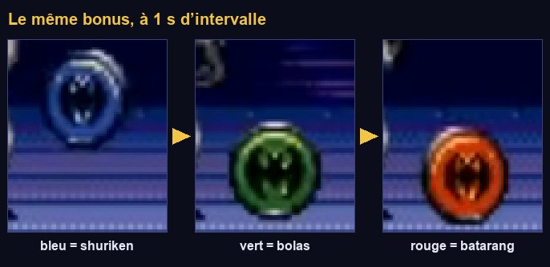
| Couleur du bonus | Arme | Caractère |
|---|---|---|
| Rouge / orange | Batarang | Tir dispersé : plus de projectiles en éventail quand le niveau monte |
| Vert | Bolas | Pas de dispersion, mais les plus gros dégâts |
| Bleu | Shuriken | L'arme la plus faible |
- Ramasser la couleur déjà en main fait monter l'arme d'un niveau, jusqu'à 7.
- La barre sous le score se remplit seule en ~1,1 s quand on ne tire pas. Le tir suivant est un tir puissant, et la vide.
- Le crâne qui roule au sol déclenche un flash blanc et détruit tous les ennemis à l'écran.
La jauge qui se remplit puis se vide : 1:46–1:48. Le bonus qui change de couleur : 12:30. Le crâne : 12:23.
Les armes en données
6.2 · La fiche WeaponData
Les trois armes ont le même comportement (tirer N projectiles à telle vitesse, avec tels dégâts) ; seuls les chiffres changent. On écrit donc le comportement une seule fois, et chaque arme devient un fichier de données éditable dans l'Inspecteur. Un game designer peut équilibrer le jeu sans toucher au code, et ajouter une quatrième arme ne demande aucune ligne de code.
- Dans
res://weapons/data/, crée trois ressourcesWeaponData(clic droit → Nouveau → Ressource) :batarang.tres,bolas.tres,shuriken.tres. - Règle-les avec ces valeurs (les champs non cités gardent leur valeur par défaut) :
| Champ | batarang.tres | bolas.tres | shuriken.tres |
|---|---|---|---|
| id / display_name | batarang / Batarang | bolas / Bolas | shuriken / Shuriken |
| color | #ff6b3d | #43d18f | #5aa8ff |
| speed | 300 | 260 | 360 |
| fire_interval | 0.16 | 0.22 | 0.10 |
| count_by_level | 1, 2, 3, 3, 4, 4, 5 | 1, 1, 1, 1, 1, 1, 1 | 1, 1, 2, 2, 2, 3, 3 |
| damage_by_level | 1, 1, 1, 2, 2, 2, 3 | 3, 3, 4, 4, 5, 5, 6 | 1, 1, 1, 1, 1, 2, 2 |
| spread_deg | 12 | 0 | 6 |
| projectile_scale | 1.0 | 1.0 | 0.8 |
| power_count / power_damage | 5 / 6 | 1 / 16 (power_scale 2.5) | 8 / 3 |
L'effet exact de chaque niveau n'est documenté nulle part : ces chiffres sont des hypothèses raisonnables. C'est justement l'intérêt des données : tu les ajusteras en jouant, sans toucher au code. Hypothèse retenue : changer de couleur ramène l'arme au niveau 1.
6.3 · Le registre des armes
preload et ressources partagéespreload() charge le fichier au moment où le script est compilé ; le chemin doit donc exister, d'où l'ordre : les .tres d'abord. Une ressource chargée est partagée : tous ceux qui chargent batarang.tres reçoivent le même objet. On ne modifie donc jamais une fiche pendant le jeu (sinon toutes les armes changent) ; on lit seulement ses valeurs.
La boîte à outils d'effets
6.4 · Le piège de la position mondiale
Avant d'écrire les effets, une expérience de deux minutes, pour comprendre un bug qui frappe tous les débutants.
- Nouvelle scène 2D
res://sandbox/spawn_test.tscn. Ajoute un enfantNode2DnomméArena, en position (100, 0). - Script sur la racine :
La Sortie affiche « obtenu : (260, 112) » et le carré est décalé de 100 px. Un nœud sans parent n'a pas de « monde » : global_position y est rangé tel quel dans position (locale), puis devient relatif au parent quand on l'ajoute. Avec un parent à l'origine, le bug est invisible ; avec un parent placé ailleurs (l'arène d'un boss), l'objet surgit à des centaines de pixels.
6.5 · Fx : faire apparaître, exploser, flasher
La classe Fx règle ce problème une fois pour toutes avec spawn(), que tout le jeu utilisera pour faire apparaître bombes, explosions, bonus et ennemis.
Elle a besoin d'une scène d'explosion. Crée d'abord son script, puis la scène :
- Nouvelle scène, racine
AnimatedSprite2DnomméeExplosion, scriptexplosion.gd, enregistrée enres://fx/explosion.tscn. - Facultatif mais conseillé : dessine une bande de 4 images de 16×16 (des cercles orange de plus en plus grands, puis gris) et crée une animation
defaultnon bouclée, à 15 i/s. Sans animation, l'explosion se détruit aussitôt, sans erreur. - Crée ensuite
res://fx/fx.gd. L'ordre compte :fx.gdfait unpreloaddeexplosion.tscn.
Comprendre le code
class_name Fxsansextends: une classe utilitaire, jamais instanciée. On appelle ses fonctionsstaticdirectement :Fx.explosion(position).Engine.get_main_loop() as SceneTree: une fonction statique n'a pas deget_tree()(elle n'appartient à aucun nœud). On récupère l'arbre de scène du jeu par le moteur.parent_2d.to_local(at): convertit une position du monde dans le repère du parent. C'est la correction du piège de 6.4.add_child.call_deferred(node): l'ajout attend la fin de l'image. Indispensable quand on fait apparaître un objet physique pendant un signal de collision (un bonus qui sort d'un ennemi touché, par exemple).create_timer(duration, true, false, true): le 4ᵉ argument fait ignorerEngine.time_scaleà la minuterie. Utile quand le jeu sera figé un instant (étape 13).
Dans spawn_test.gd, remplace les deux lignes marker.global_position = … et $Arena.add_child(marker) par Fx.spawn(marker, Vector2(160, 112), $Arena). Relance : « obtenu : (160, 112) ».
La réserve de projectiles
6.6 · Pool
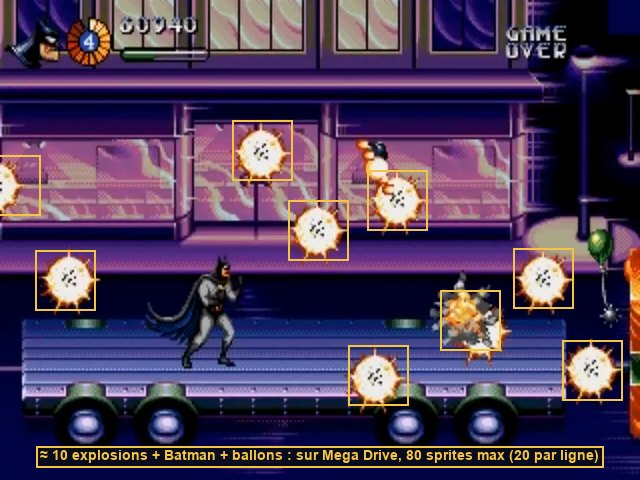
Pool.Créer et détruire des nœuds en rafale (instantiate() puis queue_free()) coûte des allocations et des insertions dans l'arbre. On fabrique donc les projectiles une fois, au chargement, puis on les « endort » et on les « réveille ». Bonus : un nombre maximal de tirs simultanés, comme sur la console (quand les 24 emplacements sont pris, le bouton ne fait rien).
process_modehide() rend invisible, mais une Area2D cachée détecte toujours les collisions : un batarang « rangé » blesserait encore. process_mode = DISABLED coupe tout : plus de _physics_process, et (avec le réglage par défaut disable_mode = REMOVE) la zone sort de la simulation physique.
bind()_on_released.bind(item) fabrique un Callable qui appellera _on_released(item). Le signal released n'a pas de paramètre ; bind ajoute celui dont on a besoin : quel objet revient dans la réserve.
6.7 · Le projectile
Un projectile est une Hitbox qui se déplace : il hérite de tout le système de dégâts de l'étape 02.
- Nouvelle scène, racine
Area2DnomméeProjectile, scriptprojectile.gd. Couche vide, masque 6. Enregistre enres://weapons/projectile.tscn. - Enfants :
Sprite2D(texture provisoire :res://icon.svgavec Scale = (0,06 ; 0,06), soit 8 px),CollisionShape2D(cercle de rayon 5),VisibleOnScreenNotifier2D(laisse son rectangle par défaut).
Projectile (Area2D, projectile.gd) couche aucune · masque 6 (hurtbox_ennemis) ├── Sprite2D icon.svg × 0,06 en attendant un vrai sprite ├── CollisionShape2D cercle de rayon 5 └── VisibleOnScreenNotifier2D
Comprendre le code
extends Hitbox: un projectile est une hitbox.super._ready()exécute d'abord le_ready()deHitbox(qui connectearea_entered), puis on ajoute nos connexions.fire()remet tout l'état à zéro : un objet recyclé garde les valeurs de sa vie précédente. Oublier une ligne ici (par exemplereset_hits()), c'est un bug qui n'apparaît qu'au 25ᵉ tir._activeprotège contre un double retour : un projectile qui touche un ennemi au bord de l'écran recevraitlandedetscreen_exited, et entrerait deux fois dans la réserve.- Le tir puissant (
pierce) traverse les cibles et survit hors de l'écran.
Le système d'armes
6.8 · WeaponSystem : tir, niveaux et jauge
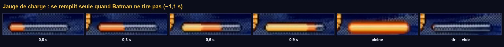
Comprendre le code
- La jauge :
_idlecompte le temps depuis le dernier tir. Après 0,2 s de repos,chargemonte dedelta / 1,1par tick, donc de 0 à 1 en 1,1 s. Tout tir la remet à 0. - L'éventail : pour 3 projectiles écartés de 12°,
(i - 1) × 12donne -12°, 0°, +12°. La formule(i - (count - 1) / 2.0)centre l'éventail quel que soit le nombre. - L'arme ne sait pas d'où vient le changement d'arme : elle écoute
Game.weapon_changed. Le bonus parle àGame,Gameprévient tout le monde. Chacun peut être supprimé ou remplacé sans casser les autres. add_child.call_deferred(_pool): pendant le_ready()d'un nœud, la scène courante est encore en construction ; on reporte l'ajout.
- Dans
player.tscn, ajoute un nœudWeaponSystem(nommé exactement ainsi) avec Projectile Scene =projectile.tscn.player.gdle trouve tout seul grâce àget_node_or_null("WeaponSystem"). - Dans
test_room.tscn, ajoute unCanvasLayernomméDebugUIavec deux enfants : unProgressBarnomméCharge(position (8, 8), taille 60×6, Show Percentage décoché) et unLabelnomméWeapon(position (8, 16), taille de police 8). - Complète
test_room.gd:
- Loin de la cible, maintenir J tire en rafale, devant soi. Haut + J : vers le haut. Diagonales en sautant. Accroupi : au ras du sol.
- Sans tirer pendant ~1,3 s, la barre se remplit ; le tir suivant est gros, coloré, et traverse la cible.
- Les touches 1, 2, 3 changent l'arme ; appuyer plusieurs fois sur la même fait monter le niveau (le batarang s'élargit en éventail).
- Ouvre Débogueur → Moniteurs → Object → Nodes : en tirant sans arrêt, le nombre de nœuds ne bouge pas. C'est la réserve qui travaille.
- Avec le shuriken niveau 7 et une cadence élevée, le tir s'interrompt parfois : les 24 emplacements sont pris.
- « Invalid call. Nonexistent function 'instantiate' in base 'Nil' » :
Projectile Scenen'est pas renseignée sur leWeaponSystem. - Les tirs restent collés à Batman : la réserve a été ajoutée sous Batman au lieu de la scène courante.
- Les tirs ne partent que vers la droite : vérifie
compute_aim()et quefacingchange bien (l'étiquette de débogage affiche la flèche).
Les bonus
6.9 · La base Pickup
Pickup gère tout ce qui est commun (tomber, clignoter, détecter Batman) et laisse un trou : collect(). Chaque bonus concret hérite de Pickup et ne remplit que ce trou. C'est le patron méthode modèle (template method).
6.10 · Le bonus d'arme à couleur cyclique
- Nouvelle scène, racine
CharacterBody2DnomméeWeaponPickup, scriptweapon_pickup.gd. Couche vide, masque 1 et 2. - Enfants :
Sprite2D(icon.svg, scale 0,1),CollisionShape2D(rectangle 10×10, position (0, -5)),Area2D(couche 7, masque 3) avec son propreCollisionShape2D(rectangle 14×14, position (0, -7)). - Enregistre en
res://pickups/weapon_pickup.tscn, puis places-en deux dans la salle de test.
WeaponPickup (CharacterBody2D) couche aucune · masque 1+2 : il tombe et se pose
├── Sprite2D
├── CollisionShape2D petit rectangle
└── Area2D couche 7 « bonus » · masque 3 « corps_joueur »
└── CollisionShape2DLes bonus font un petit saut, se posent et changent de couleur chaque seconde. Ramasse-en un au bon moment : l'étiquette de débogage affiche l'arme et son niveau. Au bout de 6 s, le bonus clignote, puis disparaît à 8 s.
C'est un mini-jeu de timing : toucher le bonus au bon moment pour avoir l'arme voulue. Une seule variable (_index) et un compteur suffisent. La couleur n'est qu'une conséquence de l'état, recalculée par _refresh() : on ne stocke jamais deux fois la même information.
6.11 · Le crâne et le bonus de charge
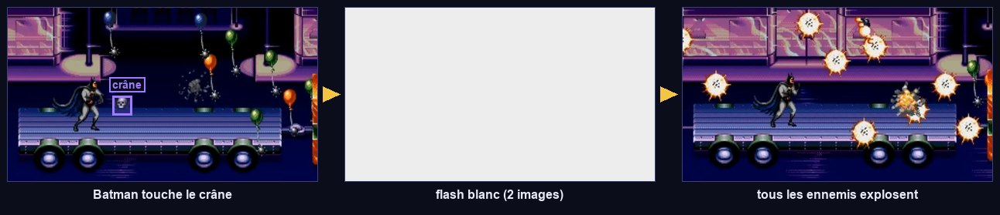
- Crée
skull_bomb.tscnetcharge_pickup.tscncommeweapon_pickup.tscn(même arbre), avec leur script. Astuce : à partir deweapon_pickup.tscn, puis change le script de la racine. - Donne-leur une couleur reconnaissable (
modulateduSprite2D) : blanc cassé pour le crâne, jaune pour la charge. - Places-en un de chaque dans la salle de test.
Le crâne roule vers Batman ; le toucher blanchit l'écran pendant 2 images (les cibles ne sont pas des ennemis : elles survivent, on testera la destruction à l'étape 07). Le bonus de charge remplit la barre d'un coup.
Le crâne ne sait pas quels ennemis existent. Il demande au SceneTree « tous les nœuds du groupe enemies », et chaque ennemi s'ajoutera lui-même au groupe à sa création. Pour les boss, il vérifie aussi qu'ils sont active : un boss qui attend au bout de la section ne doit pas perdre de vie avant le combat. boss.get("active") lit la propriété par son nom, sans avoir besoin de la classe Boss (elle n'arrive qu'à l'étape 09).
Point de contrôle
- Maintenir l'attaque tire en rafale, dans 8 directions, à la cadence de l'arme.
- Sans tirer pendant ~1,3 s, la jauge se remplit ; le tir suivant est gros, coloré et traverse les cibles.
- Un bonus posé au sol change de couleur chaque seconde ; le ramasser change l'arme ou augmente son niveau.
- Plus de 24 projectiles à l'écran est impossible.
- Le nombre de nœuds reste stable pendant les rafales.
Ce que tu retiens
Pourquoi les armes sont-elles des fichiers .tres plutôt que trois scripts ?
Parce que leur comportement est identique et que seuls les chiffres diffèrent. Un seul code pour le comportement, des données pour les variantes : on équilibre sans programmer, et on ajoute une arme sans écrire de code.
Que se passerait-il si Pool se contentait de hide() ?
Les projectiles rangés resteraient actifs physiquement : invisibles, ils continueraient de détecter et de blesser les ennemis qui passent à l'endroit où ils ont été rangés. process_mode = DISABLED les retire de la simulation.
Pourquoi le bonus appelle-t-il Game.set_weapon() au lieu de modifier directement le WeaponSystem de Batman ?
Pour le découplage : le bonus n'a pas à savoir où est le système d'armes. Game émet weapon_changed, et tous ceux qui sont concernés (le système d'armes, le HUD de l'étape 10) réagissent. L'arme survit aussi aux changements de scène, puisqu'elle est rangée dans Game.
Quel bug évite Fx.spawn() ?
Un nœud qui reçoit global_position avant d'avoir un parent stocke cette valeur comme position locale ; une fois ajouté sous un parent qui n'est pas à l'origine, il apparaît décalé de la position de ce parent. spawn() convertit la position monde dans le repère du parent avant l'ajout.
Pour aller plus loin
- Crée une quatrième arme « boomerang » (couleur jaune) uniquement avec un nouveau
.treset une ligne dansWeapons.DATA. - Dessine de vrais sprites pour le batarang (8×8, 2 images) et assigne-les à
projectile_texture. - Lis la section « réserve de projectiles » du tome 04.
Ennemis et arènes à vagues
Le cœur du rythme de Batman & Robin : la caméra se fige, des vagues d'ennemis arrivent jusqu'à un quota, « GO! » s'affiche, on avance. On écrit une classe de base commune, six ennemis qui n'en écrivent que le comportement, et un « directeur » qui orchestre les vagues.
Ce que tu vas apprendre
Godot 4
- Hériter d'une classe à soi (
extends Enemy) enum+matchPath2D,PathFollow2DRayCast2D,tree_exiting- Tableaux de ressources dans l'Inspecteur
Développement de jeu
- Héritage et composition
- L'IA par états simples
- Le « directeur » de rencontres
- Tension et détente
- Les tables de butin
- Les trajectoires dessinées
Le rythme
7.1 · Observer une arène

Regarde 1:52–2:27 : la caméra s'arrête, les clowns tombent du haut, sautent du balcon ou arrivent par les côtés. Jamais plus de trois ou quatre à la fois. Quand l'écran est vide, « GO! » clignote à droite et la caméra repart. Même chose à 3:18, 7:49, 11:41.
Arène (tension : l'écran est figé, il faut survivre) → couloir (détente : on avance, on ramasse des bonus) → arène… Ce rythme est le squelette du level design de presque tous les jeux d'action. Le joueur respire entre deux combats, et chaque nouvelle arène est un petit événement.
La base commune
7.2 · Atelier : des formes de substitution pour les ennemis
Les ennemis utilisent un AnimatedSprite2D nommé Sprite, dont le code change la teinte (flash quand on les touche, couleur des ballons). Un rectangle enfant ne suivrait pas ces teintes : il faut que le sprite affiche lui-même quelque chose.
- Dans un logiciel de dessin, crée une image blanche de 16×16 pixels et enregistre-la en
res://art/placeholder/white.png. - Crée une ressource
SpriteFrames(clic droit → Nouveau → Ressource → SpriteFrames) :res://art/placeholder/placeholder_frames.tres. Ouvre-la, et ajoutewhite.pngcomme unique image de l'animationdefault. - Pour chaque ennemi, le
Spriterecevra ceSpriteFrames, une Scale qui donne sa taille (16×32 = scale (1, 2)), un Offset y = -8 pour que le bas touche l'origine, et une couleur via Modulate.
modulate et self_modulateDeux teintes se multiplient : modulate s'applique au nœud et à ses enfants, self_modulate au nœud seul. Le code des ennemis utilise self_modulate pour le flash et la couleur des ballons ; on réserve donc modulate à la couleur de base de la forme de substitution.
7.3 · La classe Enemy
Tous les ennemis ont une vie, une hurtbox, un score, un butin et une mort spectaculaire. On met ce socle dans une classe Enemy, qui s'appuie sur les composants de l'étape 02 (composition). Chaque ennemi concret hérite d'Enemy (héritage) et n'écrit qu'une fonction : think(), son comportement. On combine les deux approches, chacune là où elle est la plus simple.
Comprendre le code
_physics_processest écrit une fois pour tous : gravité, puisthink()(le comportement propre), puismove_and_slide(), puis les minuteries. Les classes filles ne réécrivent pas_physics_process.health.died.connect(kill): la mort passe toujours parkill(), que l'ennemi meure de ses blessures ou par le crâne._deadempêche de mourir deux fois (deux balles dans la même image).drops+drop_chance: une table de butin minimale. On règle dans l'Inspecteur ce que lâche un ennemi et avec quelle probabilité.Color(4, 4, 4): une teinte supérieure à 1 éclaircit, d'où le flash blanc.contact_hitbox.facing: le recul dû au contact pousse Batman à l'opposé de l'ennemi, de quelque côté qu'il arrive.
Le bestiaire

Enemy.7.4 · Le clown
Il arrive en tombant ou en marchant, s'approche, prépare son coup, frappe avec son aiguillon, recule et recommence. Sur le balcon, il saute quand Batman passe dessous.
Pour Batman, une machine par nœuds : dix états, beaucoup de logique. Pour un clown de cinq états de quelques lignes, un enum et un match suffisent et se lisent d'un coup d'œil. La phase WINDUP (préparation) est essentielle : c'est elle qui laisse au joueur le temps de voir venir le coup. C'est de la télégraphie.
- Nouvelle scène, racine
CharacterBody2DnomméeClown, scriptclown.gd. Couche 4, masque 1 et 2. Enregistre enres://enemies/clown.tscn. - Construis cet arbre (le
Spriteavecplaceholder_frames.tres, scale (1, 2), offset y = -8, modulate violet) :
Clown (CharacterBody2D, clown.gd) couche 4 « corps_ennemis » · masque 1+2
├── Sprite (AnimatedSprite2D) forme de substitution violette 16×32
├── CollisionShape2D rectangle 14×32, position (0, -16)
├── Health max_health = 2 (À CALIBRER)
├── Hurtbox couche 6 · masque vide · health = Health
│ └── CollisionShape2D rectangle 14×30, position (0, -16)
├── ContactHitbox (Hitbox) couche vide · masque 5 · damage 1 : toucher le corps fait mal
│ └── CollisionShape2D rectangle 12×28, position (0, -16)
└── PokeHitbox (Hitbox) couche vide · masque 5 · damage 1 · désactivée par défaut
└── CollisionShape2D rectangle 16×8, position (14, -20)
- Sur la racine, règle Drops : ajoute un élément,
weapon_pickup.tscn; Drop Chance = 0,3. - Places-en deux dans la salle de test : un au sol, un sur le balcon.
- Les clowns marchent vers Batman, s'arrêtent, frappent, reculent.
- Passe sous le clown du balcon : il saute dans la rue.
- Deux tirs de batarang le tuent ; parfois il lâche un bonus.
- Le crâne de l'étape 06 détruit maintenant tous les clowns à l'écran.
- « Invalid get index 'hurt' (on base: 'null instance') » : un nœud n'a pas le nom attendu par
enemy.gd(Sprite,Health,Hurtbox). - Le clown traverse le sol : son masque doit contenir la couche 1.
- Le clown ne blesse pas Batman : ses hitbox doivent regarder la couche 5, et la Hurtbox de Batman être sur la couche 5.
7.5 · Les vagues : WaveData
Plutôt que de placer 300 ennemis à la main, on décrit des vagues : quels ennemis, combien en même temps au maximum, combien à abattre. Un directeur lit cette description et fait apparaître les ennemis au bon rythme. Le level design devient un réglage de données, et seuls les ennemis réellement à l'écran existent en mémoire. Beaucoup de jeux modernes vont plus loin, avec un directeur qui adapte la pression au joueur.
7.6 · L'arène : WaveArena
Formationwave_arena.gd mentionne le type Formation, créé en 7.11. En attendant, l'éditeur affiche une erreur « Could not find type "Formation" ». Deux options : créer dès maintenant res://enemies/formation.gd avec le code de 7.11, ou commenter provisoirement les deux lignes qui utilisent Formation. Je te conseille la première.
Comprendre le code
- Deux compteurs :
_killedne compte que les ennemis abattus (le quota) ;_alivecompte ceux qui sont présents, quelle que soit la façon dont ils disparaissent. Sans_alive, un ennemi qui s'échappe de l'écran bloquerait l'arène pour toujours. tree_exiting: un signal émis par tout nœud qui quitte l'arbre. Une seule connexion couvre la mort, la sortie d'écran et le changement de scène._killed + _alive < w.kill_quota: on n'ajoute pas d'ennemi si ceux déjà présents suffisent à finir le quota._begin.call_deferred():body_enteredest un signal de collision. Si la première vague lance une formation, elle ajoute des corps physiques ; Godot l'interdit pendant ce signal (erreur « Can't change this state while flushing queries »). On reporte donc le démarrage à la fin de l'image.
7.7 · La bulle « GO! » et une première arène
- Nouvelle scène, racine
CanvasLayernomméeGoSign, scriptgo_sign.gd, enregistrée enres://level/go_sign.tscn. - Enfant
TextureRectnomméBubble: dans la barre d'outils, Ancres → Centre droit, taille 40×20. Si tu n'as pas encore d'image de bulle, ajoute-lui un enfantLabel« GO! » (taille de police 12, jaune) : il clignotera avec son parent. - Dans la salle de test, retire les clowns posés à la main. Ajoute une
WaveArenaen (600, 112), couche vide, masque 3, avec une forme rectangle 8×224 : une ligne verticale que Batman franchira. - Dans l'Inspecteur de l'arène : Go Sign Scene =
go_sign.tscn. Waves : ajoute deux éléments, chacun Nouveau WaveData.- Vague 1 :
enemies= [clown.tscn],kill_quota= 4,max_alive= 2,origins= ["top", "right"]. - Vague 2 :
enemies= [clown.tscn],kill_quota= 6,max_alive= 3,originspar défaut.
- Vague 1 :
- Assure-toi que le sol de la salle s'étend bien au-delà de x = 800.
Cours vers la droite. En passant x = 600, la caméra se recentre sur l'arène et se fige. Des clowns tombent du haut et arrivent par la droite, jamais plus de deux à la fois. Après 4 morts et un écran vide, la deuxième vague démarre (trois à la fois). À la fin, « GO! » clignote à droite et la caméra repart.
Joue l'arène trois fois en ne changeant que max_alive et spawn_interval. Avec 1 et 1,5 s, c'est une promenade ; avec 4 et 0,3 s, c'est l'enfer. Le même code donne des expériences très différentes : c'est le travail du level designer.
7.8 · Le costaud qui empoigne
- Crée
res://enemies/thug.tscncomme le clown, mais : pas dePokeHitbox, une forme plus large (20×34), Health 4, une couleur marron, et un enfantGrabArea(Area2D, couche vide, masque 3) avec un rectangle 26×30 en (0, -16). - Ajoute
thug.tscndans la listeenemiesde la vague 2 : [clown, clown, thug].
Le costaud s'approche, charge, et empoigne Batman (« Grabbed »). Il le serre toutes les 0,7 s. Martèle les boutons : Batman se libère avec un petit saut et quelques instants d'invincibilité ; le costaud reste étourdi. C'est la première fois que deux machines à états (celle de Batman, celle du costaud) se parlent : fsm.force() dans un sens, release() dans l'autre.
7.9 · Le tireur et les balles ennemies
Les tirs ennemis réutilisent le projectile de l'étape 06 : seul le masque change.
- Ouvre
projectile.tscn→ →res://enemies/enemy_bullet.tscn. Dans la copie : masque 5 seul (au lieu de 6), et une teinte orange sur leSprite2D. - Dans la salle de test, ajoute un nœud
PoolnomméEnemyBullets, avec Scene =enemy_bullet.tscn, et mets-le dans le groupeenemy_bullets. Chaque section en aura un. - Crée
res://enemies/gunner.tscnsur le modèle du clown (sansPokeHitbox), couleur verte, Health 2. - Place un tireur sur le balcon de la salle de test.
Le tireur se tourne vers Batman et tire des rafales de 3 balles. Depuis la rue, il tire en diagonale vers le bas. Accroupi, Batman esquive les balles horizontales (c'est la Hurtbox abaissée de l'étape 05 qui agit).
7.10 · La bombe
Une seule bombe pour les têtes à hélice, Harley et le Joker : elle tombe, rebondit un nombre réglable de fois, puis explose.
- Nouvelle scène, racine
Area2DnomméeBomb, scriptbomb.gd, couche vide, masque 5. Enregistre enres://enemies/bomb.tscn. - Enfants :
Sprite2D(icon.svg, scale 0,06, teinte noire),CollisionShape2D(cercle de rayon 4),RayCast2D(Target Position = (0, 6), masque 1 et 2).
Bomb (Area2D, bomb.gd) masque 5 · damage 1 · single_hit ├── Sprite2D ├── CollisionShape2D └── RayCast2D cible (0, 6) · masque 1+2 : détecte le sol
RayCast2DUn rayon qui part du nœud et s'arrête au premier obstacle de son masque. La bombe n'est pas un corps physique (c'est une zone) : elle ne « tombe » pas toute seule sur le sol. Le rayon, pointé vers le bas, lui dit où est le sol. force_raycast_update() recalcule le rayon tout de suite, après le déplacement de ce tick.
7.11 · Les formations de têtes à hélice

Path2D.Une Path2D se dessine à la souris dans l'éditeur. Chaque membre de la formation suit la même courbe avec un retard : on obtient une « chenille » sans aucune équation. Le level designer règle tout à l'œil.
- Crée
res://enemies/propeller_head.tscn: racineCharacterBody2D, couche 4, masque vide (elle vole et ne bute sur rien), forme de 14×14, Health 1, Hurtbox et ContactHitbox, couleur jaune. Bomb Scene =bomb.tscn. - Dans la salle de test, ajoute un enfant de l'arène :
Path2DnomméCaterpillar, scriptformation.gd. Sélectionne-le : la barre d'outils propose des outils de courbe. Avec l'outil « Ajouter un point », clique pour dessiner une courbe qui descend du haut de l'écran puis serpente vers la gauche. Les coordonnées des points sont relatives auPath2D. - Enemy Scene =
propeller_head.tscn, Count = 8, Delay = 0,3. - Ajoute une troisième vague à l'arène :
kill_quota= 0,enemiesvide, et Formation = le chemin versCaterpillar(bouton « Assigner »).
Avec kill_quota = 0, la vague se termine dès que _alive vaut 0. Les membres d'une formation ne sont pas comptés dans _alive : l'arène passe donc aussitôt à la suite pendant que la chenille vole. Si tu veux attendre la fin de la formation, connecte son signal finished à une méthode de l'arène qui appelle _next_wave(). C'est un bon exercice.
À la troisième vague, une file de têtes jaunes suit ta courbe et lâche des bombes qui rebondissent puis explosent. Abattues, elles explosent sur place (sans suivre la trajectoire : c'est Fx.explosion() qui les place dans la scène courante).
7.12 · Le ballon-mine
- Crée
res://enemies/balloon_mine.tscn: couche 4, masque vide, Health 1, Hurtbox, ContactHitbox (masque 5), forme ronde de rayon 8. Garde la Modulate duSpriteblanche : la couleur aléatoire passe parself_modulate. - Teste-le en ajoutant une vague
[balloon_mine.tscn]avecorigins = ["below"],max_alive6,kill_quota8.
On ne téléporte pas le ballon sur sa courbe sinusoïdale : on lui donne une vitesse proportionnelle à l'écart entre où il est et où il devrait être. Il suit sa cible en douceur et reste un vrai corps physique. C'est le principe du régulateur proportionnel, utilisé partout (caméras, tourelles, IA).
kill() donne des points même quand le ballon explose contre Batman. Pour l'éviter, ajoute à kill() un paramètre award := true.
7.13 · Les objets cassables

Un seul script pour tout ce qui se casse : poubelles (bonus), petits cadeaux (bonus), paquet géant (un sbire en jaillit).
- Crée
res://level/trash_can.tscn: racineNode2D(scriptbreakable.gd), enfantsSprite2D(forme grise 12×16),Health(max 1),Hurtbox(couche 6, health = Health) avec sa forme. - Drops = [weapon_pickup.tscn]. Places-en deux dans la salle de test, avant l'arène.
Un tir sur la poubelle : elle explose et un bonus d'arme jaillit, puis se pose et change de couleur.
Point de contrôle
- En entrant dans l'arène, la caméra se fige ; des clowns tombent du haut et arrivent par la droite, jamais plus que
max_aliveà la fois. - Après le quota, la vague suivante démarre une fois l'écran vide, puis « GO! » clignote et la caméra repart.
- Un costaud attrape Batman ; marteler les boutons le libère.
- Le tireur tire des rafales ; les têtes à hélice suivent ta courbe et bombardent.
- Une poubelle détruite lâche un bonus d'arme ; le crâne détruit tout ce qui est à l'écran.
Ce que tu retiens
Pourquoi Enemy appelle-t-il think() au lieu de laisser chaque ennemi écrire son _physics_process ?
Pour que le socle commun (gravité, déplacement, flash, minuteries) soit écrit une fois et appliqué dans le bon ordre. Les classes filles ne fournissent que ce qui les distingue. Si on corrige la gravité, tous les ennemis en profitent.
Que se passerait-il sans le compteur _alive ?
L'arène compterait seulement les ennemis abattus. Un ennemi qui sort de l'écran sans mourir (une tête à hélice en fin de trajectoire) ne serait jamais « fini », et la vague suivante ne démarrerait jamais.
À quoi sert la phase WINDUP du clown ?
À télégraphier l'attaque : un court délai visible avant le coup laisse au joueur le temps de réagir (reculer, sauter, frapper le premier). Sans elle, les coups paraissent injustes.
Pourquoi l'arène démarre-t-elle en différé ?
Parce que body_entered est émis pendant le traitement des collisions, et qu'ajouter des corps physiques à ce moment-là est interdit. Si la première vague lance une formation, ses ennemis seraient ajoutés pendant ce signal. call_deferred reporte le démarrage à la fin de l'image.
Pour aller plus loin
- Connecte
Formation.finishedpour que l'arène attende la fin de la chenille. - Crée un clown « rapide » : une scène héritée de
clown.tscn(clic droit → Nouvelle scène héritée) avecwalk_speedà 90 et une autre couleur. - Crée le sbire au lance-flammes : un
Gunnersans balles, avec une grandeHitboxactivée pendant 0,6 s devant lui.
Effets Mega Drive
On donne au jeu son grain de 1995 : des fondus en 8 paliers, une façade dont chaque ligne défile à sa propre vitesse, un feu qui ondule, des flashs de palette. Tu vas écrire tes premiers shaders, et comprendre comment la console faisait « l'impossible ».
Ce que tu vas apprendre
Godot 4
- Shaders
canvas_item:fragment(),vertex(), uniformes,varying ShaderMaterialet paramètres depuis le code- Autoload d'une scène
Curve,Image,Parallax2D
Développement de jeu
- Séparer le calcul et l'affichage
- Les effets raster (par ligne)
- Couleurs indexées et palettes
- Séparer le visuel de la collision
- La parallaxe et la pseudo-3D par l'échelle
Premier contact avec les shaders
Un shader est un petit programme exécuté par la carte graphique pour chaque pixel d'un objet (la fonction fragment()), des millions de fois par seconde et en parallèle. Il reçoit la position du pixel (UV, de 0 à 1 sur l'objet) et doit écrire sa couleur (COLOR). Les paramètres réglables depuis l'extérieur sont des uniform. Le langage de Godot ressemble au GLSL.
Fondus et flashs
8.1 · PaletteFx : le post-traitement 9 bits

Chaque couleur de la console tient sur 9 bits : 3 bits par canal, donc 8 niveaux de rouge, de vert et de bleu. Un fondu au noir retire un niveau à chaque canal toutes les quelques images : 8 paliers visibles. Un fondu Godot lisse (modulate animé) n'a pas ce grain. On le recrée avec un post-traitement plein écran.
- Crée le shader : clic droit sur
res://fx/→ Nouveau → Ressource → Shader (ou Nouveau shader), modecanvas_item, nompalette_fx.gdshader, et tape le code. - Nouvelle scène, racine
CanvasLayernomméePaletteFx, scriptpalette_fx.gd. EnfantColorRectnomméRect: barre d'outils Ancres → Rect complet ; Inspecteur Material → Nouveau ShaderMaterial, puis Shader =palette_fx.gdshader. Enregistre enres://fx/palette_fx.tscn. - : ajoute la scène
res://fx/palette_fx.tscn, nomPaletteFx, juste aprèsGame. - Dans
test_room.gd, ajoute ces deux cas dans lematch event.keycode:
F : l'écran s'assombrit en 8 paliers bien visibles (0,4 s), avec une teinte qui change en route, puis revient. G : flash blanc de 2 images. Les couleurs de tout le jeu sont maintenant limitées à 8 niveaux par canal : les dégradés deviennent des aplats, comme sur la console.
Comprendre le code
hint_screen_texture: le shader lit ce qui est déjà dessiné à l'écran sous lui. Comme leCanvasLayerest sur la couche 100, au-dessus de tout, il voit l'image entière et la retouche.floor(c * 7.0 + 0.5): ramène chaque canal (0 à 1) à un niveau entier de 0 à 7. Le fondu retirefadeniveaux à chaque canal : un canal à 2 atteint 0 avant un canal à 7, d'où la teinte qui tourne.- Un autoload peut être une scène, avec ses nœuds enfants : pratique pour un effet qui a besoin d'un
ColorRectet d'un matériau. process_mode = ALWAYS: les fondus marcheront même quand le jeu sera en pause.await get_tree().physics_frame: attend un tick. Compter des ticks plutôt que des secondes donne des paliers d'exactement 3 images, comme sur la console.
8.2 · Brancher le crâne sur PaletteFx
Le flash du crâne (étape 06) utilisait un rectangle blanc. Remplace le corps de Fx.flash_screen() pour passer par la palette :
Tous ceux qui appellent Fx.flash_screen() continuent de fonctionner sans modification : seul l'intérieur de la fonction a changé. C'est l'intérêt de passer par une fonction plutôt que de dupliquer le code du flash partout.
Le plan raster
8.3 · Le principe
L'écran est dessiné ligne par ligne. Entre deux lignes, le processeur vidéo lit une table H-Scroll qui contient un décalage horizontal par ligne. À chaque image, le programme calcule une table de 224 valeurs, et le matériel l'applique gratuitement. Décaler chaque ligne d'une quantité différente donne du relief à une image plate : c'est le « secret #1 » de Jon Burton.

On reproduit exactement la division du travail de la console. Un script GDScript joue le rôle du processeur : à chaque image, il remplit deux tableaux de 224 valeurs (h_scroll : décalage de chaque ligne ; v_line : quelle ligne de l'image source afficher). Un shader joue le rôle du processeur vidéo : pour chaque pixel, il lit la valeur de sa ligne. Un seul shader suffira pour la façade, l'intro en perspective ou d'autres effets : seules les tables changeront.
Comprendre le code
uniform float h_scroll[224]: un tableau de paramètres. Le script lui envoie unPackedFloat32Arrayde la même taille à chaque image (448 nombres en tout : rien pour une carte graphique).floor(UV * screen_size):UVva de 0 à 1 sur le rectangle ; multiplié par 320×224, il donne le pixel d'écran. La partie entière de y est le numéro de ligne.repeat_enable: quand on lit au-delà du bord de la texture, on retombe au début. La façade boucle à l'infini sans calcul.duplicate(): un matériau est une ressource partagée. Sans copie, deux plans raster partageraient les mêmes tables.- Le placement dans un
CanvasLayerrend le rectangle fixe à l'écran : il ne défile pas avec la caméra. C'est la table qui simule le défilement.
8.4 · Une texture de test générée par script
Pour régler une façade, une image de test vaut mieux que le vrai décor : des bandes de couleur montrent la vitesse de chaque ligne, et des lignes repères indiquent le balcon et le trottoir. Plutôt que de la dessiner, on la fait générer par un script d'éditeur.
- Crée ce script dans
res://tools/, puis . res://art/s1/facade_debug.pngapparaît dans le Système de fichiers. Double-clique dessus pour la voir.
8.5 · La façade pseudo-3D
- Dans
test_room.tscn, ajoute unCanvasLayernomméBackground, Layer = -10 (derrière le monde). - Enfant
ColorRectnomméFacade, scriptfacade_raster.gd. Material → Nouveau ShaderMaterial, shaderraster_plane.gdshader. Plane Texture =facade_debug.png. - Depth → Nouveau Curve, puis clique sur la courbe pour l'éditer. Dans l'Inspecteur de la courbe : Max Value = 1,2 ; Point Count = 9 ; renseigne la Position de chaque point, et règle Left Mode et Right Mode à
Linear:
| Point | 0 | 1 | 2 | 3 | 4 | 5 | 6 | 7 | 8 |
|---|---|---|---|---|---|---|---|---|---|
| x (ligne / 223) | 0,14 | 0,44 | 0,47 | 0,52 | 0,72 | 0,73 | 0,78 | 0,89 | 1,0 |
| y (facteur) | 1,06 | 1,06 | 1,0 | 1,0 | 0,95 | 0,91 | 0,91 | 1,0 | 1,0 |
- Les
ColorRectgris et bruns du sol et du balcon cachent la façade : rends-les semi-transparents (couleur avec alpha 0,4), pour voir la façade et vérifier l'alignement. - F6 et cours.
En courant, le haut de la façade (lignes 32–98) défile un peu plus vite que le sol, la vitrine (lignes 163–174) un peu moins vite. La ligne blanche (balcon) et la ligne jaune (trottoir) restent parfaitement calées sur les rectangles de collision : Batman marche dessus sans glisser. L'image plate a pris du relief.
La vidéo mesure 1,06 pour toute la bande 32–114, qui contient le balcon. Mais Batman marche sur le balcon (ligne 108 ≈ 0,48) : avec 1,06, il glisserait sur le décor. La courbe force donc 1,0 sur la tranche du balcon (points 2 et 3). Quand une mesure contredit une règle de jeu, c'est la règle de jeu qui gagne : elle se voit à chaque pas.
La façade est une image affichée par un shader ; elle ne sait rien de la physique. Le trottoir et le balcon sur lesquels Batman marche sont des StaticBody2D invisibles alignés avec elle. Le joueur ne marche jamais « sur l'image ». Presque tous les jeux 2D fonctionnent ainsi.
Le feu ondulant
8.6 · Le shader du feu

D'abord, une bande de 6 flammes de test, générée elle aussi :
- Exécute
make_debug_fire.gd. - Dans la salle de test, ajoute un
Sprite2DnomméFireen (300, 150) : Texture =fire_debug.png, Animation → Hframes = 6, scriptfire.gd. Material → Nouveau ShaderMaterial, shaderbillowing_fire.gdshader, et coche Resource → Local To Scene sur le matériau. - Duplique le foyer (Ctrl D) deux fois et décale les copies.
Les flammes changent d'image 12 fois par seconde et ondulent : presque immobiles en bas, très mobiles en haut. Les trois foyers ne sont pas synchronisés. Pendant que le jeu tourne, sélectionne un foyer dans l'arbre Distant et fais varier amplitude et power dans le matériau.
COLOR dans fragment()En entrée de fragment(), COLOR vaut déjà la couleur de la texture multipliée par la teinte. Écrire texture(TEXTURE, uv) * COLOR multiplierait la texture par elle-même (et ici par sa version non déformée). On recopie donc COLOR dans une varying depuis vertex(), où il ne contient que la teinte. Retiens ce motif : tu le retrouveras dans les deux shaders suivants.
Sans cette case, les trois foyers partageraient le même matériau, donc le même time_offset : ils onduleraient à l'unisson. « Local To Scene » donne à chaque instance sa propre copie de la ressource.
Le flash de dégâts
8.7 · HitFlash

- Ouvre
sandbox/dummy.tscn. Sur leColorRect: Material → Nouveau ShaderMaterial, shaderhit_flash.gdshader, Local To Scene coché. - Ajoute un nœud
HitFlash: Target =ColorRect, Hurtbox =Hurtbox, Amount = 0,55.
Chaque coup sur la cible la fait clignoter vers le pastel pendant 0,12 s. Un ColorRect n'a pas de texture : Godot lui fournit une texture blanche, et tint contient sa couleur. Le même nœud servira aux boss.
HitFlash ne sait pas à qui il appartient : il relie une Hurtbox à un sprite. On l'ajoute à n'importe quel objet touchable, sans modifier son script. C'est un composant de plus dans ta boîte.
Couleurs indexées (facultatif)
8.8 · Changer l'ambiance sans redessiner

Une image indexée stocke pour chaque pixel un numéro de couleur, pas une couleur. Une palette, à part, dit quelle couleur correspond à chaque numéro. On change l'ambiance d'un décor entier (nuit → incendie) en changeant 16 couleurs, sans redessiner un pixel. L'étape 09 propose une version simple de la bascule de la banque (échange de texture) ; cette section est la version fidèle, à faire si tu es curieux.
- Exécute
indexer.gd: la Sortie annonce « 15 couleurs » (14 + le transparent). Deux fichiers apparaissent :facade_debug_idx.png(gris très sombre, c'est normal) etfacade_debug_pal.png(16×1). - Sélectionne
facade_debug_idx.png→ onglet Import : Compress → Mode =Lossless, Mipmaps décoché → Réimporter. Une compression mélangerait les index. - Dans ton logiciel de dessin, ouvre
facade_debug_pal.png, agrandis le canevas à 16×2, recopie la ligne du haut en bas, puis repeins la ligne du bas en tons violets et ocre (ambiance incendie). Enregistre sousfacade_debug_pal2.pnget importe-le avec les mêmes réglages. - Dans
sandbox/, une scène avec unSprite2D: texturefacade_debug_idx.png, matériauindexed.gdshader, palette =facade_debug_pal2.png.
Dans l'éditeur (pas besoin de lancer), fais glisser blend_step de 0 à 7 dans le matériau : la façade passe de la palette « nuit » à la palette « incendie » en 8 paliers, sans qu'un seul pixel de forme change.
Parallaxe et échelle
8.9 · Deux outils pour la suite

Parallax2DPour une couche qui défile d'un bloc (ciel, skyline, rue du convoi), pas besoin de raster : le nœud Parallax2D (Godot 4.3+) suffit. Scroll Scale < 1 = derrière le plan de jeu (bouge moins), > 1 = devant. Repeat Size fait boucler l'image. Autoscroll la fait défiler toute seule. Tu l'utiliseras aux étapes 11 et 12.
La console ne sait pas agrandir un sprite. Pour simuler la profondeur (la montgolfière du Joker qui approche, les sphères du grappin), le jeu stocke quelques tailles pré-calculées. Godot sait agrandir en continu, mais un agrandissement lisse trahirait le remake. On arrondit donc l'échelle à des paliers. Ajoute cette fonction à fx.gd :
Point de contrôle
- La façade de test s'affiche derrière la salle ; en courant, le haut et la vitrine défilent à des vitesses différentes, et les lignes repères restent calées sur les sols de collision.
- Les foyers de 6 images ondulent : immobiles en bas, très mobiles en haut, désynchronisés.
PaletteFx.fade_out()assombrit l'écran en 8 paliers visibles ;flash_white()blanchit 2 images ; le crâne passe par la palette.- La cible clignote en pastel quand on la touche.
- (Facultatif) Un décor indexé passe de la palette « nuit » à la palette « incendie » en 8 paliers.
Ce que tu retiens
Pourquoi le plan raster est-il dans un CanvasLayer et non dans le monde ?
Parce qu'il représente l'écran, pas un objet du monde : il doit rester fixe devant la caméra. C'est la table h_scroll, calculée à partir de la position de la caméra, qui simule le défilement, ligne par ligne.
Pourquoi les lignes où l'on marche doivent-elles valoir exactement 1 ?
Parce que les personnages et le sol de collision défilent à la vitesse de la caméra (facteur 1). Si le décor sous leurs pieds défilait plus vite ou plus lentement, ils sembleraient glisser.
Que vaut COLOR au début de fragment() dans un shader canvas_item de Godot 4 ?
La couleur de la texture multipliée par la teinte (modulate). Pour récupérer la teinte seule, on la copie dans une varying depuis vertex().
Que gagne-t-on à stocker une image en couleurs indexées ?
On sépare la forme (les index) de la couleur (la palette). Changer quelques couleurs de la palette recolore instantanément tout ce qui l'utilise : fondus, flashs, changements d'ambiance, variantes d'ennemis.
Pour aller plus loin
- Écris un
RasterPlanequi ondule toute l'image comme une vague de chaleur :h_scroll[y] = sin(TIME + y × 0,1) × 3. Un nouveau script, le même shader. - Écris un
RasterPlanequi écrase l'image verticalement en jouant surv_line(le « secret #5 » de Burton, les immeubles en 3D). - Lis le tome 06 en entier : il explique chaque effet côté console.
Section 1 : rue, banque et premier boss
Toutes les briques sont prêtes : on assemble enfin un vrai morceau du niveau. La rue à balcon et ses quatre arènes, l'explosion scriptée de la banque qui fait basculer l'ambiance, puis la machine d'Harley Quinn en trois phases.
Ce que tu vas apprendre
Godot 4
change_scene_to_file(),@export_filecall_group(),Tween- Scènes héritées
CPUParticles2D,Marker2D- La scène principale du projet
Développement de jeu
- L'assemblage de niveau
- L'événement scripté et le changement caché sous un flash
- La grammaire d'un boss : phases, télégraphie, point faible
- Le tir balistique
- Le playtest et l'accessibilité
Le squelette d'une section
9.1 · La classe Section et SceneFlow
Les trois sections partagent la même mécanique : gérer la mort du joueur, finir sur un boss, passer à la suite. On la factorise.
SceneFlow sera complet à l'étape 10. Cette version minimale suffit pour l'instant :
- Crée les deux scripts.
- Ajoute
res://autoload/scene_flow.gden autoload sous le nomSceneFlow, aprèsPaletteFx.
Les fondus sont gérés à un seul endroit : SceneFlow. Si chaque section faisait aussi les siens, on obtiendrait des doubles fondus ou des écrans qui « reclignotent ». Règle générale : un effet global appartient à un seul propriétaire.
@export_file et scene_file_path@export_file("*.tscn") affiche un sélecteur de fichier dans l'Inspecteur, filtré sur les scènes. scene_file_path est le chemin du fichier .tscn dont la racine a été chargée : c'est ce qu'on mémorise pour reprendre la section après un « continue ».
La rue
9.2 · Monter la scène s1_streets.tscn
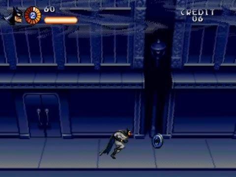
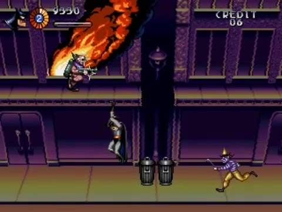
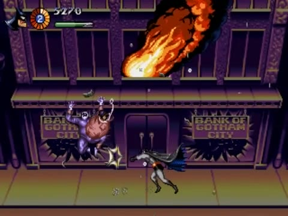
- Nouvelle scène 2D, racine
S1Streets, scriptsection.gd. Enregistre enres://sections/s1_streets.tscn. Laisse la racine en (0, 0) : tout le niveau se repère par rapport à elle. - Construis l'arbre ci-dessous. Les éléments marqués ◇ viennent plus loin dans cette étape.
S1Streets (Node2D, section.gd) next_scene = (provisoirement) s1_streets.tscn · player = Player
├── Background (CanvasLayer, layer = -10)
│ └── Facade (ColorRect) facade_raster.gd + raster_plane.gdshader (comme à l'étape 08)
├── World (Node2D)
│ ├── Ground (StaticBody2D) couche 1 · rectangle 3000×16 · en (1500, 208)
│ ├── Balcony (StaticBody2D) couche 2 · plusieurs CollisionShape2D one-way de 8 px de haut, y = 112
│ ├── Ledges (Node2D) une Area2D couche 8 sous chaque tronçon de balcon, y = 108
│ ├── Props (Node2D) poubelles, crânes
│ ├── Fires (Node2D, caché) ◇ foyers fire.gd devant les fenêtres de la banque
│ ├── ArenaA … ArenaD (WaveArena) ◇
│ ├── BankEvent (Area2D) ◇
│ └── BossArena (Area2D) ◇ → HarleyMachine
├── EnemyBullets (Pool) groupe « enemy_bullets » · scene = enemy_bullet.tscn
├── Player (player.tscn) en (40, 200)
└── Camera (Camera2D, camera_rig.gd) target = Player
└── Debris (CPUParticles2D) ◇ papiers et billets, émis après l'explosion
- Le balcon à trous : sous
Balcony, unCollisionShape2Dpar tronçon, par exemple de x = 200 à 900, de 1 000 à 1 800 et de 1 900 à 2 600. Chaque forme : rectangle de (longueur)×8, One Way Collision coché, position y = 112. Ajoute desColorRectsemi-transparents pour les voir. - Les rebords : pour chaque tronçon, une
Area2D(couche 8) positionnée en y = 108, avec une forme de (longueur)×4 en (0, 2). - Pour
Facade, réutilise la façade de test et la courbe de l'étape 08. Astuce : copie le nœudBackgroundde la salle de test (Ctrl C) et colle-le ici (Ctrl V). - Sélectionne la racine et renseigne Player et Next Scene (provisoirement la section elle-même : elle bouclera sur elle-même tant que la section 2 n'existe pas).
On construit le niveau en formes grises (ou semi-transparentes) avant tout décor définitif. On peut ainsi régler les distances, la hauteur du balcon, la place des arènes et le rythme, et tout déplacer en quelques secondes. Le décor est la dernière couche, posée quand le niveau est amusant.
F6 : Batman parcourt une rue de 3 000 px avec un balcon à trous, sur lequel il peut monter en s'accrochant. La façade défile derrière. Pour mourir, provisoirement, place un piège spikes : Batman perd une vie et réapparaît ; à la troisième mort, la section recommence (version minimale du game over).
9.3 · Placer les arènes
À ~117 px/s, chaque seconde de vidéo représente environ 117 px de rue. Ce découpage est donc approximatif : ajuste-le en jouant.
| Repère vidéo | X approx. | Contenu |
|---|---|---|
| 1:46 | 0–320 | Départ, poubelles, premier bonus d'arme |
| 1:52–2:25 | ~480 | Arène A : clowns du balcon et de la rue (2 vagues) → GO! |
| 2:27 | ~700–1000 | Couloir : tireurs, crâne ; la façade de la banque apparaît |
| 2:44 | ~1100 | Événement de la banque |
| 2:51–3:18 | ~1300 | Arène B : costauds, sbires armés → GO! |
| 3:20–3:37 | ~1650 | Arène C : mélange, tireurs sur le balcon → GO! |
| 4:06–4:42 | ~2200 | Arène D : tireurs, clowns → GO! |
| 4:44 | ~2500–2700 | Rue vide, puis BossArena |
- Place quatre
WaveArenaaux X du tableau (forme 8×224, masque 3, Go Sign Scene renseignée). - Remplis leurs vagues. Une proposition de départ :
- A : [clown] quota 4, max 2, origines top + balcony ; puis [clown] quota 5, max 3.
- B : [clown, thug] quota 5, max 3 ; puis [thug, gunner] quota 4, max 2.
- C : [gunner] quota 3, origine balcony ; puis [clown, gunner, thug] quota 6, max 3.
- D : [clown, gunner] quota 8, max 4 ; puis [thug] quota 3, max 2.
- Dans
Props, place quelquestrash_can.tscn(avec unWeaponPickup) dans les couloirs, et unskull_bomb.tscnvers x = 800. - Dans le couloir entre A et la banque, pose deux
gunner.tscnà la main sur le balcon.
Arène (tension, écran figé) → couloir (détente, on avance) → arène… Le joueur respire entre deux combats, et un nouvel ennemi ou un bonus dans un couloir se remarque d'autant mieux. Quand tu places tes arènes, garde cette alternance, et fais monter la difficulté d'une arène à l'autre.
Joue la rue entière. Note dans ton journal chaque moment où tu t'ennuies (trop long, trop facile) et chaque moment où tu meurs sans comprendre pourquoi. Ce sont tes deux listes de réglages.
L'explosion de la banque
9.4 · Observer l'événement
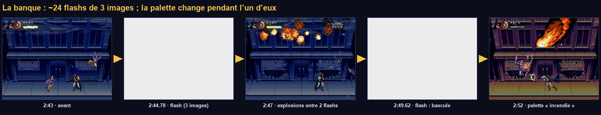
De 2:43.9 à 2:50.4 : des explosions en chaîne à l'étage, et environ 24 flashs blancs de 3 images chacun, à intervalles irréguliers (un toutes les 0,27 s en moyenne). La palette bascule vers le violet et l'ocre à 2:49.6, pendant un flash. Ensuite, des flammes sortent des fenêtres et des papiers tombent en continu.
Changer tout le décor d'un coup serait brutal. Les flashs servent de rideau : c'est pendant l'un d'eux qu'on change la palette, qu'on allume les feux et qu'on lance les débris. Quand le blanc retombe, le monde a changé, et le joueur l'accepte comme la conséquence de l'explosion.
9.5 · Préparer la façade « incendie »
Version simple : une seconde texture de façade, aux couleurs de l'incendie, qu'on échangera pendant un flash. Avec la façade de test, il suffit de relancer le générateur avec d'autres teintes.
- Dans
make_debug_facade.gd, change deux lignes :const PATH := "res://art/s1/facade_debug_fire.png"etvar hue := Color.from_hsv(0.75 + (band % 6) / 6.0 * 0.2, 0.6, 0.55)(des violets vers le rose). - Exécute-le, puis remets les deux lignes d'origine.
- Avec de vrais décors, ce serait la même façade repeinte en violet et ocre ; la version fidèle est la bascule indexée de l'étape 08.
9.6 · bank_event.gd
Comprendre le code
- Ici,
awaitest le bon outil : c'est une séquence scriptée, linéaire, qui ne dépend d'aucun état de jeu. Une bouclewhileavec des pauses se lit comme un scénario. - Les exports déclarés au milieu du fichier sont permis en GDScript, mais on les met d'habitude en haut. Déplace-les si tu préfères : c'est un bon exercice de lecture.
facade.material.set_shader_parameter("plane", …): le plan raster a dupliqué son matériau dans_ready();facade.materialdésigne bien cette copie.
- Sous
World, ajouteBankEvent(Area2D, masque 3, forme 8×224) en x ≈ 1 100, avec ce script. - Enfants de
BankEvent: trois ou quatreMarker2Dà la hauteur des fenêtres de l'étage (y ≈ 60). Glisse-les dans le tableau Blast Points. Fires: trois instances du foyer de l'étape 08 (Sprite2D+fire.gd) à la hauteur des fenêtres. Le script les cache au démarrage.Debris(enfant de la caméra) :CPUParticles2D, Emitting décoché, Amount 30, Lifetime 6, Emission Shape = Rectangle avec Rect Extents = (160, 2) (ce sont des demi-tailles : la zone fait 320×4), position (0, -120), Gravity (0, 30), Angle aléatoire, une petite texture (un rectangle blanc de 3×2 fait l'affaire).- Renseigne les exports de
BankEvent: Facade, Fire Texture (facade_debug_fire.png), Fires, Debris.
En passant x ≈ 1 100 : des explosions à l'étage et des flashs blancs stroboscopiques pendant 6,5 s. Pendant l'un des derniers flashs, la façade change de couleurs, les feux apparaissent et les papiers commencent à tomber. Ils continuent jusqu'au boss.
24 flashs blancs en 6 s forment un stroboscope qui peut gêner les personnes photosensibles. C'est fidèle à l'original, mais un jeu moderne propose une option : remplace flash_white(3, 7) par flash_white(3, 3) (flash atténué) quand l'option est active. Penser à l'accessibilité fait partie du métier.
Le premier boss
9.7 · La base commune des boss
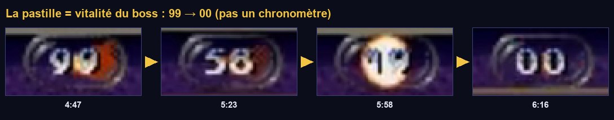
Boss.vitality().Et la fonction de tir balistique, à ajouter à fx.gd :
call_group, le message à qui veut l'entendreLe boss ne sait pas si un HUD existe. Il « crie » show_boss à tous les nœuds du groupe hud. S'il n'y en a aucun (comme maintenant, avant l'étape 10), rien ne se passe et rien ne plante. C'est un découplage encore plus fort que les signaux.
Pour qu'une bombe lobée tombe sur Batman, on fixe la durée du vol et on résout l'équation du mouvement pour trouver la vitesse de départ. Changer time donne des lobes plus tendus ou plus hauts, sans toucher au reste.
9.8 · La machine d'Harley : le plan du combat
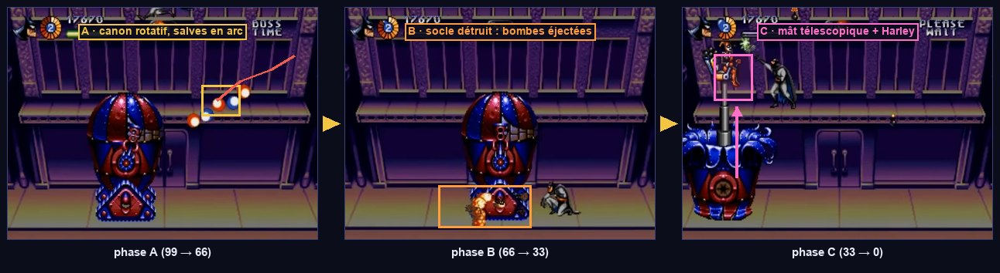
| Phase | Vitalité | Partie vulnérable | Attaque | Mouvement |
|---|---|---|---|---|
| A · complète | 99 → 66 | Capsule | Salves de 4 boules en arc, canon qui balaie de l'horizontale à la verticale | Glisse de gauche à droite |
| B · capsule | 66 → 33 | Capsule | Canon qui tourne à 360°, salves plus fréquentes | Plus rapide |
| C · Harley | 33 → 0 | Harley seule | Bombes lobées sur Batman | Mât télescopique qui monte au niveau du balcon |
- Des phases liées à des seuils de vie : le combat évolue, et le joueur sent qu'il progresse.
- Une transition spectaculaire (explosion, pièce qui saute), avec une brève invincibilité pendant laquelle le joueur souffle.
- Un point faible qui se déplace : en phase C, il faut monter sur le balcon pour atteindre Harley. Le décor devient un élément du combat.
- La télégraphie : le canon pointe là où il va tirer.
9.9 · La machine d'Harley : le code
Comprendre le code
_check_phaseest branché surhealth.changed: c'est la vie qui pilote les phases, pas le temps.maximum * 66 / 99donne le seuil quelle que soit la vie maximale choisie._transitioning+health.invincible: pendant la transition, le boss ne bouge plus, ne tire plus et n'encaisse plus. Le joueur voit la pièce exploser et souffle._go_phaseutiliseawait: c'est une séquence scriptée (explosions, puis pièce qui disparaît, puis pause). Pendant ce temps,_physics_processest bloqué par_transitioning.- Changer de partie vulnérable revient à basculer
monitorablesur deux Hurtbox : la capsule cesse d'être visible pour les tirs, Harley le devient. - Toutes les bombes passent par
Fx.spawn(): le boss est l'enfant de laBossArena, placée loin de l'origine. Avec l'ancien schéma (global_positionpuisadd_childsous le parent), les bombes apparaîtraient à des milliers de pixels.
9.10 · Monter la machine dans la rue
- Deux variantes de bombe : clic droit sur
bomb.tscn→ Nouvelle scène héritée. Dans la copie, Fall Gravity = 300 : enregistre enres://bosses/harley_machine/harley_ball.tscn. Recommence avec Bounces = 0 :harley_bomb.tscn. - La scène du boss : nouvelle scène, racine
Node2DnomméeHarleyMachine, scriptharley_machine.gd, enregistrée dansres://bosses/harley_machine/. Construis l'arbre ci-dessous ; chaqueSprite2Dutilisewhite.pngavec une échelle et une couleur (socle rose 64×24, capsule rayée rouge 56×48, canon gris 24×6 dont le pivot est à gauche, couronne bleue 60×12, mât gris, Harley 16×20).
HarleyMachine (Node2D, harley_machine.gd) score_value = 5000 ├── Health max_health = 99 (À CALIBRER) ├── Base (Node2D) socle rose à pointes │ └── Sprite2D ├── Capsule (Node2D) position (0, -24) : posée sur le socle │ ├── Sprite2D matériau hit_flash (Local To Scene) │ ├── Hurtbox couche 6 · health = Health │ │ └── CollisionShape2D │ └── Cannon (Node2D) pivot du canon, sur le côté du dôme │ ├── Sprite2D décalé de +12 en x : le canon part du pivot │ └── Muzzle (Marker2D) bout du canon, en (24, 0) ├── Crown (Sprite2D, caché) couronne bleue « en pétales » ├── Mast (Node2D, caché) │ ├── Pole (Sprite2D) texture white.png : sa hauteur est étirée par le code │ └── Harley (Node2D) │ ├── Sprite2D Harley dans son fauteuil │ └── Hurtbox couche 6 · health = Health └── HitFlash (HitFlash) target = Capsule/Sprite2D · hurtbox = Capsule/Hurtbox
- Exports du boss : Ball Scene =
harley_ball.tscn, Harley Bomb Scene =harley_bomb.tscn. - L'arène du boss : sous
World, uneArea2DnomméeBossArena, scriptboss_arena.gd, masque 3, forme 8×224, en (2 700, 112). InstancieHarleyMachinecomme enfant deBossArena, en position locale (0, 96) : son origine est au sol (y = 208). - Exports de
BossArena: Boss =HarleyMachine, Section =S1Streets.
- Pour aller vite, déplace temporairement
Playerà x = 2 550. En entrant dans l'arène, la caméra se fige et la machine démarre une seconde plus tard. - Phase A : elle glisse, le canon balaie, des salves de 4 boules partent en arc et rebondissent. Les boules naissent bien au bout du canon.
- Accroupi, Batman esquive les boules basses. Les tirs sur la capsule la font clignoter.
- Au tiers de la vie : explosions, le socle disparaît, 4 bombes en couronne, la capsule descend. Phase B : le canon tourne en continu.
- Aux deux tiers : le dôme explose, Harley monte sur son mât jusqu'au niveau du balcon et lobe des bombes là où se trouvait Batman. Monte sur le balcon pour la toucher.
- À 0 : explosions en anneau, la machine disparaît, Batman prend la pose de victoire, et 3 s plus tard la section recommence par un fondu (en attendant la section 2).
- Le boss ne démarre pas : vérifie le masque 3 de
BossArenaet ses exports. - « Invalid get index 'score_value' » à la mort du boss : l'export Boss de l'arène est vide.
- Le boss perd de la vie avant le combat : as-tu bien la version de
skull_bomb.gdqui vérifieboss.get("active")? - Harley est intouchable en phase C : sa Hurtbox doit être sur la couche 6 et désigner le même
Healthque la capsule.
Vitalité (99 points, donc 99 batarangs de niveau 1), cadence des salves et vitesses des boules sont des hypothèses. Les seuils 66 et 33 découpent le combat en trois tiers, ce qui correspond aux durées observées dans la vidéo (~35 s, ~38 s, ~18 s). Chronomètre ton combat et compare.
9.11 · Jouer la section de bout en bout
- Remets
Playerau départ, en (40, 200). - =
s1_streets.tscn. Désormais F5 lance la section. (L'étape 10 remplacera par l'intro.) - Joue la section entière trois fois, sans rien modifier entre deux parties. Note tout dans ton journal.
- Puis règle : position des arènes, contenu des vagues, vie du boss.
Jouer pour tester n'est pas jouer pour s'amuser : on note ce qu'on ressent au moment où on le ressent, sans corriger en cours de partie. Ensuite seulement, on trie et on règle. Mieux encore : fais jouer quelqu'un d'autre et regarde-le sans rien dire. Tout ce qu'il ne comprend pas est un problème de ton jeu, pas de lui.
Point de contrôle
- La section apparaît par un fondu en 8 paliers ; les arènes s'enchaînent avec leurs « GO! ».
- À la banque : explosions et flashs stroboscopiques de 3 images, puis rue en feu, flammes ondulantes, papiers qui tombent.
- Le boss glisse, tire des arcs de boules, perd son socle à 66, son dôme à 33, puis Harley monte sur son mât.
- À 00 : explosions, pose de victoire, +5 000, fondu, et la scène suivante se charge.
- Mourir fait perdre une vie et réapparaître ; sans vie, la section recommence.
Ce que tu retiens
Pourquoi la banque utilise-t-elle await alors que Batman n'en utilise pas ?
La banque est une séquence linéaire, qui ne peut pas être interrompue par une décision de jeu : await la rend lisible comme un scénario. La logique de Batman, elle, peut être interrompue à tout moment (coup reçu, mort) : des compteurs dans les états évitent les minuteries fantômes.
Qu'est-ce qui déclenche les changements de phase du boss ?
Le signal health.changed, comparé à des seuils (66 % et 33 % de la vie). Les phases suivent donc les dégâts infligés par le joueur, quel que soit le temps passé.
Pourquoi le boss « crie » au HUD par call_group au lieu de l'appeler directement ?
Pour ne pas dépendre de son existence. S'il n'y a pas de HUD (scène de test, HUD pas encore écrit), l'appel ne touche personne et rien ne plante. Le boss n'a besoin de connaître ni la place ni le type du HUD.
Comment calcule-t-on la vitesse de départ d'une bombe qui doit atterrir sur Batman ?
On choisit la durée du vol t. Horizontalement, vx = dx / t. Verticalement, y(t) = y0 + vy·t + g·t²/2, donc vy = dy / t − g·t / 2.
Pour aller plus loin
- Ajoute l'option d'accessibilité : une variable
Game.reduce_flasheslue parbank_event.gd. - Ajoute à la machine une
Hitboxde contact (masque 5) : toucher la machine fait mal. - Lis le tome 07 du guide et compare ta section à la frise du tome 01.
HUD, écrans et flux de jeu
Ce qui transforme une section jouable en un jeu : un HUD fidèle, l'intro, l'écran titre, les options, le choix du héros, les interludes, le « continue », la musique, et le chef d'orchestre qui enchaîne tout. On le fait maintenant, pour que les deux sections suivantes s'insèrent dans un vrai jeu.
Ce que tu vas apprendre
Godot 4
- Les nœuds
Control, les ancres, le focus Themeet police par défaut- Dessiner soi-même :
_draw(),queue_redraw() AnimationPlayeret pistes d'appel de méthode- Bus audio,
AudioStreamPlayer,ConfigFile
Développement de jeu
- Le jeu comme machine à états
- Le HUD découplé par signaux
- La cinématique comme frise temporelle
- Réglage persistant contre état de partie
- L'attract mode des jeux d'arcade
Le flux
10.1 · Le jeu est une machine à états

SceneFlow les enchaîne avec des fondus.┌────────► Intro (attract) ──Start──┐ │ ▼ │ 20 s sans touche ◄────────── Title ──OPTIONS──► Options ──Start──┐ │ │ START │ │ ▼ ▼ │ PlayerSelect ──► Batmobile ──► TitleCard « LEVEL ONE » │ │ │ ┌────────────────────────────────────────────────────────┘ │ ▼ │ S1 Rues ──► S2 Gem Expo ──► S3 Convoi ──► LevelEnd (Batmobile) ──► Title │ │ │ │ │ └──── plus de vies ──► Continue ──oui (crédit)──► reprise de la section │ └──non / 0 crédit──► Title
Titre, sélection, partie, continue : chaque écran est un état du jeu, chaque scène Godot en est la réalisation, et SceneFlow gère les transitions. Ce sont les mêmes idées que pour Batman, à l'échelle de l'application entière. Recopie ce schéma : chaque flèche est un appel à SceneFlow que tu vas écrire.
10.2 · SceneFlow, version complète
Remplace le contenu de scene_flow.gd :
_busy: un second appel pendant une transition est ignoré. Sans lui, deux appuis rapides sur Start lanceraient deux fondus entremêlés.- Les chemins des écrans sont des constantes : on les écrit à un seul endroit.
L'audio
10.3 · Bus audio et autoload Audio
- Ouvre le panneau Audio (en bas). Ajouter un bus deux fois : renomme-les
MusicetSFX. Leur sortie (Send) estMaster. - Facultatif : sur
Music, ajoute un effetCompressoravec Sidechain =SFX: la musique baisse sous les grosses explosions (ducking). - Crée
res://autoload/audio.gdet ajoute-le en autoloadAudio. Ordre final des autoloads :Game,PaletteFx,Audio,SceneFlow.
Un lecteur de musique placé dans une section serait détruit au changement de scène : la musique se couperait à chaque fondu. Dans un autoload, elle survit et enchaîne. pitch_jitter varie légèrement la hauteur de chaque bruitage : dix coups de poing identiques paraissent mécaniques, dix coups légèrement différents paraissent vivants.
La section reçoit sa musique. Version finale de section.gd :
La bande-son originale est en synthèse FM : Godot ne lit pas les fichiers VGM. Pour un projet personnel, convertis tes propres enregistrements en OGG. Pour un projet publiable, compose ou utilise une musique libre de droits. Sans musique, play_music(null) ne fait rien : tout fonctionne.
Le HUD
10.4 · Un thème pour tout le jeu
ThemeTous les nœuds Control (textes, boutons, barres) tirent leur apparence d'un Theme. En 320×224, la police par défaut de 16 px est énorme : on règle une fois pour toutes un thème global.
- Crée une ressource
Theme:res://ui/theme.tres. Dans l'Inspecteur, Default Font Size = 8. Facultatif : Default Font = une police pixel libre (par exemple « Press Start 2P », licence OFL). - (Custom) =
theme.tres.
10.5 · Le médaillon et la jauge, dessinés à la main

hud.tscn._draw()L'anneau de vie segmenté n'existe pas comme nœud tout fait. Un Control peut se dessiner lui-même : on surcharge _draw(), on y appelle draw_arc(), draw_circle(), draw_rect(), et on demande un nouveau dessin avec queue_redraw() quand la donnée change. Godot ne redessine pas à chaque image : seulement quand on le demande.
setvar lives := 2: set(value): … déclare un setter : chaque fois qu'on écrit medallion.lives = 3, la fonction s'exécute. Ici, elle demande un nouveau dessin. L'extérieur n'a pas à savoir qu'il faut redessiner.
10.6 · hud.tscn et hud.gd
- Nouvelle scène, racine
CanvasLayernomméeHud, Layer = 10, scripthud.gd. Enregistre enres://ui/hud.tscn. - Enfant
ControlnomméRoot: Ancres → Rect complet, Mouse → Filter = Ignore. - Sous
Root, place les nœuds aux positions et tailles indiquées (Inspecteur → Layout → Transform) :
Hud (CanvasLayer, hud.gd) layer = 10
└── Root (Control, plein écran, mouse_filter = Ignore)
├── Portrait (TextureRect) (2, 2) 24×24 : tête du héros
├── Medallion (Control) (26, 1) 26×26 : life_medallion.gd
├── Score (Label) (56, 0)
├── Charge (Control) (56, 12) 52×6 : charge_bar.gd
├── BossBadge (Control) (146, 2) 28×12
│ ├── ColorRect 28×12, rouge sombre : la pastille
│ └── Value (Label) « 99 », centré
└── P2 (Label) (246, 2) PRESS START / CREDIT 06 / GAME OVER
- Instancie
hud.tscndanss1_streets.tscn(n'importe où dans l'arbre : unCanvasLayers'affiche toujours par-dessus le monde).
F5 : le HUD affiche le médaillon (anneau orange plein, « 2 » au centre), le score, la jauge colorée qui se remplit quand tu ne tires pas, et « PRESS START / CREDIT 06 / GAME OVER » qui alternent en haut à droite. Prends un coup : l'anneau perd des segments. Ramasse un bonus vert : la jauge devient verte. Au boss : la pastille apparaît avec « 99 », descend sous tes tirs, et la zone de droite affiche « BOSS TIME / PLEASE WAIT ».
Ni Batman, ni Game, ni le boss ne savent que le HUD existe. Le HUD écoute : Game.score_changed, player.health.changed, weapons.charge_changed, et répond aux appels de groupe du boss. Supprime le HUD de la section : le jeu tourne exactement pareil. C'est le découplage par signaux poussé jusqu'au bout.
Les écrans
10.7 · L'intro, une frise temporelle

AnimationPlayer.Un AnimationPlayer peut animer n'importe quelle propriété (position, visibilité, couleur) et appeler des méthodes à un instant précis. On construit toute l'intro sur une frise temporelle, à la souris, sans aucun code de minuterie. Le découpage complet de la vraie intro est dans le tome 10 ; ici, on fait une version courte avec des textes.
- Nouvelle scène, racine
ControlnomméeIntro(Rect complet), scriptintro.gd, enregistrée enres://screens/intro.tscn. - Enfants : un
ColorRectnoir plein écran, puis troisLabelcentrés nommésPlan1(« SEGA »),Plan2(« ARKHAM ASYLUM »),Plan3(« CLOCKWORK TORTOISE »), tous cachés. Et unAnimationPlayer. - Sélectionne l'
AnimationPlayer: le panneau Animation s'ouvre. Animation → Nouveau :intro, longueur 9 s. - Pistes de propriété : sélectionne
Plan1, place la tête de lecture à 0 s, coche Visible dans l'Inspecteur et clique sur l'icône de clé à côté : une clé est créée. À 2,5 s, décoche et crée une clé. Fais de même pourPlan2(3 → 6 s) etPlan3(6,5 → 9 s). - Piste d'appel de méthode : + Ajouter une piste → Piste d'appel de méthode, choisis le nœud
Intro. Clic droit sur la piste à 3,5 s → Insérer une clé → méthodelightning. Ajoute-en une deuxième à 4,2 s.
F6 sur l'intro : les trois plans s'enchaînent, deux éclairs (flashs de palette) frappent pendant « ARKHAM ASYLUM ». À la fin, la console signale que title.tscn n'existe pas encore : c'est la prochaine étape. J ou Entrée passe l'intro.
10.8 · L'écran titre
Le menu ne propose que START et OPTIONS, superposés au logo (1:28). Sans action, le jeu repart en boucle sur l'intro (1:04) : c'est l'attract mode des bornes d'arcade, qui montrait le jeu aux passants.
- Scène
res://screens/title.tscn: racineControlTitle(Rect complet), scripttitle.gd. Enfants :ColorRectnoir plein écran,LabelLogo(« BATMAN & ROBIN », grand, centré, Modulate alpha 0),VBoxContainernomméMenu(centré en bas) avec deuxButtonnommésStartetOptions(textes « START », « OPTIONS », Flat coché), et unAnimationPlayer. - Animation
revealde 1,5 s : une piste surLogo:modulate, alpha 0 à 0 s → alpha 1 à 1,5 s. Elle est obligatoire : le script attend sa fin pour afficher le menu. - : coche Afficher les actions intégrées, trouve
ui_acceptet ajoute-lui le bouton Start de la manette. « Start » validera ainsi les menus, comme sur la console.
Les boutons Godot réagissent à ui_accept quand ils ont le focus. Sans grab_focus(), personne ne l'a et la manette ne fait rien. Avec le focus, les flèches passent d'un bouton à l'autre automatiquement : Godot déduit les voisins de la position des boutons.
10.9 · Les options et un réglage qui persiste
D'abord, Game apprend à lire et écrire le réglage des crédits. Ajoute à game.gd :
Scène res://screens/options.tscn : racine Control (script options.gd), fond noir, un VBoxContainer nommé List centré, avec trois Label nommés Credits, Music, Sound.
L'écran des options ne modifie pas directement Game.credits : la valeur serait écrasée par new_game() au lancement de la partie. On distingue le réglage (credits_setting, enregistré sur le disque) de l'état de la partie (credits, consommé par les continues). Le réglage a un seul propriétaire, Game, qui sait le lire, l'écrire et l'appliquer.
user:// et ConfigFileres:// est en lecture seule une fois le jeu exporté. user:// désigne un dossier propre au jeu dans le profil de l'utilisateur (sur macOS : ~/Library/Application Support/Godot/app_userdata/<projet>/). ConfigFile lit et écrit des fichiers texte au format INI : idéal pour des réglages. t'y emmène.
10.10 · La sélection du héros
« PLAYER SELECT » : l'écran est coupé en deux bandes, bleue en haut avec Batman qui court, rouge en bas avec Robin (1:33–1:38).
- Scène
res://screens/player_select.tscn: racineControl(script). DeuxColorRectnommésBatman(bleu, moitié haute) etRobin(rouge, moitié basse), chacun avec unLabel(« BATMAN », « ROBIN ») et unAnimatedSprite2DnomméRunner. - Chaque
Runnera besoin des animationsrunetidle. Avec les formes de substitution : dupliqueplaceholder_frames.tresenrunner_placeholder.tres, renommedefaultenidleet ajoute une animationrunavec la même image.
Haut/bas : la bande choisie s'éclaire, l'autre s'assombrit. Valider appelle Game.new_game() : le héros est mémorisé, les crédits sont remis au réglage des options, et player.gd chargera robin.tres si tu as choisi Robin (étape 05).
10.11 · Les interludes et le continue
Batmobile, carte-titre et fin de niveau : trois écrans fixes de quelques secondes. Un seul script suffit.
| Scène | Contenu | next_scene |
|---|---|---|
res://screens/batmobile.tscn | La Batmobile file dans la nuit (ou un Label « BATMOBILE » en attendant) | res://screens/title_card.tscn |
res://screens/title_card.tscn | « LEVEL ONE / HAPPY BIRTHDAY TO ME! » (planche « Title Cards » du dépôt, via une AtlasTexture) | res://sections/s1_streets.tscn |
res://screens/level_end.tscn | Batmobile, puis « À suivre : niveau 2 » | res://screens/title.tscn |
- Crée les trois scènes d'interlude : racine
Controlplein écran avecinterlude.gd, un fond noir et unLabelou unTextureRectcentré. Renseigne Next Scene selon le tableau. - Crée
res://screens/continue.tscn:Control+ fond noir + unLabelnomméLabel, centré. - Dans
s1_streets.tscn, mets enfin Next Scene =res://screens/level_end.tscn: en attendant les sections 2 et 3, finir le boss termine le « niveau ».
La partie analysée ne contient aucun game over : la présentation exacte de l'écran de continue est inconnue. Le décompte de 9 à 0 est une convention de l'époque, pas une observation.
10.12 · Le jeu de bout en bout
- =
res://screens/intro.tscn. - F5 et joue tout le parcours.
- Intro (Start pour passer) → titre → START → sélection → Batmobile → carte-titre → section 1, avec des fondus en paliers partout.
- Sans toucher au titre pendant 20 s, l'intro repart.
- Options : passe les crédits à 3, sors avec Start, relance le jeu : le réglage est conservé. Lance une partie : « CREDIT 03 » dans la zone de droite du HUD.
- Perds toutes tes vies : écran de continue ; Start reprend la section (crédit −1, score remis à zéro). Laisse le décompte finir : retour au titre.
- Bats la machine d'Harley : Batmobile de fin, puis retour au titre.
Tu as maintenant une tranche verticale (vertical slice) : une petite partie du jeu, mais complète de haut en bas, de l'intro au générique, avec toutes ses couches (menus, HUD, gameplay, effets, son). C'est le jalon qu'un studio présente pour prouver qu'un jeu fonctionne. Les sections 2 et 3 ne sont plus « le jeu » : ce sont du contenu ajouté à un jeu qui marche déjà.
Point de contrôle
- Au lancement : intro → titre → sélection → Batmobile → carte-titre → section 1, avec des fondus en paliers.
- Le HUD affiche le portrait, l'anneau de vie, les vies, le score, la jauge colorée, et la pastille 99 → 00 pendant le boss.
- Le réglage des crédits survit au redémarrage et s'applique à la partie suivante.
- En perdant toutes les vies : écran de continue ; Start reprend la section tant qu'il reste des crédits.
- Après le boss : écran de fin, puis retour au titre.
Ce que tu retiens
Pourquoi le HUD attend-il une image avant de se brancher sur le joueur ?
Le HUD et le joueur sont dans la même scène, et l'ordre de leurs _ready() dépend de leur place dans l'arbre. En attendant une image (await get_tree().process_frame), le HUD est sûr que le joueur a fini son _ready() (fiche du héros chargée, système d'armes en place).
Pourquoi le menu titre appelle-t-il grab_focus() ?
Parce qu'un bouton ne réagit au clavier ou à la manette que s'il a le focus. Sans focus initial, aucune touche ne fait rien ; avec, les flèches naviguent et ui_accept valide.
Quelle différence entre credits et credits_setting ?
credits_setting est un réglage choisi dans les options et enregistré sur le disque. credits est l'état de la partie en cours, initialisé depuis le réglage par new_game() et consommé par les continues.
Qu'apporte une piste d'appel de méthode dans un AnimationPlayer ?
Elle appelle une fonction à un instant précis de la frise (un flash, un son, un changement de plan). La cinématique entière se règle visuellement, sans minuteries dans le code.
Pour aller plus loin
- Enrichis l'intro avec les plans du tome 10 : fourgon de police, façade en contre-plongée, moniteurs, main gelée.
- Ajoute un bruitage aux tirs : un
@export var shot_sound: AudioStreamdansWeaponSystemetAudio.sfx(shot_sound)danstry_fire(). - Ajoute un écran de pause :
get_tree().paused = true, et un menu dont leprocess_modeestALWAYS.
Section 2 : Gem Expo et grappin
Une exposition de joyaux construite en salles réutilisables, un entrepôt peint en tuiles, une apparition d'Harley pour annoncer la suite, puis le morceau de bravoure technique du niveau : le grappin de grue en sphères qui plonge dans la profondeur.
Ce que tu vas apprendre
Godot 4
- Scènes comme modules de niveau
Parallax2Den pratiqueTileSetetTileMapLayeravec collisionsTweenchaînés et parallèlesz_index,Vector3en 2D
Développement de jeu
- Construire avec des modules
- L'annonce d'un boss
- La projection perspective
- L'algorithme du peintre
- La vulnérabilité liée à la profondeur
Le Gem Expo
11.1 · Observer la répétition

La même salle revient plusieurs fois : colonnes de marbre, bannière « GEM EXPO », vitrines, plantes en pot (6:24, 7:28, 8:32). Elle alterne avec une salle à grandes baies vitrées sur la ville (7:51).
Une cartouche de 1995 n'avait pas la place pour un décor unique de plusieurs milliers de pixels : les niveaux étaient faits de blocs et de salles réutilisés. Dans Godot, une salle est une scène qu'on instancie bout à bout. Corriger un détail dans la salle le corrige partout. Les arènes et les ennemis restent dans la scène de section : chaque instance de salle peut accueillir un combat différent.
11.2 · Deux salles
- Salle « bannière » : nouvelle scène 2D
res://sections/s2/expo_hall.tscn, racineExpoHall. Elle fait 640 px de large. Contenu, en formes de substitution :- un mur (
ColorRect640×200, beige) de y = 0 à 200 ; - trois colonnes (
ColorRect32×200, blanc cassé) à x = 80, 300, 520 ; - une bannière (
Label« GEM EXPO » sur unColorRectrouge) en haut ; - deux vitrines basses : chacune un
StaticBody2D(couche 2, forme one-way 48×8) avec unColorRectvitré de 48×24, posées sur le sol.
- un mur (
- Salle « baies vitrées » : →
expo_windows.tscn. Remplace le mur plein par deux murs de part et d'autre d'une grande ouverture (x = 160 à 480, y = 40 à 160) : on verra la ville à travers. Dans l'ouverture, deux vitresBreakable(Health 1, Hurtbox couche 6, Broken Texture = une image de vitre étoilée, ou rien).
Les salles ne contiennent pas de sol. Mettre bout à bout des sols séparés crée des jointures sur lesquelles un personnage peut accrocher. Le sol est un seul long StaticBody2D dans la scène de section ; les salles n'apportent que le décor et les meubles.
Mesure du guide : les colonnes défilent exactement à la vitesse du mur et Batman passe devant elles. Ce sont des éléments du décor, au même plan que le mur : pas besoin de couche à part, ni de parallaxe. Mesurer avant de coder évite d'ajouter un effet qui n'existe pas.
11.3 · La section et la skyline
- Nouvelle scène 2D
res://sections/s2_gem_expo.tscn, racineS2GemExpo(scriptsection.gd), en (0, 0). - Construis l'arbre. Skyline doit être le premier enfant : les nœuds sont dessinés dans l'ordre de l'arbre, donc elle sera derrière les salles.
S2GemExpo (Node2D, section.gd) next_scene = level_end.tscn (provisoire) · player = Player ├── Skyline (Parallax2D) scroll_scale (0.3, 0) · repeat_size (640, 0) │ └── Buildings (Node2D) quelques ColorRect sombres de hauteurs variées, sur 640 px ├── World (Node2D) │ ├── Ground (StaticBody2D) couche 1 · rectangle 4400×16 en (2200, 208) │ ├── Hall1 (expo_hall.tscn) x = 0 │ ├── Windows1 (expo_windows.tscn) x = 640 │ ├── Hall2 (expo_hall.tscn) x = 1280 │ ├── Windows2 (expo_windows.tscn) x = 1920 │ ├── Hall3 (expo_hall.tscn) x = 2560 │ ├── ArenaA, ArenaB (WaveArena) dans les salles │ ├── Warehouse (Node2D) à partir de x = 3200 (11.5) │ ├── HarleyFlyby (Area2D) (11.6) │ └── BossArena → CraneHarley (11.8) ├── EnemyBullets (Pool) · Player · Camera (camera_rig.gd) · Hud
- Dans la section 1, remplace Next Scene par
res://sections/s2_gem_expo.tscn.
F6 sur la section 2 : en courant, les salles défilent avec le sol, et la ville, visible par les baies, défile trois fois moins vite. Les vitres se brisent sous les tirs. Monte sur les vitrines.
11.4 · Les vagues de têtes à hélice

- Dans
ArenaA(vers x = 450), place deuxFormationenfants :- « Chenille » : une courbe qui descend à la verticale depuis le haut de l'écran, puis serpente vers la gauche. 8 membres,
delay0,3 s. - « Ligne » : une courbe horizontale en haut de l'écran, de droite à gauche. 6 membres,
delay0,25 s.
- « Chenille » : une courbe qui descend à la verticale depuis le haut de l'écran, puis serpente vers la gauche. 8 membres,
- Vague 1 de
ArenaA: quelques clowns (quota 4) + Formation = Chenille. Vague 2 : quota 4 + Formation = Ligne. ArenaB(vers x = 2 000) : clowns, costauds et tireurs, comme une arène de la section 1.
La chenille descend puis serpente, la ligne traverse le haut de l'écran, et toutes deux bombardent pendant que les clowns arrivent. La première vague lance sa formation dès l'entrée dans l'arène sans erreur dans la console : c'est le démarrage différé de WaveArena (étape 07) qui le permet.
L'entrepôt
11.5 · Peindre des caisses avec une TileMapLayer

TileSet et TileMapLayerUne TileMapLayer peint une grille de tuiles prises dans un TileSet. Chaque tuile peut porter une forme de collision : peindre une caisse, c'est aussi créer son sol et ses murs. C'est l'outil standard pour construire des niveaux 2D (et l'héritier direct des métatuiles de la Mega Drive). TileMapLayer remplace l'ancien TileMap depuis Godot 4.3.
D'abord, des images de test pour cette section : des caisses, et les sphères du grappin (11.7).
- Exécute
make_debug_s2.gd. - Sous
Warehouse, ajoute uneTileMapLayernomméeCrates. Inspecteur → Tile Set → Nouveau TileSet, puis clique dessus : Tile Size = 16×16. - Toujours dans le
TileSet: Physics Layers → Ajouter un élément. Règle sa Collision Layer sur la couche 1 seule (« monde »). - Panneau TileSet (en bas) : glisse
crates.pngdans la liste des sources et accepte la création automatique des tuiles. - Onglet Sélectionner du panneau TileSet, choisis une tuile → Physics → Physics Layer 0 : dans l'éditeur de polygone, appuie sur F pour remplir toute la case. Recommence pour l'autre tuile.
- Onglet TileMap du panneau : choisis une tuile et peins dans la vue 2D (clic gauche peint, clic droit efface). Dessine trois ou quatre pyramides de caisses posées sur le sol, de x = 3 200 à 3 900. Une case fait 16 px : le sol est à y = 200, donc la rangée du bas va de y = 184 à 200.
Batman monte de marche en marche (une marche de 16 px se franchit en sautant), les clowns butent contre les caisses. Active les formes de collision visibles : chaque caisse a son carré.
11.6 · Harley passe : une annonce en pleine partie
À 9:25–9:29, Harley traverse l'écran en diagonale dans son fauteuil-fusée, sans combattre. Le joueur sait désormais qui l'attend.
Montrer l'adversaire avant le combat crée de l'attente et donne du sens au parcours. C'est une technique de mise en scène vieille comme le cinéma, et presque gratuite à réaliser : un sprite et une trajectoire.
- Crée
res://bosses/crane_harley/harley_flyby_sprite.tscn: unSprite2D(white.png, scale (1,5 ; 1,2), modulate rose). - Sous
World, uneArea2DHarleyFlyby(masque 3, forme 8×224) vers x = 3 500, scriptharley_flyby.gd, Harley Scene = la scène du sprite.
TweenUn Tween anime une propriété d'une valeur à une autre sur une durée, avec une courbe d'accélération (TRANS_SINE, EASE_IN_OUT : départ et arrivée en douceur). Les appels s'enchaînent : tween_callback s'exécute une fois l'animation précédente terminée. Créé sur le nœud animé (h.create_tween()), il s'arrête avec lui.
En arrivant vers x = 3 500, un rectangle rose traverse l'écran en diagonale, de bas en haut, en accélérant puis en ralentissant, et disparaît.
Le grappin en sphères
11.7 · La projection perspective

- Des sphères : sous n'importe quel angle, une sphère reste un disque avec son reflet au même endroit. Pas besoin de rotation.
- Environ 20 sphères, chacune un sprite.
- 4 tailles de sphère orange et 2 de sphère noire, pré-calculées : pas de mise à l'échelle.
- Une vraie position 3D, projetée à l'écran.
- Quand le bras part vers le fond, il s'assombrit.
On décrit le bras en 3D (x à droite, y vers le bas, z vers le fond). Pour l'afficher, on divise par la profondeur : un point deux fois plus loin paraît deux fois plus petit et deux fois plus proche du centre. Avec une « focale » f : s = f / (f + z), puis écran = (x, y) × s. Le facteur s donne aussi la taille apparente et la luminosité. C'est toute la « 3D » du jeu.
Comprendre le code
- Une seule vérité, la position 3D : les états (
TRACK,DROP…) ne modifient quehub(unVector3) etopen._layout()en déduit tout le reste à chaque image : position, taille, luminosité et ordre de dessin des 23 sphères. _place()fait trois choses avec le même facteurs: la position (projection), la taille (choix parmi les images pré-calculées, viaframe), la luminosité (4 paliers, comme 4 palettes de plus en plus sombres).z_index = -z: l'algorithme du peintre. Sans tampon de profondeur, on dessine du plus lointain au plus proche. Godot trie les enfants parz_index; sur la console, le programme triait la table des sprites à chaque image.claw_hitbox.monitoringn'est vrai que pendant la frappe et dans le plan du joueur (|z| < 12). Ce qui a l'air loin ne touche pas.call_group("camera", "shake", …): le tremblement n'existe qu'à l'étape 13. D'ici là, personne n'est dans le groupecamera, et l'appel ne fait rien.
11.8 · Harley, son fauteuil et le mini-boss
- Nouvelle scène
res://bosses/crane_harley/crane_harley.tscn, racineNode2DCraneHarley, scriptcrane_harley.gd:
CraneHarley (Node2D, crane_harley.gd) score_value = 5000
├── Health max_health = 80 (À CALIBRER)
├── Arm (Node2D, sphere_arm.gd) origine = point d'accroche de la chaîne (haut de l'écran)
│ └── ClawHitbox (Hitbox) couche vide · masque 5 · damage 2
│ └── CollisionShape2D cercle de rayon 14
└── Harley (Node2D, harley_chair.gd)
├── Sprite2D white.png scale (1,5 ; 1,2), rose · matériau hit_flash (Local To Scene)
├── Hurtbox couche 6 · health = Health
│ └── CollisionShape2D rectangle 22×18
└── HitFlash target = Sprite2D · hurtbox = Hurtbox
Arm: Orange Sphere =sphere_orange.png, Dark Sphere =sphere_dark.png.Harley: Bomb Scene =harley_bomb.tscn(la variante sans rebond de l'étape 09).- Dans la section, une
BossArenaen (4 200, 112), avecCraneHarleycomme enfant en position locale (0, -112) : le point d'accroche est en haut de l'écran (y = 0). Exports : Boss, Section. - Prolonge le sol jusqu'à x = 4 500 si besoin.
- À l'entrée de l'arène, la pastille « 99 » apparaît. Le grappin suit Batman, s'abat (explosion au sol), se referme, remonte.
- Parfois, il part dans le fond : il rapetisse, s'assombrit, et passe derrière la chaîne. Pendant ce temps, il ne fait pas mal.
- Harley vole en huit dans le haut de l'écran et lobe des bombes là où se trouvait Batman. Il faut la viser en diagonale haute.
- À 00 : Harley part en vrille, s'écrase, explosions, le grappin remonte, pose de victoire, +5 000, puis la scène suivante.
- Les sphères sont toutes de la même taille : la texture n'a pas le bon nombre de cases (4 pour l'orange, 2 pour le sombre), ou le générateur n'a pas été exécuté.
- Le grappin ne bouge pas : c'est normal avant le début du combat (
set_physics_process(false)) ; vérifie que l'arène lance bien le boss. - Le grappin ne touche jamais : masque 5 sur
ClawHitbox, et vérifie queground_yamène la pince jusqu'à la hauteur de Batman (le sol est à 200 px sous le point d'accroche).
Quand le grappin passe dans le fond, il est plus petit, plus sombre et inoffensif : le visuel dit la vérité sur le gameplay. Règle d'or de toute pseudo-3D : ce qui a l'air loin ne doit pas toucher. Tu retrouveras la même règle avec la montgolfière du Joker.
Point de contrôle
- Le Gem Expo s'assemble avec deux salles réutilisées ; la ville défile plus lentement derrière les baies.
- Une chenille de têtes à hélice descend puis serpente ; une ligne traverse le haut de l'écran.
- L'entrepôt est peint en tuiles avec collisions ; Harley passe en diagonale sans combattre.
- Le grappin suit Batman, s'abat, se referme, remonte et parfois s'enfonce dans le fond, plus petit et plus sombre.
- Harley vole et lobe des bombes. À 00 : vrille, crash, K.O., +5 000, section suivante.
Ce que tu retiens
Pourquoi les salles n'ont-elles pas leur propre sol ?
Des sols séparés bout à bout créent des jointures où un personnage peut accrocher. Un seul sol continu dans la section évite le problème ; les salles n'apportent que le décor et les meubles.
Que donne la formule s = f / (f + z) ?
Le facteur de réduction d'un point situé à la profondeur z : 1 au premier plan (z = 0), de plus en plus petit en s'éloignant. On l'utilise pour la position à l'écran, pour choisir l'image de la bonne taille et pour la luminosité.
À quoi sert z_index = -z ?
À trier l'affichage : les sphères les plus proches (z petit) ont un z_index plus grand et sont dessinées par-dessus les lointaines. C'est l'algorithme du peintre.
Pourquoi peindre les caisses avec une TileMapLayer plutôt qu'avec des StaticBody2D ?
Parce que chaque tuile porte son image et sa collision : peindre une pyramide crée à la fois le décor et le sol. On construit, modifie et efface un niveau à la souris, en quelques secondes, sans gérer des dizaines de nœuds.
Pour aller plus loin
- Remplace
modulatepar des sphères indexées etindexed.gdshaderavec une palette de 4 lignes (étape 08) : la fidélité totale. - Ajoute une ombre au sol sous le grappin (une ellipse sombre dont la taille dépend de
hub.y) : elle aide le joueur à anticiper l'impact. - Lis le tome 08 du guide, et regarde la vidéo de Jon Burton sur le bras de grue.
Section 3 : convoi et Joker
Une rue qui file à toute vitesse, des camions dont les écarts s'ouvrent et se ferment, des ballons-mines qui montent, puis le Joker dans sa montgolfière, qui fond sur Batman depuis le fond de l'écran. C'est la fin du niveau 1.
Ce que tu vas apprendre
Godot 4
AnimatableBody2Detsync_to_physicsParallax2D.autoscrolluse_parent_material- Composer des
Tweenpour une séquence de fin
Développement de jeu
- Le référentiel : la vitesse sans bouger
- Les plateformes mobiles
- La pseudo-3D par l'échelle
- Un boss qui alterne présence et absence
- Terminer un niveau
Le convoi
12.1 · Le monde ne bouge pas, la rue si
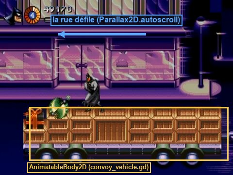
De 10:44 à 13:03 : les vitrines et les réverbères défilent en continu, les véhicules se suivent (plateau à caisses, fourgon violet, plateau nu, voiture de police), et les écarts entre eux varient légèrement.
Faire réellement rouler des camions à 80 km/h en suivant le joueur compliquerait tout : caméra, ennemis, projectiles. On inverse le point de vue : le convoi est immobile dans le monde, et c'est la rue qui défile derrière lui. Le joueur ne voit aucune différence ; le code reste celui d'un niveau normal. Sur Mega Drive, c'était pareil : le « mouvement » n'est qu'une valeur de défilement du plan de fond.
12.2 · La section et la rue qui défile
- Nouvelle scène 2D
res://sections/s3_convoy.tscn, racineS3Convoy(scriptsection.gd), en (0, 0). - En premiers enfants (donc dessinés derrière), deux
Parallax2D:Street: Scroll Scale (1, 0), Repeat Size (640, 0), Autoscroll (-300, 0). Enfants : un fond sombre (ColorRect640×170), des vitrines roses et des réverbères (ColorRect) répartis sur 640 px.Road: mêmes réglages mais Autoscroll (-420, 0). Enfants : une chaussée grise de 640×54 en y = 170, avec des marquages blancs tous les 80 px.
- Complète l'arbre :
S3Convoy (Node2D, section.gd) next_scene = res://screens/level_end.tscn · player = Player ├── Street (Parallax2D) autoscroll (-300, 0) · repeat_size (640, 0) ├── Road (Parallax2D) autoscroll (-420, 0) · plus rapide : plus proche ├── World │ ├── Convoy (Node2D) les véhicules (12.3) │ ├── Gift (Breakable) paquet géant → spawn_enemy = clown (12.5) │ ├── KillZone (Area2D) sous la chaussée (12.4) │ ├── ArenaBalloons (WaveArena) (12.5) │ └── BossArena → JokerBalloon sur le dernier plateau (12.6) ├── EnemyBullets (Pool) · Player · Camera (camera_rig.gd) · Hud
- Dans la section 2, mets Next Scene =
res://sections/s3_convoy.tscn(ou dans la section 1, si tu as sauté l'étape 11).
autoscroll fait défiler la couche toute seule, en px/s, en plus de son mouvement lié à la caméra. Avec repeat_size, son contenu boucle à l'infini ; il doit faire au moins la largeur de l'écran (ici 640 ≥ 320). Deux couches à des vitesses différentes donnent la profondeur : la chaussée, plus proche, défile plus vite que les vitrines.
12.3 · Le véhicule, une plateforme mobile
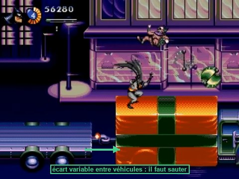
AnimatableBody2DC'est le corps physique prévu pour les plateformes déplacées par script ou par animation. Avec sync_to_physics, son déplacement est calculé au rythme de la physique, et un CharacterBody2D posé dessus reçoit automatiquement sa vitesse (platform velocity) : Batman avance avec le camion sans une ligne de code. Essaie avec un StaticBody2D qu'on déplace : Batman resterait sur place et le camion glisserait sous ses pieds.
- Nouvelle scène, racine
AnimatableBody2DnomméeConvoyVehicle, scriptconvoy_vehicle.gd, couche 2 seule, masque vide. Enregistre enres://sections/s3/convoy_vehicle.tscn. - Enfants :
Body(Sprite2DouColorRect: cabine + plateau, environ 160×40), unCollisionShape2Dpour le plateau (rectangle 140×8, One Way Collision coché), et unNode2DnomméWheelsavec trois roues (Sprite2Dwhite.pnggris, avec un trait pour voir la rotation). - Variantes : à partir de cette scène, crée des scènes héritées :
truck_crates.tscn(avec des caisses : formes rectangles non one-way, posées sur le plateau),van.tscn(un toit one-way plus haut),police_car.tscn(plus court et plus bas). - Sous
Convoy, aligne une douzaine de véhicules de x = 0 à environ 2 800, plateaux vers y = 160, avec des écarts de 24 à 40 px. Répète la séquence plateau à caisses → fourgon → plateau nu → voiture de police. Batman démarre sur le premier.
La rue file derrière ; les roues tournent ; les véhicules avancent et reculent doucement. Posé sur un plateau immobile, Batman est emporté par le mouvement du camion. Saute de véhicule en véhicule ; monte sur les caisses.
Les caisses sont sur la couche 2 comme les plateaux. « Bas + saut » coupe toute la couche 2 pendant 0,25 s : debout sur une caisse, Batman la traverse et retombe sur le plateau. C'est acceptable (et pratique pour redescendre). Pour l'empêcher, mets les caisses sur la couche 1.
12.4 · Tomber du convoi
Sous World, une Area2D KillZone, masque 3, avec un rectangle de 3 200×16 en (1 400, 240) : sous le bas de l'écran.
Rate un saut : Batman tombe entre deux véhicules, passe en « Dead », puis réapparaît depuis le haut de l'écran, au-dessus du convoi, avec une vie de moins.
La vidéo ne montre aucune chute. On suppose qu'elle est mortelle, comme dans la plupart des run & gun. Si tu préfères être indulgent, replace plutôt Batman sur le véhicule le plus proche avec un peu de dégâts.
12.5 · Ballons-mines et paquet géant
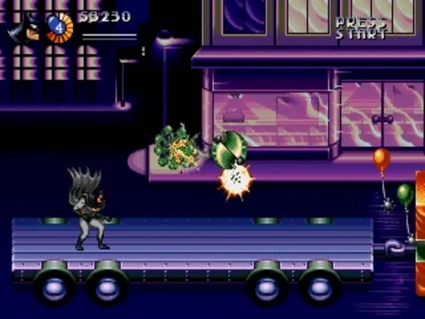
- Une
WaveArenaArenaBalloonsvers x = 1 000, avec Ground Y = la hauteur des plateaux (≈ 160). Deux vagues deballoon_mine.tscn:origins= ["below", "right"],max_alive= 8,spawn_interval= 0,4, quotas 14 et 18. - Le paquet géant : une instance de
breakable.gd(comme la poubelle, mais 32×32, rouge et vert), posée sur un plateau vers x = 1 600, avec Spawn Enemy =clown.tscnet Health 3. - Un crâne sur un plateau juste avant l'arène des ballons (12:24 dans la vidéo).
Dans l'arène, des ballons de quatre couleurs montent du bas en oscillant ; Batman les abat en diagonale haute ou à la verticale. Le crâne fait tout exploser d'un coup. Plus loin, trois tirs sur le paquet libèrent un clown.
La montgolfière du Joker
12.6 · Observer un passage
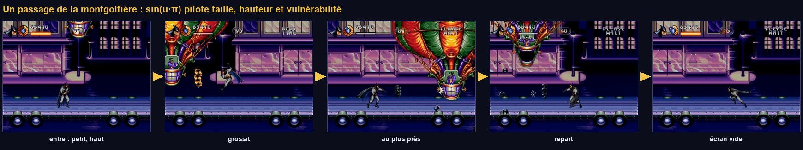
- Chaque « passage » : entrée par un bord, petite et haute ; elle grossit en descendant vers le plateau ; traverse ; sort par l'autre bord, puis quelques secondes d'écran vide (13:59–14:04).
- Certains passages sont géants (13:22), d'autres moyens.
- Des grappes de petites bombes noires, en ligne ou en colonne, qui rebondissent.
- Un flash pastel de tout le ballon quand il est touché ; la vitalité baisse surtout quand il est proche.
Un seul paramètre, la taille apparente, raconte toute la 3D : petit = loin, grand = près. On le pilote par une courbe en cloche, sin(u × π), qui monte de 0 à 1 puis redescend pendant le passage. La même valeur commande la taille, la hauteur (le ballon descend en approchant) et la vulnérabilité : on ne peut le toucher que lorsqu'il est assez proche. Comme sur la console, la taille est arrondie à des paliers (Fx.snap_scale, étape 08).
12.7 · joker_balloon.gd
Comprendre le code
- Deux états seulement :
WAIT(hors écran) etPASS. Toute la richesse du combat vient d'une variable continue,u(avancement du passage de 0 à 1), dont on dérive la clochebump. bumpcommande à la fois l'échelle (petit → grand → petit), la hauteur (haut → bas → haut) et, via l'échelle, la vulnérabilité et le droit de lâcher des bombes. Une seule cause, plusieurs effets cohérents.Fx.snap_scalearrondit l'échelle à 8 paliers : le ballon « saute » de taille en taille, comme des sprites pré-calculés._neartiré au hasard : un passage sur deux est géant._sidealterne : le ballon entre une fois par la gauche, une fois par la droite.- La séquence de mort enchaîne trois
Tweenet des explosions avecawait: c'est une petite cinématique.
12.8 · Monter la montgolfière
- Nouvelle scène
res://bosses/joker_balloon/joker_balloon.tscn:
JokerBalloon (Node2D, joker_balloon.gd) score_value = 10000 · origine = centre du plateau ├── Health max_health = 120 (À CALIBRER) ├── Visual (Node2D) matériau hit_flash (Local To Scene) │ ├── Envelope (Sprite2D) white.png scale (4, 4) en (0, -40), rouge · Use Parent Material │ ├── Basket (Sprite2D) white.png scale (2, 1) en (0, 0), vert · Use Parent Material │ ├── Hurtbox couche 6 · health = Health · sur la nacelle │ │ └── CollisionShape2D rectangle 32×16 │ └── DropPoint (Marker2D) (0, 12) : sous la nacelle ├── JokerFigure (Sprite2D, caché) white.png scale (1, 1.5), violet : le Joker éjecté └── HitFlash target = Visual · hurtbox = Visual/Hurtbox · amount = 0.55
- Bomb Scene =
bomb.tscn(1 rebond). - Le dernier véhicule du convoi : un plateau nu, Drift Amplitude = 0 (sol stable). Une
BossArenaau centre de ce plateau, avecJokerBallooncomme enfant placé exactement à la surface du plateau :high_yetlow_ysont relatifs à ce point. - Exports de la
BossArena: Boss et Section.
use_parent_materialLe shader de flash est posé sur Visual, un simple Node2D. En cochant Use Parent Material sur l'enveloppe et la nacelle, ils utilisent le matériau de leur parent : un seul paramètre flash fait clignoter tout le ballon d'un coup.
- La caméra se fige au centre du plateau, la rue continue de défiler derrière, la pastille « 99 » apparaît.
- Le ballon entre petit et haut, grossit par paliers en descendant, lâche des grappes de bombes (en ligne ou en colonne), traverse et ressort. Écran vide, puis il revient par l'autre côté.
- Tes tirs le traversent quand il est petit ; quand il est grand, il clignote en pastel et la vitalité baisse.
- À 00 : il se fige au centre, explosions en chaîne, le Joker est éjecté et retombe sur le plateau, pose de victoire, +10 000, fondu, écran de fin.
D'autres descriptions du jeu évoquent une montgolfière qui rebondit au sol et charge à l'horizontale. Ces attaques n'apparaissent pas de 13:04 à 14:36. Si tu les vois dans un émulateur, ajoute un état CHARGE : échelle fixée à 1, y = low_y, traversée rapide (1,5 s) et Hurtbox active. Un excellent exercice pour vérifier que tu maîtrises les machines à états.
12.9 · Le niveau complet
- Vérifie la chaîne des Next Scene :
title_card→s1_streets→s2_gem_expo→s3_convoy→level_end→title. - F5 et joue le niveau en entier, de l'intro à la Batmobile finale. Chronomètre : la vidéo de référence dure 14:37.
Tu viens de terminer un niveau complet. C'est l'étape que la plupart des projets amateurs n'atteignent jamais : ils ajoutent des fonctionnalités sans jamais boucler la boucle. Un jeu court mais fini vaut plus qu'un jeu long à moitié fait. Fais un commit, et prends le temps de le faire essayer à quelqu'un.
Point de contrôle
- La rue défile en continu ; Batman saute de camion en camion, emporté par leur mouvement ; les écarts varient.
- Tomber entre deux véhicules coûte une vie.
- Des ballons-mines montent du bas en oscillant ; un paquet géant libère un sbire.
- La montgolfière entre petite et haute, grossit par paliers, lâche des grappes de bombes, ressort ; elle n'est vulnérable que lorsqu'elle est grande.
- À 00 : explosions, Joker éjecté et assommé, pose de victoire, +10 000, écran de fin, retour au titre.
Ce que tu retiens
Pourquoi le convoi est-il immobile dans le monde ?
Parce que seul le mouvement relatif compte pour le joueur. Faire défiler le décor plutôt que déplacer le convoi garde une caméra, des ennemis et des projectiles normaux, sans compenser une vitesse partout dans le code.
Qu'apporte AnimatableBody2D par rapport à un StaticBody2D qu'on déplace ?
Il transmet sa vitesse aux corps posés dessus : Batman est emporté par le camion. Un StaticBody2D déplacé glisserait sous ses pieds.
Comment la montgolfière sait-elle si elle est vulnérable ?
Par son échelle courante : hurtbox.monitorable = sc >= vulnerable_scale. Petite (loin), les tirs la traversent ; grande (proche), elle encaisse. Le visuel dit la vérité sur le gameplay.
Pour aller plus loin
- Ajoute l'état
CHARGEdécrit plus haut. - Fais vibrer légèrement les véhicules (±1 px vertical à haute fréquence) pour renforcer l'impression de vitesse.
- Lis le tome 09 du guide.
Finitions, export et suite
Le jeu est complet. Il reste ce qui sépare un projet d'un jeu fini : le ressenti, la comparaison méthodique avec l'original, le ménage, la mesure des performances, l'export. Puis un regard en arrière sur ce que tu as appris, et des aide-mémoires à garder sous la main.
Ce que tu vas apprendre
Godot 4
Camera2D.offset,Engine.time_scale- Le profileur et les moniteurs
- Les modèles d'exportation et les préréglages
- Les filtres d'export
Développement de jeu
- Le ressenti (game feel) et sa mesure
- La passe de fidélité
- Le profilage avant l'optimisation
- La rétrospective (post-mortem)
Le ressenti
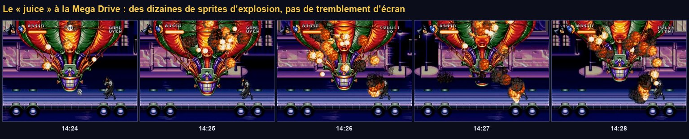
13.1 · Le tremblement de caméra
Une valeur de 0 à 1 qui augmente à chaque choc et décroît avec le temps ; l'amplitude du tremblement est proportionnelle à son carré : fort au début, il s'éteint en douceur. En 320×224, 4 à 6 pixels suffisent. On décale offset plutôt que la position, pour ne pas perturber le suivi du joueur.
Ajoute à camera_rig.gd :
Le grappin de la section 2 appelait déjà call_group("camera", "shake", 0.35) : maintenant que la caméra est dans le groupe, chaque impact secoue l'écran. Aucune autre ligne à changer. Ajoute aussi un shake(0.6) dans les die_sequence() des boss si tu veux.
13.2 · Le hit stop
- Au début de
HarleyMachine._go_phase(), ajouteFx.hit_stop(get_tree(), 0.1). - Joue la transition de phase avec et sans. Puis essaie 0,3 s : trop long, le jeu paraît planté.
La vidéo ne montre ni tremblement d'écran évident ni hit stop : ce sont des ajouts modernes. Utilise-les avec parcimonie, ou désactive-les pour un remake strict. C'est un choix de direction artistique : note-le dans ton journal, avec ta raison.
Le ressenti ne se juge pas en lisant du code. Enregistre deux courtes vidéos de ton jeu (avec et sans l'effet), regarde-les côte à côte, et compare-les à la vidéo de référence. L'œil voit tout de suite ce qui « tombe juste ».
La passe de fidélité
13.3 · Comparer à l'original, section par section
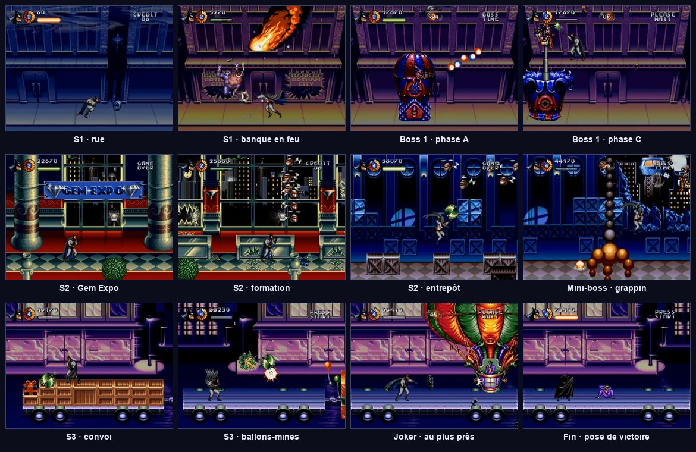
- Ouvre la checklist de fidélité du tome 11 dans un onglet, et la vidéo dans un autre.
- Joue une section, puis regarde la même section dans la vidéo. Coche ce qui est conforme, note ce qui ne l'est pas.
- Classe tes notes en trois colonnes : à corriger (bug ou écart gênant), à calibrer (un chiffre à ajuster), assumé (un écart volontaire, avec sa raison).
- Traite d'abord la colonne « à corriger », puis les réglages les plus visibles.
À la fin d'un projet, la liste des améliorations possibles est infinie. On n'essaie pas de tout faire : on trie par impact sur le joueur, et on s'arrête quand le reste ne se remarque plus. Un jeu n'est jamais terminé, il est publié.
Le ménage
13.4 · Ranger les outils de débogage
- Dans
player.tscn, cache leStateDebug(icône d'œil). Ne le supprime pas : il resservira. - Cache le
Placeholdersi tu as des sprites. - Retire les raccourcis de test de
test_room.gddu jeu final : ils ne sont que dans la salle de test, qui n'est jamais chargée par le flux du jeu. Vérifie-le. - Cherche les
print(restants : (Ctrl Maj F / ⌘ Maj F). Garde ceux des scripts d'éditeur, retire les autres. - Lance le jeu complet et vérifie que le panneau Débogueur → Erreurs reste vide. Chaque avertissement est un bug en attente.
13.5 · Mesurer les performances
On n'optimise jamais « au feeling ». On mesure, on trouve le vrai goulot, on corrige celui-là, et on remesure. Le niveau 1 est très léger pour une machine moderne ; l'exercice sert surtout à apprendre les outils.
- Pendant une arène chargée, ouvre Débogueur → Moniteurs : Object → Nodes, Time → FPS, Time → Physics Process. Le nombre de nœuds doit revenir au même niveau après chaque vague. S'il grimpe sans cesse, quelque chose n'est jamais libéré (une fuite).
- Débogueur → Profileur → Démarrer, joue 30 s, Arrêter. Trie par temps : quelles fonctions coûtent le plus ? Normalement, aucune de tes fonctions ne dépasse quelques dixièmes de milliseconde.
- Si tu veux retrouver la vraie limite de la console, plafonne le nombre total d'ennemis actifs vers 60. Au-delà, le jeu original aurait fait clignoter des sprites.
L'export
13.6 · Exporter ton jeu
- → Télécharger et installer (une seule fois par version de Godot).
- → Ajouter… → choisis ta plateforme (macOS, Windows Desktop, Linux, Web).
- Onglet Ressources : dans « Filtres pour exclure des fichiers », saisis
tools/*, sandbox/*. Les scripts d'éditeur et les essais jetables ne doivent pas partir avec le jeu. - : fond noir, ton propre logo, filtre désactivé.
- Exporter le projet, choisis un dossier hors du projet, lance l'exécutable obtenu.
- Le jeu exporté plante au chargement d'une image : un script charge un fichier par
Image.load_from_file("res://…")au lieu deload(). Seuls les scripts d'éditeur (exclus) le font ici. - Les options ne sont pas sauvegardées : vérifie que tu écris dans
user://et non dansres://(en lecture seule une fois exporté). - macOS refuse de lancer l'application : clic droit → Ouvrir, comme pour Godot lui-même.
Un build qui contient les sprites, la musique ou les logos originaux ne doit pas être publié. Avec tes formes de substitution et tes propres dessins, en revanche, tout t'appartient.
Regarder en arrière
13.7 · Ta rétrospective
Les studios terminent chaque projet par une rétrospective écrite. Elle transforme une expérience en connaissance réutilisable. Prends une heure, relis ton journal de bord, et réponds par écrit :
- Quelles sont les trois choses qui ont bien marché dans ta façon de travailler ?
- Quelles sont les trois choses qui t'ont coûté le plus de temps ? Auraient-elles pu être évitées ?
- Quelle erreur as-tu rencontrée le plus souvent ? Que vérifies-tu maintenant en premier ?
- Quel concept te semblait obscur au début et te paraît évident maintenant ?
- Si tu recommençais demain, que ferais-tu différemment ?
13.8 · Et après ?
- Le mode deux joueurs : le jeu original se joue à deux. Le tome 11 décrit la marche à suivre (actions préfixées
p1_/p2_, caméra entre les deux joueurs, arrivée en cours de partie). C'est un excellent exercice : il touche les entrées, la caméra, le HUD et les sections. - Le niveau 2 : tu as tous les outils. Regarde la suite de la vidéo, découpe le niveau comme le tome 01 l'a fait pour le niveau 1, puis construis-le avec ta méthode.
- Ton propre jeu : prends un concept simple, tiens-toi aux six principes, et fais d'abord une tranche verticale. Tu sais désormais construire un jeu de bout en bout.
- Le filtre CRT (optionnel) : le shader de l'ancienne doc B (tome 4) fonctionne tel quel, dans un
CanvasLayerde couche 101, donc au-dessus dePaletteFx.
Point de contrôle final
- Le jeu se lance depuis un exécutable exporté et se joue de l'intro à la Batmobile finale.
- Le panneau des erreurs reste vide pendant toute une partie.
- Ta checklist de fidélité est passée, avec ses écarts assumés.
- Ta rétrospective est écrite.
Annexe A · La boîte à outils de débogage
| Outil | Où | Quand s'en servir |
|---|---|---|
print(), print_debug() | dans le code | Savoir si une ligne est atteinte et avec quelles valeurs. print_debug ajoute le fichier et la ligne. |
| Point d'arrêt | clic dans la marge du script (point rouge), ou breakpoint | Figer le jeu sur une ligne et inspecter toutes les variables, puis avancer pas à pas (F10, F11). |
| Arbre distant | onglet Distant au-dessus de l'arbre de scène, jeu lancé | Voir l'arbre réel du jeu en cours, et modifier les propriétés en direct. |
| Formes de collision visibles | Toute question « pourquoi ça ne touche pas ? ». | |
| Moniteurs | Débogueur → Moniteurs | FPS, nombre de nœuds, mémoire, temps physique. |
| Profileur | Débogueur → Profileur | Trouver la fonction qui coûte cher. |
| Affichage de débogage | un Label au-dessus d'un personnage (étape 04) | Voir un état interne (état de la machine, vitesse) en jouant. |
| Raccourcis de test | _unhandled_input de la salle de test (étape 05) | Provoquer un cas rare à volonté. |
| Salle de test et bancs d'essai | sandbox/, test_room.tscn | Isoler une brique pour savoir si c'est elle qui est en cause. |
git diff, git stash | terminal | « Ça marchait hier » : voir ce qui a changé, ou mettre les changements de côté pour vérifier. |
Annexe B · Les erreurs fréquentes
| Message | Cause habituelle | Correction |
|---|---|---|
| Invalid get index 'x' (on base: 'null instance') | Un $Chemin ou un @export de nœud ne désigne rien | Vérifier le nom exact du nœud, la place dans l'arbre, ou assigner l'export dans l'Inspecteur |
| Could not find type "X" in the current scope | Le fichier de la classe n'existe pas encore, n'est pas enregistré, ou contient une erreur | Créer et enregistrer le fichier ; corriger l'erreur dans l'autre script |
| Function blocked during in/out signal | Modifier monitoring ou une forme pendant un signal de collision | set_deferred("monitoring", …) |
| Can't change this state while flushing queries | Ajouter un corps physique ou une zone pendant un signal de collision | add_child.call_deferred(), Fx.spawn(…, true), ou différer la fonction |
| État inconnu : X (message du parcours) | Le nœud d'état ne s'appelle pas exactement X | Renommer le nœud (majuscules comprises) |
| Un objet apparaît à des centaines de pixels de sa place | global_position réglé avant add_child() sous un parent décalé | Fx.spawn() |
| Rien ne touche rien | Couches et masques | Relire le tableau des couches (étape 02), afficher les formes de collision |
| Une ressource modifiée change partout | Les ressources sont partagées entre instances | « Rendre unique », ou « Local To Scene », ou duplicate() dans le code |
| Le personnage tombe à travers le sol | Masque sans la couche 1, ou sol sans forme | Vérifier le masque du corps et la forme du sol |
| Le jeu se fige après un hit stop | Minuterie soumise à time_scale = 0 | create_timer(d, true, false, true) |
Annexe C · Aide-mémoire GDScript
Annexe D · Ce que tu as appris
| Concept | Où tu l'as pratiqué |
|---|---|
Boucle de jeu, pas de temps fixe, delta | Étapes 01, 02 |
| Résolution virtuelle, pixel net | Étape 01 |
| Touches contre actions | Étape 02 |
| Couches et masques de collision | Étape 02, puis partout |
Composition par composants (Health, Hitbox, Hurtbox, HitFlash) | Étapes 02, 05, 08 |
| Patron Observateur (signaux), découplage | Étapes 01, 02, 06, 10 |
Machine à états finis (par nœuds, par enum, à l'échelle du jeu) | Étapes 02, 04, 05, 07, 10 |
| Prototype jetable, observer et mesurer la référence | Étape 03 |
| Physique arcade, saut variable, coyote time | Étapes 03, 04 |
| Caméra lissée, lissage exponentiel | Étape 04 |
| Préparation, images actives, récupération ; télégraphie | Étapes 05, 07, 09 |
Conception pilotée par les données (Resource) | Étapes 05, 06, 07 |
| Réserve d'objets (pooling) | Étape 06 |
| Directeur de vagues, tension et détente | Étapes 07, 09 |
| Shaders, effets raster, couleurs indexées | Étape 08 |
| Événement scripté, coroutines | Étape 09 |
| Grammaire d'un boss (phases, point faible, transitions) | Étapes 09, 11, 12 |
| Interfaces, focus, thème, dessin personnalisé | Étape 10 |
| Modules de niveau, tuiles | Étape 11 |
| Pseudo-3D : projection perspective, algorithme du peintre, échelle par paliers | Étapes 11, 12 |
| Plateformes mobiles, référentiel | Étape 12 |
| Ressenti, profilage, export, rétrospective | Étape 13 |
- Toujours avoir un jeu qui tourne.
- Des formes de substitution d'abord.
- Mesurer la référence avant de coder.
- Un nœud, une responsabilité.
- Les réglages dans des données, pas dans le code.
- Des petits pas vérifiés.
Sources
- Le guide vérifié, référence de tout le code de ce parcours.
- The Adventures of Batman & Robin (Genesis) Playthrough — NintendoComplete.
- Jon Burton, Coding Secrets : partie 1 et partie 2.
- Documentation officielle de Godot 4 (en français).